Зараз ви читаєте україномовну версію посібника користувача KOReader. Посібник також доступний іншими мовами. Багато мовних версій перебувають в процесі перекладу, що можна побачити нижче у загальному списку стану перекладу. Але, з огляду на можливість використання, посилання надаються лише на переклади, які виконані на понад 50%.
Перекладено понад 80%
Переглянути усі мови, якими перекладається цей посібник, а також зробити свій внесок у переклад, можна на сторінці Weblate перекладу нашого проекту. При роботі з перекладом просимо виявляти поміркованість і враховувати, що терміни та назви повинні у однаковому вигляді використовуватися у багатьох місцях інтерфейсу та довідки, що забезпечує розуміння функцій та використання програми. Бездумний уривчастий переклад може принести більше шкоди, ніж користі для користувачів.
Загальний стан перекладу посібника користувача

Цей посібник початково створений для кольорових екранів. Читати його вперше ми наполегливо рекомендуємо на комп'ютері, планшеті або мобільному телефоні, оскільки виділення у тексті назв елементів інтерфейсу кольорами значно полегшує сприйняття та розуміння того, як користуватися KOReader. Звісно, цей посібник також можна читати і на пристрої з екраном на е-чорнилах, але цей досвід не буде найкращим з можливих.
Щоб швидко знайти певну тему чи ключові слова, можна скористатися функцією пошуку на сторінці вебоглядача (зазвичай це комбінація клавіш Ctrl+F). Якщо ви маєте запитання чи пропозиції щодо цього посібника, їх можна написати у цій темі обговорення на GitHub (англійською мовою).
Частини тексту в цьому посібнику позначені кольором відповідно до їхніх категорій:
ЧАСТИНИ KOREADER (блакитний) |
Смуга стану, Мапа книги… |
ШЛЯХИ МЕНЮ (яснозелений) |
|
ЗОВНІШНІ ДОДАТКИ (багряний) |
Calibre, Readwise, KoHighlights... |
У посібнику також є різні вставки, які інформують або застерігають вас:
KOReader розробляється та підтримується волонтерами з усього світу. Ви також можете стати частиною цього проєкту та:
- Виправляти помилки та впроваджувати нові функції
- Перекладати програму вашою мовою або покращувати наявний переклад
- Допомагати своїми знаннями іншим на форумах або в обговореннях на GitHub
Відповідні посилання є у розділі «Зв'язок з нами».
Посібник востаннє оновлено 25.03.2025
- ЩО ВМІЄ KOREADER?
- ОСНОВНА ІНФОРМАЦІЯ ПРО ВИКОРИСТАННЯ
- ВИВЧЕННЯ ІНТЕРФЕЙСУ КОРИСТУВАЧА
- ПЕРЕМІЩЕННЯ ПО КНИЗІ
- ПРИСТОСУВАННЯ ВИГЛЯДУ ТЕКСТУ
Незважаючи на мінімалістичний вигляд, KOReader є дуже потужною програмою, яку можна гнучко налаштувати під власні вподобання. Цей розділ – це щось на зразок змісту для зручності орієнтування. Тож якщо ви є новим користувачем, найкраще почати звідси. Тут можна прочитати, що вміє робити KOReader, а також дізнатися як цього досягти, переходячи за такими посиланнями, щоб потрапити до згаданого розділу.
- Режим USB-накопичувача для пристроїв, що підтримуються
- Хмарне сховище (Dropbox/FTP/Webdav) з відповідними обліковими записами
- KOReader може виступати в ролі SSH сервера, тому можна використовувати додаток SFTP для безпосередньої передачі файлів
- За допомогою модуля Calibre можна через Wi-Fi надсилати книги з бібліотеки Calibre безпосередньо на пристрої з KOReader
- За допомогою модуля Завантажувач новин можна завантажувати новини RSS та Atom на свій пристрій у вигляді HTML-файлів
- За допомогою модуля Wallabag можна отримувати статті з облікового запису Wallabag (серверна послуга «прочитати пізніше» як, приміром, Pocket)
- Зміна шрифтів (включаючи власні), розміру шрифту, контрасту, жирності, нахилу, кернінгу, відстані між словами, розтягнення слів, вирівнювання тексту, проміжків між рядками, розташування стовпців, полів...
- Використання вбудованих підлаштування стилів або створення власних, щоб визначити, як саме будуть відображатися читані книги
- Інвертування кольорів у нічному режимі вручну або автоматично
- Автоматичне пристосовування теплоти (температури) підсвічування екрану
- Виділення тексту різними стилями та кольорами, збереження закладок
- Режим подвійного дотику для академічних (довгих) виділень тексту
- Додавання нотаток за допомогою налаштовуваної клавіатури, включно з діактричними модифікаторами
- Створення знімків екрану
- Відстеження статистики читання, зокрема поступу читання, витраченого часу та у вигляді календаря
- Гнучкий експорт нотаток та виділеного на пристрій у форматі простого тексту, розмітки Markdown, HTML, JSON або вирізок Kindle
- Синхронізація з онлайновими сервісами на зразок Joplin, Readwise, Memos, Flomo та XMNote
- Потужний Оглядач файлів, у якому можна копіювати, переміщати, перейменовувати, створювати й видаляти файли та теки, а також виконувати пакетні операції
- Перегляд бібліотеки у деталізованому чи мозаїчному вигляді
- Додавання книги до Обраних для швидкого доступу чи створення власних добірок з впорядкуванням і фільтруванням
- Віджет проглядання для швидкого переходу між сторінками, розділами, закладками
- Унікальна Мапа книги для погляду на книгу наче з висоти пташиного польоту, включно з вашими нотатками та виділеним
- Оглядач сторінок для переміщення між сторінками немов між кадрами кіноплівки
- Оглядач закладок для зручного проглядання вашого виділеного і нотаток
- Створення альтернативного змісту книги автоматично або власноруч, якщо вас не влаштовує зміст, який вже наявний у книзі
- Приховування і виключення певних частин книги (наприклад, додаток, зміст, бібліографічні посилання тощо) для точнішого підрахунку сторінок під час читання
- Система керування жестами з 200+ дій, якими можна контролювати кожну дрібницю в KOReader за допомогою дотику чи проведення пальцем
- За наявності клавіатури (вбудованої в пристрій, провідної або Bluetooth) можна також призначити комбінації клавіш на виконання цих дій
- Або створювати власні меню за допомогою функції Швидке меню та відкривати його дотиком або проведенням пальця по екрану
- Створення Профілів для контролю кожної дрібниці в KOReader і автоматизації дій
- Пошук в документі, виділяючи або вписуючи текст (включно з регулярними виразами)
- Пошук у закладках, виділеному та нотатках
- Пошук тексту у Вікіпедії або у встановлених словниках і переклад його затисканням
- Переклад одразу цілої сторінки на понад 130 мов
- Потужна система модулів, яка дозволяє навіть обговорити текст з ChatGPT (після встановлення модуля)
- KOReader може самостійно оновлюватися
- Зменшення яскравості або вимкнення підсвічування екрану через вказаний проміжок часу
- Встановлення частоти оновлення сторінки для різних умов читання
- Вибір власної заставки з безлічі варіантів, наприклад, випадкові зображення, обкладинка книги, читання, поступ читання і т.ін.
- Встановлення сповіщення при досягненні рівня заряду батареї, щоб запобігти глибокому розряду чи перезаряду батареї
- Встановлення сповіщення про рівень використання пам'яті (корисно для пристроїв з малим обсягом пам'яті) та, за бажанням, перезапуск KOReader при досягненні цієї межі
- Обрізання полів автоматично або вручну
- Перекомпонування документів, щоб витягнути текст для зручного читання на малому екрані
- Оптичне розпізнавання символів (OCR) в документах без текстового шару, як у старих книжках
- Різні типи масштабування і напрямки читання сторінок для зручного читання багатостовпцевих документів на зразок наукових статей
- Автоматична корекція нахилу надрукованих під кутом сторінок, які трапляються у старих книгах
- Збереження вашого виділеного прямо до PDF, які можна переглядати без KOReader
- Спеціальна функція масштабування панелі для читання мальописів і манґи
- Пристосування параметрів оновлення екрану для досягнення балансу між швидкістю та якістю відображення
- Додавання власних підлаштувань стилів CSS для книг
- Система користувацьких латок, що дозволяє змінювати глибинну поведінку KOReader
- Створення QR-коду з буфера обміну, щоб поділитися текстом та посиланнями з іншими пристроями
- Перегляд HTML-коду документів EPUB
- Створення та редагування текстових файлів на своєму пристрої
- Відкриття емулятора терміналу та запуск команд на своєму пристрої
- Перегляд статистики використання процесора, пам'яті та заряду акумулятора
KOReader підтримує файли в форматах PDF, DJVU, EPUB, FB2, MOBI, CBZ, CBT, DOCX, RTF, HTML, TXT, XPS, PDB, CHM та MD. Він також відкриває архіви ZIP та показує файли зображень.
Існує багато способів передати файли на пристрій. Майте на увазі, що для індексування нещодавно доданих документів може знадобитися перезапуск KOReader (або оновлення вмісту теки на пристроях PocketBook та Android).
На додачу до передачі файлів за допомогою вбудованої програми для читання, доступні інші способи, які залежать від пристрою, а саме:
- Режим USB-накопичувача у KOReader. Цей режим доступний для пристроїв Kobo і деяких пристроїв Cervantes.
- Хмарне сховище (Dropbox/FTP/Webdav). Щоб скористатися цією функцією потрібно додати обліковий запис на сервері хмарного сховища через меню, вказане нижче. Пояснення щодо процесу можна побачити натиснувши кнопку Інформація під час додавання облікового запису:
ВЕРХНЄ МЕНЮ (у Оглядачі файлів) /
 / Хмарне сховище
/ Хмарне сховище - Доступ через SSH/SFTP. KOReader може працювати як SSH-сервер, до якого можна доступитися з комп'ютера, щоб передати файли (працює на Kobo, Kindle, Cervantes). Можна використовувати програму SFTP (наприклад, Filezilla) або доступитися через файловий менеджер, якщо операційна система комп'ютера це підтримує. Дізнатися як це зробити можна у вікі, а заразом дивіться нижченаведений блок з попередженням.
- Передавання через Calibre. За допомогою модуля Calibre можна надсилати документи з бібліотеки Calibre безпосередньо на пристрій з KOReader через з'єднання Wi-Fi. Як це робити читайте у вікі.
- Завантажувач новин. З цим модулем можна завантажувати записи новин RSS та Atom як файли HTML. Як це робити описано у вікі.
- Wallabag. За допомогою цього модуля можна отримувати статті з Wallabag, що є серверною службою «прочитати пізніше» на зразок Pocket. Більше про це можна прочитати у вікі.
ПОПЕРЕДЖЕННЯ Будьте обережні, якщо вирішите використовувати функцію SSH без пароля, оскільки це дозволить відкритий доступ до вашого пристрою. Але якщо ви використовуєте локальну мережу Wi-Fi і вмикаєте Wi-Fi на пристрої на короткий проміжок часу, тоді цей ризик є незначним.
Можливі такі способи доступу до ваших книг:
- Оглядач файлів – присвячений йому розділ є тут: Використання Оглядача файлів
- Обране – список, в який можна додавати книги затиснувши їх у Оглядачі файлів
- Історія – список книг, які ви відкривали
- Добірки – створені вами персоналізовані списки книг. Присвячений цьому розділ є тут: Добірки
Вигляд цих екранів можна змінити тут:
Якщо бажаєте змінити кількість елементів, які відображаються на цих екранах, зазирніть сюди:
Для кожного з цих діалогів можна призначити жести. Наприклад, під час читання книги за допомогою жесту можна отримати доступ до Історії або Обраного, а також відкрити іншу книгу без необхідності переходу до Оглядача файлів.
В Історії книги можна шукати за назвою або метаданими книги за допомогою кнопки-«гамбургера» вгорі ліворуч.
Щоб KOReader завжди запускався на екрані Обране або Історія, замість екрана Оглядача файлів, це можна налаштувати тут:
На зображенні вище показано розташування типових ділянок дотику KOReader. Щоб відкрити верхнє меню та нижнє меню, торкніться показаних ділянок. Щоб відкрити верхнє меню можна також протягнути пальцем у верхній ділянці. На пристроях без сенсорного екрану (наприклад, Kindle 4) нижнє меню можна відкрити натиснувши на кнопку, яка відповідає дії Enter/OK.
Якщо бажаєте відкривати одночасно обидва меню, можете налаштувати ділянку дотику верхнього меню, щоб при натисненні на неї одночасно відкривалися обидва меню – верхнє меню та нижнє меню. Це можна зробити в цьому меню:
 / Дотики та жести / Активувати меню
/ Дотики та жести / Активувати меню
Кутові ділянки дотику можна використовувати для багатьох різних типів жестів, включаючи ДОТИК, ПОДВІЙНИЙ ДОТИК, ДОТИК ДВОМА ПАЛЬЦЯМИ та ЗАТИСКАННЯ.
Ділянки ПОПЕРЕДНЯ СТОРІНКА та НАСТУПНА СТОРІНКА також можуть одночасно використовуватися для жестів ПОДВІЙНИЙ ДОТИК.
Якщо у панелі стану показується лише один елемент, тоді при дотику до цієї ділянки будуть почергово показуватися усі елементи панелі стану. Якщо ж показуються усі елементи, дотик буде приховувати та показувати панель стану.
- Зміна шрифту*:
- Збільшити шрифт
- Зробити шрифт жирнішим
- Інвертувати кольори на екрані (біле на чорному)ВЕРХНЄ МЕНЮ / / Нічний режим
За допомогою НИЖНЬОГО МЕНЮ можна змінити також інші функції форматування, щоб зробити вигляд тексту якнайприємнішим для вас. Звісно, це лиш швидкі поради для початку роботи. У посібнику є цілий розділ, присвячений ПРИСТОСУВАННЮ ВИГЛЯДУ ТЕКСТУ
Керувати підсвічуванням екрану можна за допомогою цього меню. Якщо підсвічування може змінювати температуру світла (має звичайні білі та жовтогарячі світлодіоди), тоді кожним з цих параметрів підсвічування можна керувати окремо. Для цього діалогу також можна визначити жести:
/ ПідсвічуванняОбрати обкладинку книги або інше зображення як заставку можна за допомогою цього меню:
/ Екран / Зображення обкладинкиВ якості заставки екрану допускається використовувати файли JPG/PNG (найкраще виглядають правильно перетворені зображення в градаціях сірого). Скопіюйте файл з комп'ютера до будь-якої теки на пристрої, після чого оберіть цю теку як теку з заставками екрану за допомогою цього меню:
/ Екран / Зображення обкладинки / НалаштуванняДодаткову інформацію про підготовку зображень в якості заставок екрану можна дізнатися з цього допису форуму Mobileread.
Якщо ви шукаєте інформацію про комбінації клавіш, натисніть сюди, щоб перейти до відповідного розділу. Даний розділ пояснює тільки як можна використовувати клавіатуру.
- Щоб приховати клавіатуру, торкніться екрану за межами поля введення. Дотик у полі введення призведе до повторного виклику клавіатури
- Торкніться клавіші й протягніть палець вгору, щоб ввести цю літеру у верхньому регістрі (або в нижньому регістрі, якщо клавіатура вже у режимі Shift)
- Змінити вигляд клавіатури можна тут:
ВЕРХНЄ МЕНЮ / / Пристрій / Клавіатура / Налаштування вигляду клавіатури
- Можна додати більше однієї розкладки клавіатури:
ВЕРХНЄ МЕНЮ / / Пристрій / Клавіатура / Розкладка клавіатури
- Змінювати активну розкладку клавіатури можна натисканням значка на клавіатурі
Клавіатура KOReader дозволяє вводити додаткові символи затисканням кнопки. Нижче показано символи, які використовуються найчастіше. Щоб відкрити навколишні символи, затисніть сіру кнопку клавіатури:

На додачу до зринаючого вікна при затисненні, кнопки додаткових символів також можна відкрити протягнувши пальцем по кнопці. На наведеному нижче прикладі можна протягнути пальцем вгору на кнопці «a», щоб вписати велику літеру «A» або ж протягнути в інших напрямках, щоб вписати відповідні символи. Майте на увазі, що на нижченаведеному прикладі показано повне зринаюче вікно. Відкривати це зринаюче вікно не обов'язково, можна просто протягувати пальцем на кнопках. Щойно ви звикнете до розміщення додаткових символів, набирати текст таким чином буде набагато швидше.
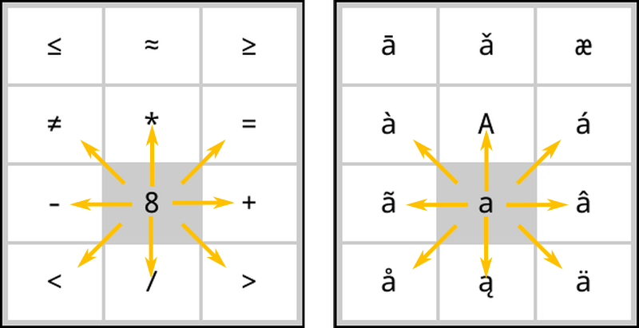Якщо ця функція заважає, її можна вимкнути знявши галочку тут:
/ Пристрій / Клавіатура / Введення додаткових символів протягуваннямНа додачу існують дії, які спрощують користування клавіатурою. Можна затиснути відповідні клавіші, щоб активувати їх додаткові функції:
- Стрілка вліво – переміщує курсор до початку рядка
- Стрілка вправо – переміщує курсор до кінця рядка
Також кнопка Backspace виконує різні дії, якщо натиснути на неї і протягнути пальцем, а саме:
- Дотик – видалити символ
- Затискання – видалити весь рядок
- Протягування ліворуч – видалити частину слова, яка знаходиться лівіше від курсора
- Протягування вгору – видалити ціле слово
Більше інформації можна знайти на відповідній сторінці вікі.
KOReader також інтегрує китайську клавіатуру з штрихами, яка дозволяє вводити символи традиційного і спрощеного китайського письма. Більше інформації про це можна прочитати у нашій вікі.
Цей модуль дозволяє автоматично підлаштувати теплоту (колір) підсвічування екрану на пристроях з теплим (жовтим/жовтогарячим) підсвічуванням і встановлює нічний режим (інвертує кольори – білий текст на чорному тлі) відповідно до розкладу. Він може контролювати обидва ці параметри або можна обрати режим керування лише теплотою підсвічування або керування лише нічним режимом, щоб інший параметр підлаштувати вручну.
Цей модуль є увімкненим одразу після встановлення KOReader. Якщо з якихось причин його немає в меню, його можна увімкнути тут:
/ Більше інструментів / Автотеплота підсвічування і нічний режимАвтоматично регулювати теплоту підсвічування екрану пристрою можна двома різними способами:
Сталий розклад: в цьому режимі теплота підсвічування екрану змінюється відповідно до визначеного вами щоденного розкладу. Цей режим є фіксованим, він не враховує тривалість світлового дня. Розклад залишається однаковим протягом всього року.
Позиція Сонця: цей параметр розраховує розташування Сонця згідно вашого місця розташування відповідно до введених відомостей про координати та висоту над рівнем моря. Теплота підсвічування екрану змінюється поступово, відповідно до розрахованої позиції Сонця. Цей режим є динамічним. Оскільки тривалість світлового дня протягом року є різною, модуль пристосовує розклад відповідним чином.
Щоб зрозуміти терміни, які використовуються в модулі, ознайомтеся з цим зображенням:
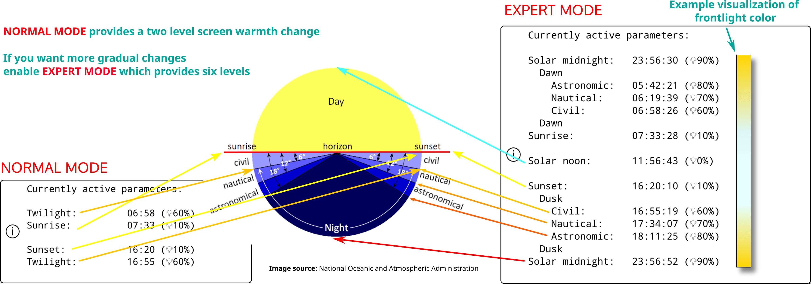- Перейдіть до меню модуля: ВЕРХНЄ МЕНЮ / / Екран / Автотеплота підсвічування і нічний режим
- Натисніть пункт меню «Активувати», а потім натисніть Згідно з сталим розкладом
- Поверніться назад до попереднього меню і торкніться пункту меню Налаштування сталого розкладу
- Налаштуйте свій графік переходу на тепліше освітлення, вказавши тут час для різних елементів. Пояснення до елементів див. на зображенні вище.
- Перейдіть до меню модуля:
ВЕРХНЄ МЕНЮ / / Екран / Автотеплота підсвічування і нічний режим
- Натисніть пункт меню Активувати, а потім натисніть Згідно з положенням Сонця
- Поверніться до попереднього меню і торкніться пункту меню Параметри розташування. Правильно зазначте свої координати (обов'язково) та висоту над рівнем моря (за бажанням) і назвіть своє місце розташування.
- Поверніться до попереднього меню і натисніть пункт меню Налаштування теплоти і нічного режиму
- Налаштуйте свій графік переходу на тепліше освітлення, вказавши тут час для різних елементів. Пояснення до елементів див. на зображенні вище.
Поточний розклад можна подивитися у пункті меню Зараз активні параметри.
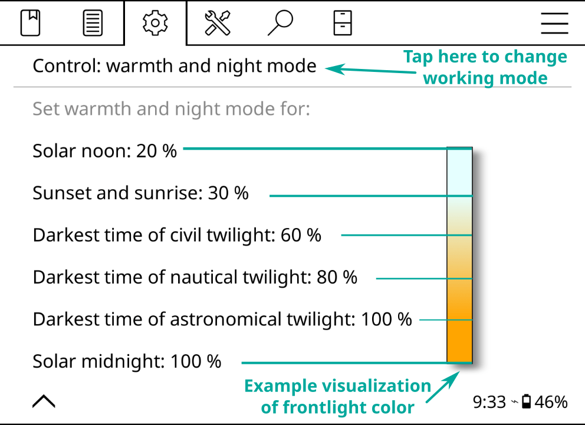Під час налаштування відсотків теплоти підсвічування для різних проміжків часу, для цих же проміжків можна також встановити Нічний режим, який інвертує кольори екрану на початку цього проміжку часу. Якщо мінімальне значення яскравості підсвічування екрану все ще занадто яскраве або якщо вам більше до вподоби темне тло сторінки, тоді можна активувати цю функцію. Щоб її увімкнути, у нижченаведеному діалозі торкніться квадратика Нічний режим, а потім Встановити.
Якщо так зробити, в меню поруч з цим проміжком часу з'явиться значок місяця. Щоб вимкнути нічний режим, просто торкніться квадратика Нічний режим (зніміть галочку).
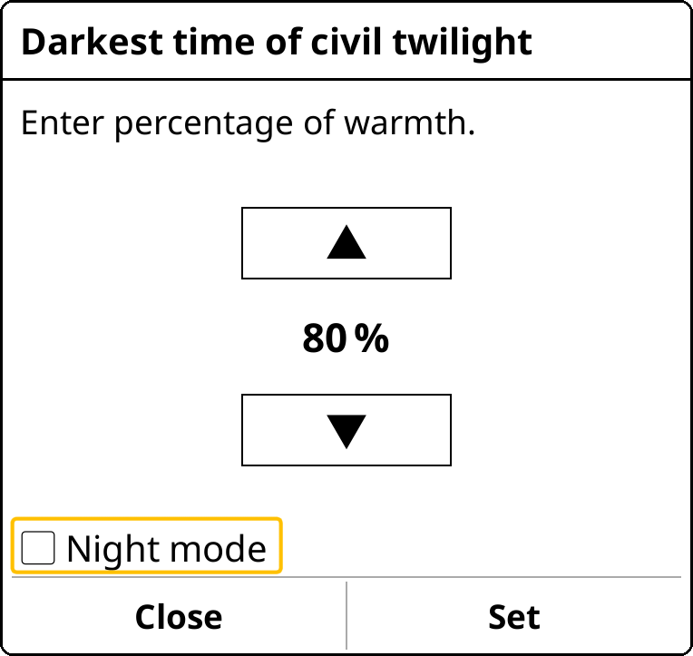Ця функція вмикає підсвічування екрану на світанку і вимикає при заході сонця відповідно до Зараз активних параметрів цього модуля. Ручне увімкнення/вимкнення підсвічування екрану має пріоритет над цим параметром. Під час наступного сходу/заходу сонця автотеплота підсвічування перемкнеться. Її можна активувати натиснувши в модулі пункт меню Підсвічування вимкнено вдень.
Якщо потрібно, щоб температура підсвічування екрану змінювалася не повільно, а швидко:
- Оберіть режим Сталий розклад, як це описано нижче
- Та підлаштуйте параметри подібно до того, як вказано нижче:
При запуску KOReader компілює доступні шрифти з метаданих (інформації) шрифтів та класифікує їх відповідно до сімейства шрифтів та товщини. Це значить, що можна додати шрифт різних товщин та варіантів, а KOReader буде намагатися використати найвідповідніший. Оскільки KOReader отримує інформацію про сімейство шрифтів з метаданих, назви файлів шрифтів при копіюванні на пристрій не важливі. Щойно встановлені шрифти стають доступними після перезапуску KOReader.
KOReader має простий, переважно чорно-білий інтерфейс, оскільки градієнти та різні відтінки сірого можуть спричиняти миготіння та артефакти на екранах з е-чорнилами, що погіршує якість читання.
KOReader має два основні режими (інтерфейси): екран читання та Оглядач файлів. Тут ми розглянемо екран читання. Оглядачу файлів присвячений цей розділ посібника.
ЕКРАН ЧИТАННЯ має два меню:
- ВЕРХНЄ МЕНЮ включає елементи меню, що пов'язані з основним використанням KOReader. З нього можна отримати доступ до книг, налаштувань KOReader, модулів та іншого.
- НИЖНЄ МЕНЮ зосереджене на параметрах для форматування документу на зразок розміру та жирності шрифту, відстаней між рядками та ін. Під час підлаштування вигляду тексту ви переважно взаємодієте з НИЖНІМ МЕНЮ.
Наведене вище зображення показує елементи, які ви можете бачити під час читання книги на своєму пристрої:
- Значки індикаторів. Ці значки інформують про певні поточні процеси і стани. Вони відображаються у верхньому лівому куті екрану під час певних операцій. Зазвичай вони менші, але тут вони збільшені для наглядності. Значення цих значків індикаторів детально пояснюються у наступному розділі: Значки індикаторів
- Панель стану. Це область, яку можна детально налаштовувати та у якій відображається інформація про книгу та KOReader. Натисніть тут, щоб перейти до розділу: Панель стану
- Альтернативна панель стану. На додачу до типової панелі стану, KOReader має альтернативну панель стану, яка, якщо вона увімкнена, відображається вгорі сторінки відкритої книги. Детальніше читайте тут: Панель стану
- Номери сторінок джерела. Якщо видавець книги включив до файлу номери сторінок паперового видання книги, вони будуть відображатися як показано тут. Для отримання докладнішої інформації натисніть тут: Нумерація сторінок і номери сторінок джерела
- Типи виділення. Тут можна побачити різні типи виділення тексту. На пристрої з кольоровим екраном також можна робити виділення тексту кольоровим. Щоб перейти до присвяченого цьому розділу натисніть тут: Закладки, виділення і нотатки
- Позначка нотатки. Позначка нотатки показує коли до виділення тексту додано нотатку. Існують різні типи позначок нотатки. Більше інформації див. тут: Закладки, виділення і нотатки
KOReader має деякі індикатори, якими інформує читача про певні поточні процеси і стани, як показано на зображенні вище. Вони відображаються у верхньому лівому куті екрану протягом певних операцій.
 
|
Значки часткової візуалізації Ця група значків стосується процедури часткової візуалізації та, ймовірно, ви будете бачити ці значки частіше за інші. Ви бачите ці значки коли змінюєте налаштування у нижньому меню. Ця функція дозволяє набагато швидше побачити зміни пристосування вигляду тексту, візуалізуючи лише поточний розділ, а не всю книгу. Також обертання орієнтації екрану завдяки цій функції є набагато швидшим. Ця функція типово УВІМКНЕНА. Якщо необхідно, її можна вимкнути для окремої книги (дотиком) або для усіх книг (затисканням) тут: ВЕРХНЄ МЕНЮ /
/ Документ / Увімкнути часткову візуалізаціюПісля підтвердження змін ціла книга повинна повторно візуалізуватися, тому це багатокрокова процедура. Ці значки показують стадії візуалізації, які роз'яснені нижче: |
Документ частково візуалізований. Лічильник сторінок, інформація в нижньому колонтитулі та багато інших відомостей є неточними. Можна переглянути як виглядає документ з новими налаштуваннями і здійснити подальші зміни. В цьому стані також можна гортати сторінки та переходити за посиланнями. |
|
|
Повна візуалізація відбувається у тлі. Все ще можна гортати сторінки, переходити за посиланнями та змінювати налаштування. |
|
Повна візуалізація завершена, але ще не застосована, бо KOReader очікує вашої бездіяльності, щоб перезавантажити решту книги (бездіяльність = відсутність взаємодії з пристроєм). Все ще можна гортати сторінки, переходити за посиланнями та змінювати налаштування. |
Ви деякий час були бездіяльними, тому KOReader зараз перезавантажує весь документ. На цьому етапі KOReader заблокований для взаємодії з ним. |
 |
Значок виділення Цей значок показує коли програма знаходиться у режимі вибору і виділення. KOReader має додатковий режим виділення, який дозволяє починати виділення та перегортати сторінки, щоб зробити велике виділення тексту, який може знаходитися на кількох сторінках. Про це можна прочитати у розділі «Закладки, виділення і нотатки» цього посібника. Коли ви розпочинаєте виділення у цьому режимі, у куті відображається цей значок, щоб нагадувати вам, що програма все ще знаходиться у режимі виділення. Він зникає коли ви завершуєте робити виділення вибравши закінчення уривка або коли скасовуєте виділення (натискаючи на початок виділеного або цього значка виділення). |
 |
Значок кулі покемона Цей значок показує коли ви довго затискаєте слово (спеціально або випадково). KOReader має звичайне меню, яке відкривається затисканням. Та додаткове меню, яке викликається довгим затисканням (коли палець утримується понад 3 секунди). Цей значок означає, що ви активували саме меню, яке викликається довгим затисканням. |
Значок режиму гортання Цей значок показується при дотику у верхньому лівому куті екрану, якщо:
Цей режим тимчасово показує всю сторінку (без обрізання країв) масштабовану так, щоб вона повністю помістилася на екрані. В цьому режимі можна гортати сторінки. Щоб вийти з даного режиму, натисніть цей значок. |
Типи документів на кшталт EPUB, MOBI, HTML, звичайно ж, не має фіксованих номерів сторінок, бо вони є перекомпоновуваними документами. Це означає, що вигляд цих документів може бути пристосований до розміру й орієнтації екрану пристрою (на відміну від документів PDF та DJVU, які мають фіксовані розміри сторінок).
Якщо ви збільшите розмір шрифту перекомпоновуваного документу, кількість сторінок у ньому також збільшиться, бо на одній сторінці, яка дорівнює розміру екрану, тепер поміститься менше тексту. Часом це призводить до проблеми, бо виділення тексту, яке було зроблене на сторінці 38 після збільшення розміру тексту може опинитися на сторінці 42.
KOReader підтримує функцію номерів сторінок джерела, яка дозволяє видавцям книги вбудовувати номери сторінок друкованої версії книги до електронної версії. Після увімкнення цієї функції KOReader не буде самостійно обчислювати нумерацію сторінок. Замість цього буде показуватися вбудована нумерація сторінок, яка була вбудована у файл видавцем. Це означає, що показаний у панелі стану номер сторінки співпадає з номером сторінки у друкованій версії книги.
Переваги номерів сторінок джерела:
- Увімкнення функції номерів сторінок джерела дозволяє робити точніші цитування книги завдяки співпадінню номерів сторінок у електронному та паперовому варіантах книги.
- Номери сторінок з джерела можуть допомогти в навігації, особливо читачам, які одночасно користуються також паперовою версією книги. Це допомагає легше знаходити окремі уривки або цитати у іншій (паперовій/електронній) версії книги.
- Оскільки електронні книги можна читати на різних пристроях, з різними розмірами шрифтів та параметрами екрану, номери сторінок можуть дуже відрізнятися. Номери сторінок з джерела забезпечують однакову нумерацію сторінок при читанні електронної книги на будь-яких пристроях.
Цю функцію можна увімкнути тут:
 / Сторінки в джерелі / Використ. номери сторінок з джерела
/ Сторінки в джерелі / Використ. номери сторінок з джерелаЯкщо в тому ж меню увімкнути також функцію Показувати номери сторінок джерела на полях, ці номери сторінок будуть показані дрібним шрифтом поруч з текстом.
Майте на увазі, що це меню видиме лише якщо у відкритому файлі є вбудовані номери сторінок джерела.
KOReader має дві панелі стану. Нижня панель стану типово увімкнена. Також є альтернативна панель стану, яка відображається вгорі сторінки, якщо вона увімкнена. Альтернативна панель стану доступна лише для документів, що перекомпоновуються (epub, html, docx, rtf, txt…).
Нижня панель стану є новішою і вона активно підтримується розробниками. Альтернативна панель стану є залишковою, зі старих версій KOReader, тож до неї не додаються нові функції. Але альтернативна панель стану досі доступна для використання тими, для кого вона є зручною. Її можна увімкнути тут:
/ Альтернативна панель стануАльтернативну панель стану можна налаштувати у цьому меню:
/ Панель стану / Альтернативна панель стануІнструкції в решті цього розділу стосуються нижньої панелі стану.
Нижню панель стану можна налаштувати за допомогою цього меню. Дослідіть підменю НАЛАШТУВАННЯ та налаштуйте панель стану на свій смак.
/ Панель стануУ панелі стану можуть відображатися багато елементів. Однак типово в один момент часу показується лише один і для того, щоб переглянути усі їх по черзі, слід торкатися панелі стану. Якщо бажаєте, щоб показувалися усі елементи водночас, увімкніть це тут:
/ Панель стану / Налаштування / Показати усі обранні елементи разомЯкщо увімкнути вищенаведену функцію, панель стану не буде приховуватися дотиком до неї. Щоб приховувати її потрібно буде призначити жест для дії приховування/показу панелі стану тут:
Впорядкування елементів панелі стану:
/ Панель стану / Налаштувати елементи / Розташувати елементи на панелі стануІснує спеціальний елемент панелі стану, який називається «власний текст». Цей елемент може показувати у панелі стану вказаний вами текст. Цю функцію також можна використати, щоб створити розділювач між елементами панелі стану, як це показано нижче:
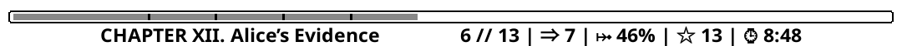- Спершу увімкніть цю функцію коротким дотиком до пункту меню
ВЕРХНЄ МЕНЮ / / Панель стану / Власний текст: «KOReader»
- Після цього затисніть його знову, щоб відкрити налаштування. У першому полі впишіть символ пробілу, а в другому полі вкажіть кількість повторень, яка визначить ширину розділювача.
В якості розділювача можна вказати також інший символ. Цей елемент можна переміщувати так само, як і інші елементи панелі стану, щоб змінити їхній порядок.
Смуга поступу у панелі стану зазвичай показує ваш поступ читання всієї книги. Проте, замість цього вона може показувати поступ читання поточного розділу. Це може бути корисним, наприклад, коли книга має багато малих розділів. В такому випадку може бути важко бачити поступ читання поточного розділу, тож в такому випадку смуга поступу читання розділу може бути більш інформативною. Дану функцію можна увімкнути з цього меню:
/ Панель стану / Смуга поступу / Натомість показати смугу поступу читання розділуТакож можна призначити жест, який буде перемикати звичайну смугу поступу та смугу поступу читання розділу. Це можна знайти тут:
Тут буде наведено лише огляд елементів у структурі верхнього меню, щоб надати загальне уявлення про меню. Детальніші відомості доступні у відповідних розділах цього посібника.
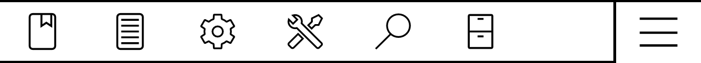- НАВІГАЦІЯ: Це меню містить елементи, які дозволяють переміщуватися книгою, яку ви зараз читаєте. Зміст, закладки, мапа книги...
- ВЕРСТКА: Це меню містить елементи, які дозволяють змінювати вигляд книги. Параметри шрифту, підлаштування стилів...
- НАЛАШТУВАННЯ: Це меню містить налаштування KOReader та вашого пристрою. Налаштування е-чорнил, підсвічування, жестів...
- ІНСТРУМЕНТИ: Це меню містить модулі, які можуть розширити функціональність KOReader.
- ПОШУК: Це меню містить елементи, які пов'язані з пошуком і оглядом. Пошук тексту, словник, переклад, Вікіпедія...
- ОГЛЯДАЧ ФАЙЛІВ: Ця кнопка відкриває Оглядач файлів, який є інтерфейсом для управління вашою бібліотекою.
 ОСНОВНЕ: Це меню містить такі інструменти для доступу до книг, як історію, обране, добірки. У цьому меню є також елементи відомостей про книгу, оновлення та вихід.
ОСНОВНЕ: Це меню містить такі інструменти для доступу до книг, як історію, обране, добірки. У цьому меню є також елементи відомостей про книгу, оновлення та вихід.
Режим перегляду: Якщо ви перейдете в режим безперервного перегляду, тоді зможете переглядати документ як вебсторінку. Цей режим більше пасує для екранів без е-чорнил (LCD, OLED). В безперервному режимі ви втрачаєте верхнє і нижнє поля, тому текст у першому і останньому рядку екрана може бути обрізаним. Щоб усунути цю проблему, можна увімкнути Накладення сторінки:
Режим візуалізації: Цей параметр визначає як KOReader буде візуалізувати документ. Типово використовується ВЕБ і зазвичай немає необхідності змінювати цей параметр. Коли книга (або збережена вебсторінка) дуже складна (визначені ширина або поля, негативні поля, плаваючі поля тощо) і верстка виглядає погано або виходить за межі екрану, можна спробувати інші режими візуалізації.
Масштаб (dpi): Цей параметр можна вважати головним фактором масштабування документу (крім розміру шрифту). При 96 dpi (що є типовим значенням) зображення в документі візуалізуються з їх оригінальними вимірами. Переважно цей параметр використовують для того, щоб збільшити зображення не збільшуючи текст.
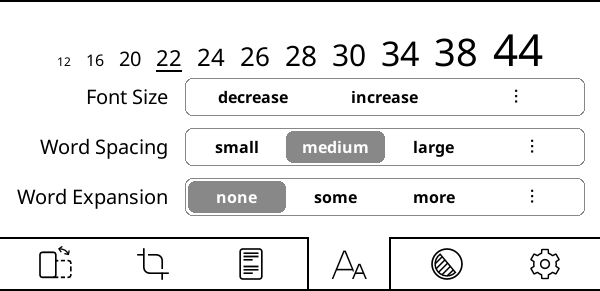
Проміжки між словами і розтягування слів: Ці два параметри Ці два налаштування пов'язані між собою і визначають, як виглядатиме ваш текст після верстання. Під час вирівнювання тексту між словами додаються пробіли, щоб обидва краї кожного рядка були вирівняні з полями обох країв екрану. Оскільки кількість слів у рядках не завжди однакова, текст доводиться стискати або розтягувати, щоб рівномірно заповнити рядок.
Проміжки між словами: Наскільки символи пробілу між словами можуть бути стисненими, щоб в рядок помістилося більше слів. Цей параметр не стосується слів, а тільки простору між ними.
Розтягування слів: Якщо в рядку завеликі проміжки між словами, тут визначається скільки з них можна розподілити між словами, розтягнувши їх. Цей параметр впливає на відображення слів. Якщо ви не бажаєте, щоб слова розтягувалися, встановіть тут немає.
Можна експериментувати з різними параметри доки текст не виглядатиме так, як вам подобається, після чого встановіть ці налаштування як типові.
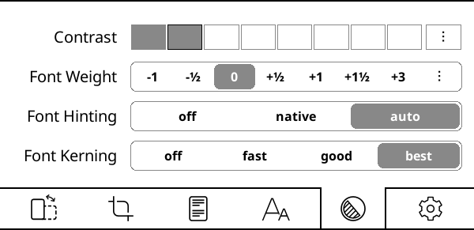
Контраст та Товщина шрифту – це дві функції, які можна використовувати, щоб зробити шрифт товщим (або тоншим). Того ж вигляду можна досягти за допомогою будь-якої з цих функцій, але вони використовують різні методи для досягнення цього. Звісно ж, їх обох можна використовувати водночас.
Різницю між ними можна підсумувати так:
+ Товщина шрифту не змінюється, розмір книги залишається таким же
+ Непотрібно повторно візуалізувати документ, швидше
- Може погано виглядати на LCD-екранах та при низькій роздільній здатності екрану
+ Буде вживати відповідні жирні шрифти, якщо вони є на пристрої
+ Краще виглядає на LCD-кранах та при низькій роздільній здатності екрану
- Доводиться перемальовувати шрифти, повільніше
Хінтинг шрифту підлаштовує текст для максимальної читабельності відповідно до піксельної сітки екрану пристрою. вбудований використовує вбудовані в шрифти інструкції хінтингу; авто використовує алгоритм хінтингу FreeType. авто є надійнішим вибором, бо наявні на пристрої шрифти можуть мати проблемні інструкції хінтингу. До того ж, авто краще обробляє текст CJK. Можна спробувати різні варіанти, щоб переконатися який з них краще виглядає на конкретному пристрої.
Кернінг шрифту пристосовує проміжки між літерами слів, щоб покращити читабельність тексту. Типовим є значення найкращий, який може бути повільнішим під час відкриття файлів (залежно від пристрою), але має кращу підтримку лігатур (див. зображення зі зразком нижче), включаючи арабські символи та деякі інші скрипти. Якщо пристрій повільний, можна спробувати хороший, який є швидшим і все ще може виглядати коректно з написаними західною латиницею текстами.
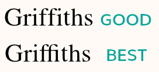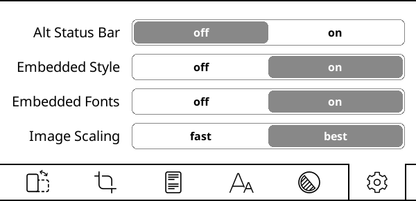
Альтернативна панель стану вмикає відображення альтернативної панелі стану, яка доступна лише для документів, які перекомпоновуються (EPUB, HTML, DOCX, RTF, TXT…). Після увімкнення тут, альтернативну панель стану можна налаштувати у:
/ Панель стану / Альтернативна панель стануВбудований стиль та вбудовані шрифти визначають чи будуть використовуватися (або ігноруватися) для візуалізації документу вбудовані видавцем у документ стилі та шрифти. Це загальні перемикачі увімкнення/вимкнення. Тонші підлаштування для документа можна здійснити за допомогою:
Масштабування зображення визначає як будуть візуалізуватися зображення у документі. Найкраще виглядає приємніше, але воно повільніше працює.
Інтерфейс користувача KOReader та функції можуть змінюватися залежно від відкритого типу файлу. Існує дві основні категорії документів:
- Документи з фіксованим компонуванням (файли PDF, DJVU, зображення...)
- Документи, які перекомпоновуються (EPUB, HTML, DOCX, RTF, TXT…).
KOReader містить багато функцій, тож його система меню відображає цю комплексність. Програма має функцію Пошуку в меню, що допомагає швидко знаходити потрібні пункти меню. Якщо ви пам'ятаєте назву пункта меню, але не пам'ятаєте де він знаходиться, можна скористатися цією функцією:
/ Довідка / Пошук в менюДля швидкого доступу цю функцію також можна призначити на жест чи додати його до вашого Швидкого меню.
У нижньому меню, якщо затиснути назву функції, можна побачити пояснення щодо неї. |
|
Мову інтерфейсу можна змінити тут: ВЕРХНЄ МЕНЮ /
/ Мова |
|
Розмір інтерфейсу користувача можна змінити за допомогою параметра DPI екрану, який знаходиться тут: ВЕРХНЄ МЕНЮ /
/ Екран / DPI екрануМожна обрати значення в меню або Власне dpi, щоб вказати значення для точного налаштування: вище DPI = більший інтерфейс. Майте на увазі, що у нижній панелі також є функція Масштаб (dpi). Вона стосується лише документів. Пояснення є у наступному розділі. |
Якщо затиснути кнопку або пункт меню (товщина шрифту, проміжки між рядками тощо), можна скинути його значення на ТИПОВЕ. Нові значення параметрів будуть застосовані лише до книг, які будуть відкриті починаючи з цього моменту. Книги, які відкривалися раніше, будуть використовувати попередні параметри. Типові значення в пунктах меню позначені зірочкою (★), а в інших елементах інтерфейсу виділені товстою рамкою, як показано нижче: 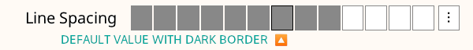 |
Повноекранні діалоги (Історія, Зміст, Статистика читання тощо) можна закрити протягуванням вниз. (Крім вікна Закладки, яке можна закрити будь-яким мультижестом) |
Зробити знімок екрану можна довгим протягуванням пальцем по діагоналі екрану. Знімок екрану також можна зробити дотиком пальцями у протилежних кутах по діагоналі. Другий жест можна використовувати, наприклад, під час перегляду зображення. Також, якщо пристрій має клавіатуру, знімок екрану можна зробити комбінацією клавіш Alt + Shift + G. |
Якщо бажаєте відкрити випадкову сторінку книги, наявна дія Перейти до випадкової сторінки, виконання якої можна призначити за будь-яким жестом. Вона знаходиться в категорії Читання меню Менеджер жестів. |
| 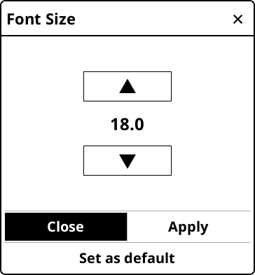
У вікнах, які містять стрілки для зміни значень, подібні до зображеної вище, можна затиснути пальцем стрілку, щоб змінити значення набагато швидше. Ви можете закрити діалог цього типу (не на повний екран) дотиком за межами його вікна. Можна перемістити діалог цього типу перетягнувши заголовок вікна. Цей тип діалогу можна зробити напівпрозорим затиснувши заголовок вікна (якщо бажаєте бачити текст під ним під час налаштування значення). |
Створення нових тек. У ситуації коли необхідно обрати розташування (хмарне сховище, модуль переміщення до архіву, модуль експорту), KOReader показує екран, який виглядає як Оглядач файлів. Якщо бажаєте створити нову теку, зробіть наступне:
|
KOReader підтримує пошук у словнику в EPUB і сканованих документах PDF/DJVU. Щоб побачити словникове визначення або переклад, просто затисніть потрібне слово. Затискання слова відкриє вікно, за допомогою якого можна знайти в документі інші місця, в яких зустрічається це слово, або знайти це слово у Вікіпедії. |
Щоб побачити поточну дату, торкніться годинника у ВЕРХНЬОМУ МЕНЮ. |
KOReader має три типи прокручування жестами. Ви можете отримати доступ до них з:
/ Дотики та жести / Прокручування- Класичне прокручування: Цей режим працює так само, як прокручування на телефоні/планшеті.
- Швидке прокручування: Цей режим дозволяє прокручувати швидше, ніж класичне прокручування. Також можна прокрутити декілька сторінок не відриваючи пальця. Величина прокручування пропорційна до відстані, на яку переміщується палець після початку прокручування.
- Прокручування при відпусканні: Цей тип прокручування найкраще підходить для екранів е-чорнилами, бо, на відміну від інших режимів прокручування, цей режим не оновлює сторінку постійно під час прокручування. Він працює як класичне прокручування, але проміжні етапи не показуються, тому ви спершу ви прокручуєте пальцем, а щойно його заберете, сторінка на екрані перескочить до цього розташування. Це особливо корисно для переміщення і налаштування вигляду, якщо книга містить зображення або таблиці та ви бажаєте бачити їх повністю.
Ця корисна функція працює аналогічно кнопці «Назад» у вебоглядачі. Коли ви перескакуєте до якоїсь іншої частини книги використовуючи віджет проглядання, список закладок, мапу книги тощо. KOReader запам'ятовує попереднє розташування. Це дуже корисно коли ви, наприклад, перейшли за внутрішнім чи зовнішнім посиланням. Одним дотиком ви можете повернутися туди, звідки прийшли. Доступ до цієї функції можна отримати з:
/ Повернутись до попереднього місцяЗ того ж меню також можна перейти вперед. Ця функція призначена для мультижесту . За бажанням, цю дію можна призначити на інший жест (наприклад, на дотик в куті) або додати до Швидкого меню.
KOReader зазвичай виконує повне оновлення сторінок, які містять зображення (це спостерігається у вигляді чорного спалаху). Це зроблено для того, щоб позбутися від залишків (артефактів, «сміття») від попередньої сторінки. Але, залежно від вашого пристрою та налаштувань, це може не знадобитися. Таке автоматичне оновлення можна вимкнути тут:
/ Екран / Налаштування е-чорнила / Частота повного оновлення / Завжди блимати на сторінках з зображеннямиТакож, якщо це вам докучає, тут можна вимкнути блимання інтерфейсу користувача:
/ Екран / Налаштування е-чорнилУ KOReader є кілька різних способів переміщення всередині книги, кожний з яких має свої переваги, а саме:
- Віджет проглядання
- Мапа книги
- Оглядач сторінок
Віджет проглядання – це дуже функціональний інструмент навігації. За допомогою нього можна робити таке:
- Перейти до будь-якої частини дотиком до смуги поступу або вказання номера сторінки
- Навігація між розділами
- Навігація між закладками
Як відкрити Віджет проглядання:
- Затисканням в області Панелі стану внизу екрану
- З цього меню: ВЕРХНЄ МЕНЮ / / Проглянути документ
- Призначити на нього жест
- Його можна додати до Швидкого меню
Спершу погляньте на нижченаведену схему. Ви побачити, що є два різних віджети проглядання. Вони виконують однакові функції, але відрізняються розміром:
- ПОВНОРОЗМІРНИЙ ВІДЖЕТ ПРОГЛЯДАННЯ: Це типовий віджет проглядання, який ви побачите після встановлення KOReader. Він більший за компактний віджет проглядання, тож має зручніші для натискання кнопки. Цей віджет відображається у центрі екрану.
- КОМПАКТНИЙ ВІДЖЕТ ПРОГЛЯДАННЯ: Це зменшена версія типового віджету проглядання. Він може бути зручнішим, наприклад, при роботі з виділенням тексту. Оскільки цей віджет менший і відображається вгорі або внизу екрану, він не закриває сторінку так сильно, як типовий віджет.
Якщо бажаєте користуватися компактним віджетом проглядання, його можна увімкнути обравши Верх або Низ в цьому меню:
/ Навігація / Позиція вікна швидкого проглядання:ПОРАДА Обидва віджети проглядання можна переміщувати. Їх можна перемістити, якщо натиснути на порожню область віджету та перетягнувши. Також ці вікна можна зробити напівпрозорими затисканням порожньої області віджета. Але прозорість вмикається тільки у його початковій позиції. Після переміщення вікна затискання поверне його на початкову позицію.
Тепер повернемося до схеми. Ви можете побачити, що для деяких кнопок подано два описи різними кольорами: синім та жовтогарячим. Це означає, що дані кнопки мають дві функції: дію при звичайному дотику та дію при затисканні. Якщо ви просто торкнетеся, то виконається СИНЯ функцію. Якщо ж ви затиснете, то виконається ЖОВТОГАРЯЧА функція.
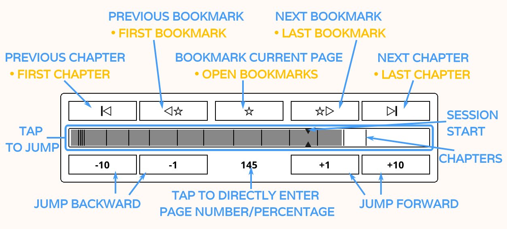Пояснення нумерованих елементів (дія при затисканні написана жирним шрифтом):
- Перейти на початок попереднього розділу / Перейти до першої сторінки книги
- Перейти до попередньої закладки / Перейти до першої закладки у книзі
- Зробити закладку а поточній сторінці / Відкрити діалог закладок
- Перейти до наступної закладки / Перейти до останньої закладки у книзі
- Перейти до початку наступного розділу / Перейти до останньої сторінки книги
- Перейти назад (-) або вперед (+) на стільки сторінок
- Це номер поточної сторінки. Дотик до нього відкриє діалог, який дозволяє вказати номер сторінки або відсотки, щоб перейти прямо до них. Якщо затиснути, ви перейдете назад до місця, де відкрили віджет проглядання. Це корисно, наприклад, якщо ви бажаєте швидко перевірити деякі інші частини книги і повернутися до місця, на якому зупинили читання.
- Це – смуга поступу. Тонкі вертикальні лінії – мітки розділів, які показують де починаються розділи. Торкнувшись цієї смуги поступу можна перейти до відповідного місця в книзі. Маленькі стрілки є стрілками початку сеансу читання, що показують місце з якого ви почали читати цю книгу в поточному сеансі читання. Ці стрілки скидаються при перемиканні між книгами.
- Ця кнопка у компактному віджеті проглядання працює так само, як функція затискання з пункту № 7. Ви перейдете до сторінки, на якій відкрили віджет проглядання. Це корисно, наприклад, якщо бажаєте швидко перевірити деякі інші частини книги і повернутися до читання з того місця, де зупинилися.
ПОРАДА Якщо бажаєте відкрити випадкову сторінку книги, для цього є дія Перейти до випадкової сторінки, виконання якої можна призначити на будь-який жест. Це у категорії Читання меню Менеджер жестів.
KOReader може відображати межі розділів у ВІДЖЕТІ ПРОГЛЯДАННЯ та СМУЗІ ПОСТУПУ.
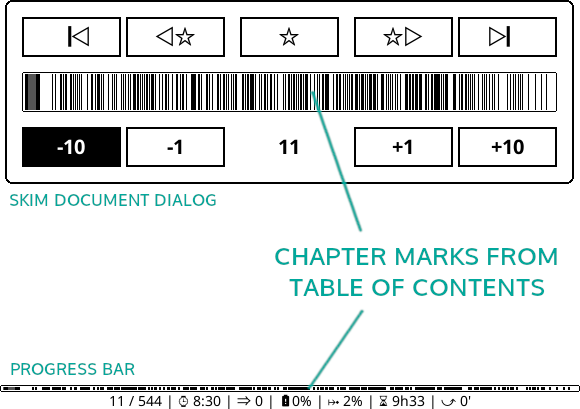
Якщо у документі дуже багато рівнів заголовків, тоді позначок розділів може бути занадто багато, як показано на зразку вище. Глибину видимих позначок розділів змісту можна змінити тут:
/ Налаштування / Панель стануЦей скорочений зміст можна використовувати для:
- заголовків розділів (якщо вони відображаються у Панелі стану)
- переходів між розділами
- оцінки часу до завершення читання книги
Даний параметр знаходиться в тому ж меню.
Якщо в документі відсутній зміст, можна увімкнути АЛЬТЕРНАТИВНИЙ ЗМІСТ. Коли цей параметр увімкнено, KOReader створить зміст з заголовків (якщо вони наявні) або з окремих файлів HTML всередині EPUB. Затисніть цей елемент, щоб побачити додаткову інформацію:
/ Налаштування / Альтернативний змістБільше інформації про доступні в KOReader інструменти змісту можна прочитати у відповідному розділі посібника: ІНСТРУМЕНТИ ЗМІСТУ
Мапа книги потужна і унікальна функція KOReader, яка може бути дуже корисною для ознайомлення з книгою. Наприклад, якщо ви читаєте книгу не підряд, а вибірково, пропускаючи певні частини, буде важко відстежувати поступ вашого читання. Мапа книги може одразу показати які частини книги вже прочитані.
Додатково ви можете:
- Бачити скільки часу витратили на читання кожної сторінки (якщо увімкнений модуль Статистика читання)
- Перевірити на яких сторінках є закладки, виділення і нотатки
- Перейти безпосередньо до будь-якої частини книги, як у ВІДЖЕТІ ПРОГЛЯДАННЯ
Мапу книги можна відкрити з меню, а також призначити жест для ще швидшого її відкриття:
/ Мапа книгиПри першому відкритті Мапи книги під час читання книги, вона відкриється у вигляді решітки, вміщаючи усі розділи на одному екрані, щоб забезпечити найкращий початковий загальний огляд вмісту книги. Щоб отримати детальну інформацію про використання, торкніться значка інформації у верхньому лівому куті. Мапу книги можна закрити дотиком до X у верхньому правому куті або будь-яким мультижестом (ВГОРУ-ВНИЗ, ВЛІВО-ВПРАВО тощо).
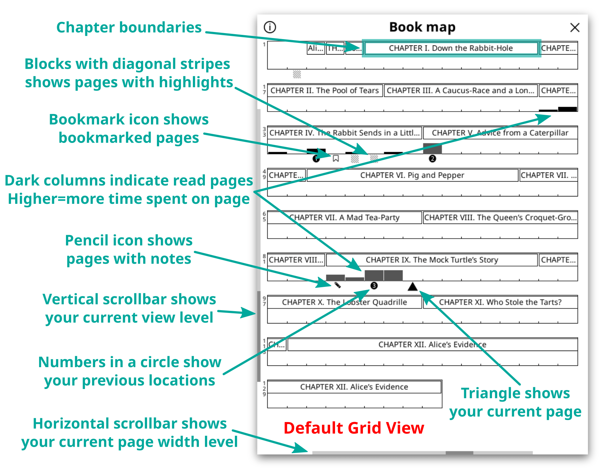- Межі розділів
- Чорні прямокутники показують прочитані сторінки. Вищі прямокутники означають, що на читання сторінки витрачено більше часу.
- Значки закладок, як випливає з назви, показують сторінки з закладками.
- Значок смугастого квадрата показує сторінки з виділеннями тексту.
- Знаком олівця показує сторінки з нотатками.
- Цифри в кружечках показують ваші попередні позиції. Коли ви оберете в меню Повернутися до попереднього місця, ви будете переходити у ці місця по порядку.
- Ваша поточна сторінка позначена трикутником.
- Вертикальна смуга прокручування показує вас поточний рівень перегляду.
- Горизонтальна смуга прокручування показує ваш поточний рівень ширини сторінки.
Підлаштувати вигляд Мапи книги можна змінюючи такі параметри:
– Спершу спробуйте протягнути ВЛІВО та ВПРАВО вздовж низу екрану, щоб змінити ширину стовпців, які відображають сторінки, та простежте як це змінює масштаб мапи.
– Потім спробуйте протягнути ВГОРУ та ВНИЗ вздовж лівого боку екрану, щоб змінити глибину заголовків розділів та перемкнутися на плаский вигляд. Див. приклади нижче.
На додачу до типового вигляду решіткою, як показано вище, тут можна побачити плаский вигляд (ліворуч) та вигляд решіткою без заголовків розділів (праворуч). Зверніть увагу на зміну вертикальної лівої смуга прокрутки при зміні вигляду мапи книги. Якщо бажаєте повернутися до типового вигляду, можна затиснути піктограму інформації у верхньому лівому куті.
При дотику до значка меню на екрані Мапи книги з'являється меню, яке показане вище. Пояснення до пунктів меню подано нижче:
- Про мапу книги: коротка довідка про використання мапи книги і пояснення значків.
- Доступні жести: жести, які можна використовувати, щоб змінити параметри мапи книги замість того, щоб використовувати це меню.
- Оглядач сторінок за дотиком: якщо цей пункт відмічено, після дотику до сторінки в мапі книги відкривається Оглядач сторінок. В ньому відображається огляд вибраної вами області. Якщо цей параметр вимкнений, дотик у мапі книги відкриває безпосередньо ту сторінку. Але пам'ятайте, що в залежності від різних факторів (розмір екрану пристрою, чутливість сенсорного екрану, точності дотику тощо), ви можете опинитися на сусідніх сторінках.
- Змінити вигляд: поточний/початковий: якщо ви налаштували вигляд мапи книги, дотик до цього пункту перемикає між типовим виглядом та налаштованим вами виглядом.
- Змінити вигляд: решітка/плаский: перемикає між переглядом окремих розділів або безперервними розділами.
- Рівні заголовків: змінює глибину рівнів розділів/підрозділів.
- Ширина слота сторінки: зробити кожен слот сторінки ширшим або вужчим.
- 10-сторінкові позначки: при збільшенні цього значення, спочатку буде додано позначки на кожній 10-й сторінці, потім збільшить їх та доведе це значення до позначки на кожній 5-й сторінці.
Оглядач сторінок зручний для навігації між сторінками наче у фотоальбомі, де у вигляді решітки подані мініатюри сторінок. Оглядач сторінок можна відкрити дотиком до Мапи книги або з меню. Для зручного доступу також можна призначити для нього жест.
/ Оглядач сторінокВикористання Оглядача файлів роз'яснено нижче. Щоб побачити пояснення можна також торкнутися кнопки-«гамбургера» у верхньому лівому куті цього екрану. Затиснення тієї ж кнопки додає/вилучає назви розділів з нижньої смужки.
- Протягніть пальцем вправо/вліво у цій верхній області, щоб збільшити/зменшити кількість стовпців.
- Протягніть пальцем вгору/вниз у цій області ліворуч, щоб збільшити/зменшити кількість рядків.
- Протягніть пальцем в області сторінок, щоб перемістити сторінки, які переглядаються. Вгору/вниз – щоб прогорнути один рядок (у прикладі – 2 сторінки), вліво/вправо – щоб прокрутити один екран (у прикладі – 4 сторінки).
- Торкніться будь-якої сторінки, щоб відкрити її у режимі читання.
- Дотик до сторінки у нижній області фокусує перегляд мініатюр на цій сторінці. Протягування вліво/вправо перейде на одну смугу по ширині.
- У нижній області використовуються ті ж значки, що й у Мапі книги і вони описані у відповідному розділі посібника.
Мапа книги і оглядач сторінок мають Альтернативну тему з іншою схемою затінення, яку можна активувати з їх «гамбургерних» меню. Ця тема використовує альтернативні кольори для заголовків розділів, тож межі розділів у Мапі книги та Оглядачі сторінок краще видимі. Але використання в цій темі сірого кольору вимагає блимання екрану чорним кольором, що може бути некомфортним для деяких користувачів. Ви маєте можливість спробувати обидва варіанти й обрати той, який більше подобається.
Деякі цифрові книги, з якими ви стикаєтеся, можуть не мати відповідного змісту. Залежно від якості підготовки файлу книги, трапляються такі проблеми зі змістом:
- Книга не містить змісту, тому ви не зможете переходити між розділами та бачити час, що залишився до завершення читання розділу
- Зміст є, але він не дуже корисний, бо в ньому відсутні або неправильні назви розділів
KOReader має деякі функції, які можна застосувати для книг з проблемним змістом.
Майте на увазі, що Альтернативний зміст недоступний у документах з фіксованим макетом як от PDF, DJVU та подібних, оскільки для автоматичного створення змісту він вимагає наявності HTML-теґів. Функції Власний зміст та Власні приховані частини доступні для усіх типів файлів.
Першою функцією є Альтернативний зміст, що можна знайти у:
/ Налаштування / Альтернативний змістАльтернативний зміст намагається створити зміст із заголовків файлу (теґів від H1 до H6 у HTML-файлах всередині EPUB). Якщо HTML-файли не містять заголовків, функція спробує створити зміст з фрагментів документа (окремих HTML-файлів всередині EPUB), де початком розділу буде вважатися початок кожного HTML-файлу.
В цьому меню можна обрати які рівні заголовків включати (або нехтувати) до змісту:
Функція створення власного змісту дозволяє власноруч створити зміст з обраних частин книги. Цей зміст містить лише один рівень розділів, тому додати підрозділи не можна. Щоб створити власний зміст, спершу увімкніть:
/ Налаштування / Власний змістПісля увімкнення цієї функції, в інтерфейсі з'явиться два нові пункти меню, які дозволять обрати розділи. Заголовки для змісту можна обрати з двох місць:
- З виділення: під час читання книги виберіть текст затисканням слова. У зринаючому меню буде пункт Почати розділ змісту. Після дотику до нього, з'явиться вікно в якому можна визначити назву розділу. Вибраний текст вже буде вписаний у текстове поле. Якщо потрібно, змініть заголовок і натисніть «Створити».
- З оглядача сторінок: Відкрийте оглядач сторінок через меню
/ Оглядач сторінокЗатисніть мініатюру сторінки, з якої починається новий розділ, після чого у контекстному меню натисніть пункт Почати розділ змісту. З'явиться вікно, в якому можна вказати заголовок розділу.
Якщо не бажаєте бачити додаткові кнопки після завершення створення змісту, їх можна приховати вимкнувши тут:
/ Налаштування / Функції власного макета / Режим редагуванняСтворення такого змісту не змінить оригінальний зміст, закладений у книзі. Очистити Власний зміст можна з цього ж меню (наприклад, якщо бажаєте створити новий). Якщо необхідно повернути оригінальний зміст, цю функцію можна вимкнути точно так само, як ви її вмикали. Майте на увазі, що якщо вимкнути цю функцію після створення власного змісту, раніше створений власний зміст не буде видалено. Тобто, в подальшому буде можливість перемикатися між оригінальним та власним змістом.
Деякі книги та документи можуть містити довгі виноски або розділи з бібліографіями. Наприклад, у науковій книзі на 250 сторінок останні 50 сторінок можуть складатися з додатків, змісту та списку використаних джерел. Зазвичай ці сторінки включаються до панелі поступу, а час читання обчислюється з урахуванням того, що вони є частиною книги. Однак, загалом ці частини присутні в книзі як наукові посилання і їх не читають повністю, тому їх можна вилучити, щоб обчислення непрочитаної кількості сторінок та часу до завершення читання книги були точнішими. Або, наприклад, йдеться про збірник в якому є оповідання, які ви вже раніше читали. Функція Власні приховані частини у KOReader дозволяє приховати такі частини з вашої книги.
Погляньте на зображення, щоб мати уявлення про процес. Усі етапи будуть розтлумачені після зображення:
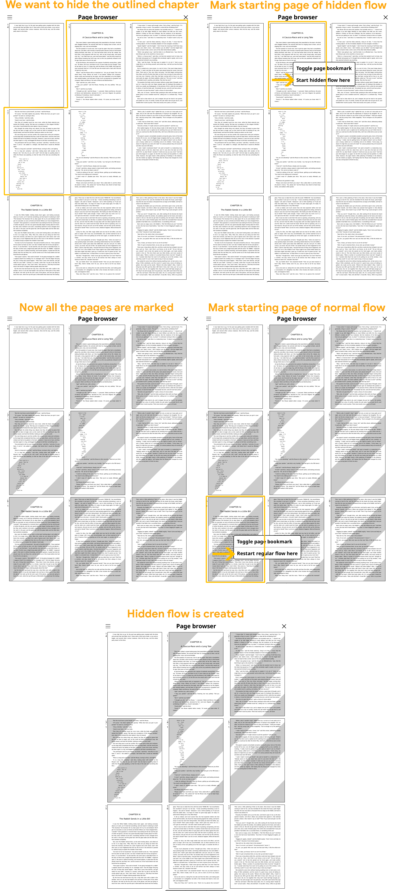Як приховати частину книги створивши приховану частину:
- Перейдіть до початку частини, яку бажаєте приховати
- Відкрийте Оглядач сторінок тут:
ВЕРХНЄ МЕНЮ / / Оглядач сторінок
- Затисніть мініатюру сторінки, яка повинна бути початком прихованої частини, і оберіть у контекстному меню пункт Почати приховану частину звідси.
- Ви побачите, що сторінки під початку виділення (від першої сторінки прихованої частини) тепер мають заштриховане сірим тло.
- Тепер перейдіть до останньої сторінки частини, яку потрібно приховати. Перейти до неї можна за допомогою Оглядача сторінок чи іншими способами, наприклад, через мапу книги, віджет проглядання тощо.
- Коли ви опинитеся на останній сторінці частини, яку потрібно приховати, знову відкрийте Оглядач сторінок (якщо на той момент ви не знаходитеся в ньому).
- Знайдіть останню сторінку прихованої частини і затисніть наступну сторінку. Потім у контекстному меню оберіть Продовжити звичайну частину звідси. Ви побачите, що тло цієї та наступних сторінок набуде звичайного кольору, вказуючи на завершення прихованої частини і початок звичайної частини.
Робота з прихованими частинами:
При створенні прихованої частини, як це описано вище, KOReader буде реагувати на приховану частину книги подібно до того, як з паперової книги було б вирвано частину сторінок:
- Прихована частина буде пропускатися при гортанні сторінок. Наприклад, уявіть, що ви створили приховану частину для розділу 10, тоді після перегортання останньої сторінки розділу 9 одразу відкриється перша сторінка розділу 11.
- Нумерація сторінок розставляється так, начебто прихованої частини не існує.
- Приховані частини не будуть відображатися у Панелі поступу (але прочитайте пояснення нижче) та не будуть враховуватися при обчисленні часу до завершення читання. Але вони будуть видимими у Віджеті проглядання.
- Надалі буде відбуватися перехід за посиланнями на сторінки, які знаходяться в прихованій частині. Також до цієї частини книги можна буде перейти зі Змісту, Мапи книги, Оглядача сторінок та Віджета проглядання.
Як було сказано вище, приховані частини не будуть враховуватися у Панелі поступу. Але якщо ви перейдете до якоїсь з прихованих частин книги будь-яким з вказаних вище способів, тоді панель поступу читання тимчасово перетвориться на панель поступу читання для цієї прихованої частини книги (тобто панель поступу буде відображати позицію читання у прихованій частині). Як тільки ви вийдете з прихованої частини книги, перегорнувши сторінку або іншим способом, панель поступу знову буде відображати відомості для всієї книги (без даних про приховані частини).
Вилучення та очищення прихованих розділів:
Окремі фрагменти прихованої частини можна вилучити за допомогою Оглядача сторінок таким же чином, як ви їх створили. Також їх можна очистити усі разом за допомогою цього меню:
/ Налаштування / Функції власного макета / Очистити усі позначені сторінкиПід час роботи над створенням прихованих частин шляхом позначення сторінок за допомогою функції Почати приховану частину звідси чи Продовжити звичайну частину звідси деякі з раніше здійснених позначень можуть не діяти. Наприклад, у випадку якщо ви натискаєте Почати приховану частину звідси, а через кілька сторінок знову натискаєте Почати приховану частину звідси, попередній початок прихованої частини не враховується. Ці дублюючі (застарілі) позначення початку прихованої частини запам'ятовуються з практичною метою. Знову ж таки, як і в попередньому прикладі, якщо ви завершите почату другою приховану частину до того, як завершите раніше розпочату але не задіяну (не завершену) приховану частину, цей не задіяний початок прихованої частини (початий першим) стане знову активною. Усі подібні мітки розпочатих, але не завершених, прихованих частин можна вилучити, якщо вони заважають вашим власним прихованим частинам або після завершення створення прихованих частин, якщо результат вас повністю влаштовує:
/ Налаштування / Функції власного макета / Очистити неактивні позначені сторінкиУ деяких програмах читання при зміні в налаштуваннях шрифту, який використовується для відображення книги, він змінюється глобально. Це означає, що якщо ви змінили типовий шрифт на Verdana, після цього текст будь-якої відкритої книги буде відображатися шрифтом Verdana.
KOReader має інший підхід до цього моменту. Програма зберігає параметри відображення окремо для кожної книги. Це забезпечує гнучкість у зміні налаштувань для поточної книги, що не впливає на інші книги. Наприклад, якщо ви читаєте книгу фентезі, шрифт для неї можна змінити на подібний до середньовічного і він буде використовуватися лише для цієї книги. Або ж можна налаштувати, щоб деякі книги відкривалися у альбомній орієнтації або в режимі двох стовпців.
Щоб змінити налаштування глобально, затисніть параметр або елемент меню (жирність шрифту, міжрядкові проміжки тощо) – це зробить дане значення типовим. Це нове значення буде застосоване лише до книг, які вперше будуть відкриватися після цього моменту. Книги, які ви веже раніше відкривали, збережуть свої налаштування. В меню типові значення позначені зірочкою (★) або ж вони мають чорну рамку навколо індикатора, як показано нижче:
Тож коли ви пристосовуєте типові параметри відображення документа, на зразок типових міжрядкових проміжків чи типового контрасту, це нове значення буде використовуватися лише для документів, які ви вперше відкриєте після цих змін. Вигляд книг, які вже були відкриті раніше, не зміниться.
Та що коли ви хочете змінити і їх вигляді? Наприклад, вам захотілося змінити типовий шрифт, ймовірно вам захочеться пристосувати також товщину шрифту та міжрядкові проміжки та встановити значення, які більше підходять до нового типового шрифту. Ви задоволені виглядом тексту й тепер бажаєте, щоб усі книги виглядали так само. З цією функцією вам не потрібно власноруч змінювати ці значення у всіх раніше відкритих книгах.
Ви можете легко застосувати ці зміни до раніше відкритих книг обравши:
Коли ви натиснете цей пункт меню, то параметри поточної книги будуть змінені на останні типові параметри. Не хвилюйтеся, це змінить тільки вигляд книги. Позиція читання, виділення тексту, нотатки та закладки збережуться.
Після того як ви пристосуєте налаштування вигляду книги на свій смак (наприклад, змінивши проміжки між рядками, контраст шрифту та ін.), ви можете зберегти усі ці зміни одночасно як типові. Після цього ви зможете застосувати дані налаштування до інших книг за допомогою функції Скинути налаштування документа до типових, як описано вище.
Зберегти налаштування як типові можна обравши:
Ця потужна функція дозволяє зберігати усі налаштування + тип шрифту НИЖНЬОГО МЕНЮ як профіль. Це означає, що ви можете мати різні групи налаштувань для різних випадків або типів книг і їх можна застосовувати всі разом замість щоразу змінювати їх власноруч по одному.
Наприклад, можна створити:
- Профіль «Два стовпці» з двома стовпцями дрібного тексту, альбомною орієнтацією екрану та мінімальними полями
- Профіль «Читання вночі» з більшим шрифтом без засічок і вищим контрастом для кращої читабельності тексту при меншій освітленості
- Профіль «Без стилів», в якому не будуть використовуватися вбудований стиль та вбудовані шрифти, що зручно для погано структурованих книг
Виставивши налаштування на свій смак, можна створити з них профіль:
/ Профілі / Новий з параметрами поточної книгиПісля створення профілю з вашими налаштуваннями, можна застосувати їх до інших книг кількома способами:
- Застосувати профіль з Меню профілів
- Призначити на нього жест
- Показувати його у Швидкому меню
Натисніть тут, щоб перейти до розділу посібника ШВИДКЕ МЕНЮ ТА ПРОФІЛІ.
KOReader підтримує шрифти у найпоширеніших форматах TrueType (.ttf) та OpenType (.otf). Файли шрифтів з такими розширеннями можна скопіювати напряму до теки /koreader/fonts/ на пристрої. Більше інформації можна знайти у нашій вікі.
При запуску KOReader компілює доступні шрифти з метаданих (інформації) шрифтів та класифікує їх відповідно до сімейства шрифтів та товщини. Це значить, що можна додати шрифт різних товщин та варіантів, а KOReader буде намагатися використати найвідповідніший. Оскільки KOReader отримує інформацію про сімейство шрифтів з метаданих, назви файлів шрифтів при копіюванні на пристрій не важливі. Встановлені шрифти стають доступними після перезапуску KOReader.
Ось деякі приклади шрифтів, які добре виглядають на екранах з е-чорнилами. Більше їх можна знайти на вебсайті Google Fonts:
З засічками (Serif):
Без засічок (Sans Serif):
- Varela Round
- Wix Madefor Text
- Maven Pro (ним відображається латиниця у цьому посібнику; він не містить кириличних літер)
Моноширинний (Monospace):
Якщо плануєте використовувати власний моноширинний шрифт, ймовірно ви вже маєте улюблений, тож ми не пропонуємо тут жодних прикладів. Та багато моноширинних шрифтів можна знайти і порівняти на programmingfonts.org
Якщо ваша книга містить частини з моноширинними шрифтами (як у книгах з програмування), моноширинний текст може виглядати непропорційним навіть якщо технічно розмір його шрифту такий же, як розмір шрифту решти книги. Це спричиняється різницею шрифтових метрик. KOReader має функцію, що дозволяє припасувати відносний розмір моноширинного шрифту, щоб виправити цю непропорційність:
Тут можна збільшити або зменшити розмір моноширинного шрифту вказавши його масштаб у відсотках відносно його типового розміру.
У документах, які базуються на HTML/CSS, як от EPUB, можна визначити використання книгами не шрифту з конкретною назвою, а шрифтів з певного сімейства шрифтів. Існують такі сімейства шрифтів: з засічками (Serif), без засічок (Sans Serif), моноширинні (Monospace), курсивні (Cursive), фентезі (Fantasy), емоджі (Emoji), фанґ сонґ (Fang Song) та математичні (Math). Наприклад, у книзі звичайний текст може показуватися шрифтом без засічок, а діалоги - шрифтом з засічками. Зазвичай KOReader використовує ваш типовий шрифт для усіх цих сімейств, крім моноширинного і математичного (які визначаються стилем текстових вузлів, наприклад: 'font-family: serif'). Якщо бажаєте, щоб ці сімейства виглядали по-різному, специфічні шрифти для них можна визначити тут:
Щоб змінити сімейство шрифтів для поточної книги, просто торкніться назви бажаного шрифту. Якщо бажаєте визначити його для усіх своїх книг, тоді затисніть, щоб встановити його як типовий (★). Якщо книга зловживає цією функцією сімейства шрифтів аж настільки, що типовий шрифт використовується занадто, тоді можна вимкнути це сімейство шрифтів для даної книги знявши позначку асоціювання.
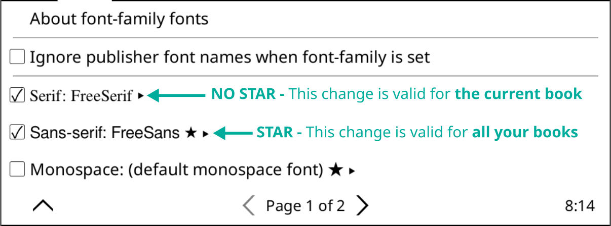Якщо ви часто змінюєте шрифти (наприклад, моноширинний для книг з програмування та з засічками для романів), існує зручніший спосіб робити це, ніж щоразу переходити по меню. Можна створити профілі для шрифтів разом з усіма пов'язаними з шрифтами налаштуваннями (наприклад, проміжки між рядками, контрастність, жирність та ін.), після чого додати ці профілі до Швидкого меню. Таким чином, можна буде відкривати меню вибору шрифтів і змінювати шрифт одним жестом, як це зображено нижче:
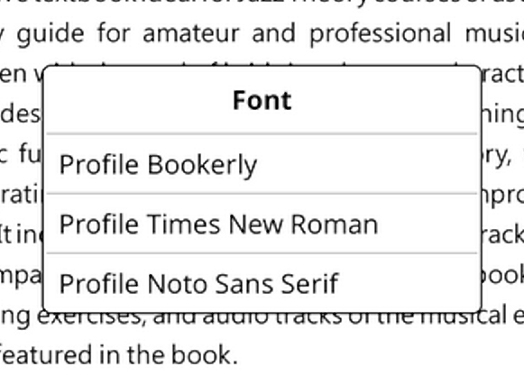Як це зробити описано у розділі ШВИДКЕ МЕНЮ ТА ПРОФІЛІ даного посібника.
!!! ДЛЯ ДОСВІДЧЕНИХ
Функція підлаштування стилів у KOReader дозволяє змінювати те, як KOReader буде візуалізувати книгу. Ми не будемо тут описувати повний курс CSS. Тут буде пояснено основи, щоб при погляді на підлаштування стилів ви принаймні мали загальне уявлення, що це таке.
Файл EPUB можна описати як HTML-файл + деякі правила CSS. Ці правила CSS визначають як будуть відображатися різні частини книги (заголовки, жирний шрифт, цитати тощо) у програмі читання. За допомогою підлаштування стилів, додаючи нові правила та/або замінюючи вбудовані у файл видавцем книги правила, можна змінювати як буде візуалізуватися книга.
Нижче підлаштування стилю показано на прикладі:
img { width: 10px !important; height: 10px !important }
Звичайною мовою це правило каже: «Ігнорувати оригінальний розмір і показувати усі зображення в цій книзі розміром 10 пікселів шириною та 10 пікселів висотою.» Тож якщо додати це підлаштування стилю в KOReader, усі зображення у книзі будуть показані в такому розмірі.
Далі це підлаштування пояснено елемент за елементом:
- img – це селектор CSS, який націлений на усі елементи img (зображення) у книзі.
- { width: 10px !important; height: 10px !important; } – це блок декларації, який містить стилі, що будуть застосовані до вибраних елементів img.
- width: 10px !important; – ця перша частина встановлює ширину (width) цільових елементів img на значення 10 пікселів; декларація !important є замінним перемикачем, який забезпечує те, що вказане тут значення ширини буде мати вищий пріоритет над будь-яким іншим значенням ширини (width), яке може впливати на ці зображення.
- height: 10px !important; – ця частина вказує висоту (height) цільових елементів img на значення 10 пікселів. Знову ж, декларація !important є замінним перемикачем, який забезпечує, що вказане вами значення висоти (height) буде мати вищий пріоритет над будь-яким іншим значенням декларації висоти (height), що застосовується до цих зображень.
Коротко кажучи, це правило CSS створене, щоб встановити фіксоване значення ширину і висоту на 10 пікселів для усіх елементів img у книзі, ігноруючи при цьому її оригінальний стиль.
Тут наведені деякі корисні підлаштування стилів, які ви можете використовувати як є або ж змінювати відповідно до своїх побажань. Наступні заголовки пояснюють як їх використовувати у KOReader.
- Додати розділювальну лінію над кожним заголовком у книзі:
H1, H2, H3, H4 { border-top: 2px solid black; }
- Додати певне поле над заголовками:
H1, H2, H3, H4 { margin-top: 2em !important; }
- Або ж, якщо книга має забагато полів над заголовками, вилучити їх:
H1, H2, H3, H4 { margin-top: 0 !important; }
- Додати малий розрив між абзацами, щоб зробити текст читабельнішим:
p + p { margin-top: 0.5em !important; margin-bottom: 0.5em !important; }
- Приховати усі зображення в EPUB:
img { display: none !important; }
-
Зробити зображення дуже малими, замість того, щоб приховувати їх:
img { width: 10px !important; height: 10px !important }
-
Зробити секцію з блоком коду акуратнішою, що корисно для комп'ютерних книг (Тут можна побачити приклад):
pre,code { font-size: 0.6em !important; line-height: 1.8em !important; background-color: #eee !important; margin: 1em 0 !important; padding: 1em 0 !important; }
Гаразд, тепер ми подивимося, що таке підлаштування стилів. У KOReader є три типи підлаштування стилів:
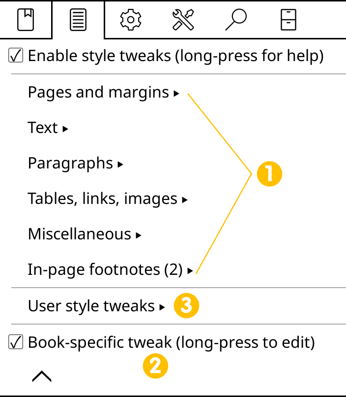Цей заголовок є новим, як і знімки екрану вище та нижче. Щось додати?
Ці підлаштування включені у KOReader. Їх найпростіше використовувати, оскільки для цього достатньо увімкнути їх у меню. Не потрібно писати ніякого коду CSS:
Вони знаходяться у багатьох категоріях. Щоб застосувати підлаштування тільки до поточної книги, поставте галочку у відповідному пункті меню. Якщо бажаєте отримати більше інформації про це підлаштування чи увімкнути їх для усіх книг, затисніть пункт меню з їх назвою. Появиться такий діалог:
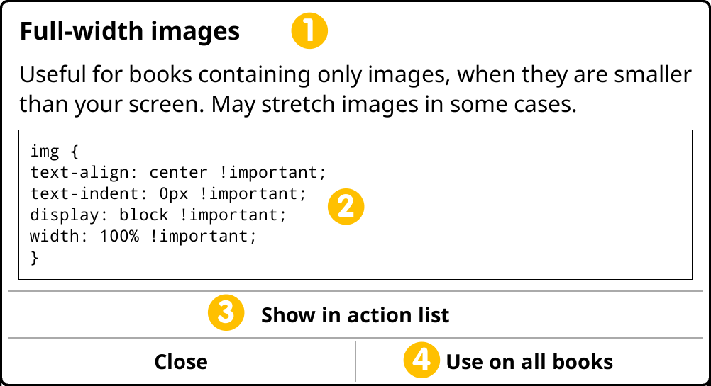- Ця область показує назву і опис підлаштування
- У цьому блоці міститься CSS-код підлаштування. Дотик до цього блоку скопіює код до буфера обміну. Потім можна вставити і змінити цей код у Підлаштуванні окремої книги, як написано у наступному підрозділі.
- Кнопка Показувати у списку дій дозволяє перемикати це підлаштування жестом чи додати його до Швидкого меню. Більше про це читайте у підрозділі «Як ефективно використовувати підлаштування» нижче.
- Кнопка Використовувати в усіх книгах активує це підлаштування для усіх книг. Після цього у меню біля його імені з'явиться зірочка (★) – вона показує, що підлаштування буде застосовуватися до усіх книг. Вимкнути це можна виконання таких же дій.
Як можна здогадатися з назви, цей тип підлаштувань активний тільки для тієї книги, у якій були створені. Ця функція корисна для перевірки підлаштувань або якщо потрібно щось виправити у поточні книзі й зрозуміло, що це не потрібно для інших книг. Після створення цього типу підлаштувань, якщо ви вирішите, що вони знадобляться також і в інших книгах (наприклад, книгах того ж видавця), їх можна перетворити на підлаштування стилів користувача, що буде описано далі.
Щоб створити підлаштування окремої книги, скористайтеся інтегрованим редактором, який можна знайти тут:
ПОРАДА У редакторі на нижній панелі інструментів є меню CSS. Це меню містить багато корисних синтаксису і властивостей CSS. Коли відкриєте це меню, радимо спершу прочитати довідкову інформацію Затисніть для відомостей. Щоб побачити описи, можна також затискати елементи CSS у меню.
Ця група підлаштувань відрізняється від попередніх способом створення. Також, на відміну від попередніх, вони не обмежені окремою книгою. Їх можна застосувати глобально, до усіх книг.
Процедура приблизно така:
- Створіть свій файл користувацького підлаштування
- Передайте його на пристрій
- Увімкніть своє користувацьке підлаштування у меню
1. Створення файлу користувацького підлаштування:
Користувацькі підлаштування стилю насправді є звичайними текстовими файлами з розширенням .css. Файл можна створити:
- На комп'ютері
- На іншому пристрої, якщо він має текстовий редактор (наприклад, пристрої на базі ОС Android)
- У інтегрованому в KOReader текстовому редакторів, який можна знайти серед модулів
Ви можете копіювати/вставляти до свого файлу приклади, які були згадані вище.
2. Передавання файлу на пристрій:
Після створення файлу, що містить ваші правила CSS, збережіть або передайте його до теки /koreader/styletweaks на пристрої, де встановлений KOReader. Назвіть файли описовими назвами, бо назва файлу буде назвою підлаштування у системі меню KOReader. У назвах файлів можна використовувати підкреслення «_», які у системі мені будуть показані як пробіли. Після передачі файлу необхідно перезапустити KOReader, щоб він почав працювати з цим файлом.
2. Увімкнення підлаштування:
Після перезапуску відкрийте книгу і перейдіть до цього меню:
Тепер ваше підлаштування повинно відображатися у списку. Щоб застосувати ваше підлаштування лише до поточної книги, поставте галочку. Якщо бажаєте, щоб це підлаштування було увімкнене для усіх книг, затисніть його назву. З'явиться діалогове вікно. Торкніться пункту меню Використовувати в усіх книгах. Біля його назви у меню з'явиться зірочка (★), яка вказує, що підлаштування буде застосовуватися до для усіх книг. Вимкнути їх можна виконавши ті самі дії. Приклад див. нижче:
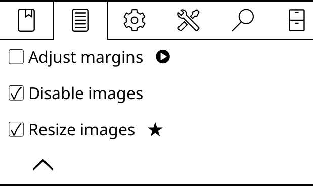На вищенаведеному зображенні видно як в меню відображаються 3 файли підлаштувань стилів, які знаходяться у теці /koreader/styletweaks. Перше підлаштування вимкнене – галочка біля нього відсутня. Друге увімкнене лише для цієї книги – галочка є, але без зірочки. Третє увімкнене для усіх книг (★).
Ви могли помітити, що біля першого підлаштування праворуч стоїть значок трикутника. Це означає, що це підлаштування можна активувати жестом. Це буде роз'яснено у наступному підрозділі.
При створенні підлаштування стилів користувача можна зробити багато файлів підлаштувань, кожен з яких буде змінювати певну частину книги, як на зображенні вище. Можна мати один файл для заголовків, інший для абзаців, посилань тощо. Ця система роботи підлаштувань дозволяє вмикати підлаштування залежно від документу.
Як сказано вище, перемкнути підлаштування стилів користувача можна з цього меню:
Також є простіші способи для перемикання ваших підлаштувань стилів, ніж щоразу переходити по меню.
1. Можна призначити жест на підлаштування
Спершу необхідно додати підлаштування стилю користувача до списку дій жеста:
- Перейдіть до меню підлаштування стилів користувача і затисніть ваше підлаштування стилю
- У діалоговому вікні натисніть кнопку Показати у списку дій
- Біля підлаштування стилю в меню з'явиться значок трикутника, що вказує праворуч
Його можна побачити на наведеному вище зображенні, біля підлаштування стилю з назвою «Adjust margins». Тепер це підлаштування стилю додане до списку дій. Його можна знайти у категорії Менеджер жестів > Перекомпоновувані документи. Він буде в кінці списку.
2. Підлаштування стилю можна додати до Швидкого меню
Щоб додати підлаштування у Швидке меню, спершу його потрібно додати до списку дій, як описано у підрозділі вище. Далі слідуйте інструкціям у розділі цього посібника про Швидке меню.
Можна навіть поєднати обидва методи і створити спеціальне Швидке меню для ваших підлаштувань стилів і потім призначити його на жест. Таким чином, простим жестом можна отримати доступ до усіх підлаштувань стилю і активувати їх за потреби.
Майте на увазі, що в деяких книгах заголовки можуть не бути у елементах <H1> та <H2>, але у дечому на зразок <p class="tit123">. Знайти які селектори використані для частини тексту можна перевіривши джерельний код. Щоб досягнути цього, виберіть текст навколо елемента, який вас цікавить, і у діалоговому вікні оберіть Переглянути HTML. У прикладі вище, підлаштування стилю виглядатиме так:
P.tit123 { border-top: 2px solid black; }
замість цього:
H1 { border-top: 2px solid black; }
KOReader дає можливість взаємодіяти з книгою начеб з паперовою. Багато налаштувань вікна закладки можна змінити тут:
/ Налаштування / ЗакладкиЗАКЛАДКИ:
Можна додавати і вилучати закладки дотиком до правого верхнього кута. Це рівнозначно загинанню верхнього правого кутка паперової сторінки справжньої книги і показує подібний значок, якщо функція увімкнена.
ВИДІЛЕННЯ:
Можна виділяти текст 4-ма різними стилями. На нижченаведеному зображенні можна побачити абзаци, виділені різними способами - висвітлення (з сірим тлом), підкреслення, закреслення та інверсія кольорів.
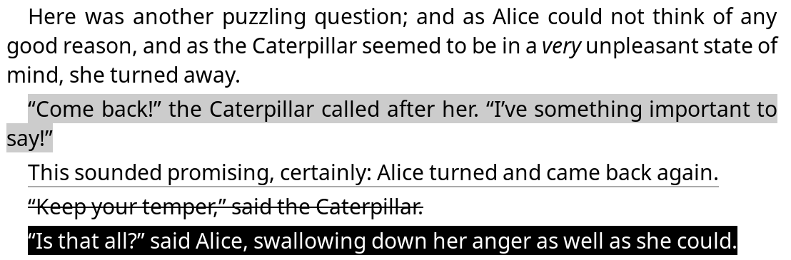Усі стилі можна використовувати водночас, наче це різнокольорові маркери для виділення тексту. Або ж можна обрати улюблений стиль і зробити його типовим затиснувши це меню:
Разом з тим, якщо пристрій має кольоровий екран, виділення можна робити різними кольорами:
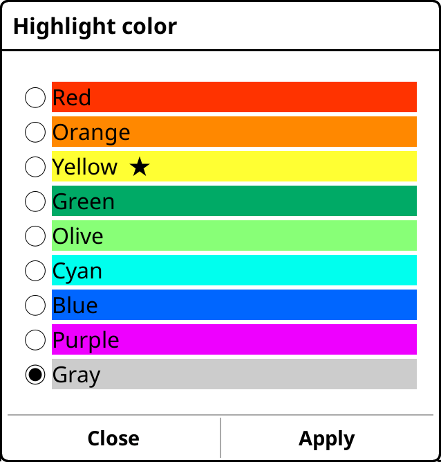Деякі підказки щодо кольорових виділень:
- Колір наявного виділення можна змінити натиснувши його і обравши у зринаючому меню Колір.
- Кольори можна поєднувати з різними стилями виділення, як то підкреслення та закреслення тексту, що дозволяє створити потужну систему виділень. Наприклад, можна використати стиль червоного закреслення для вилучення або стиль довтогарячого підкреслення для важливих місць та інше.
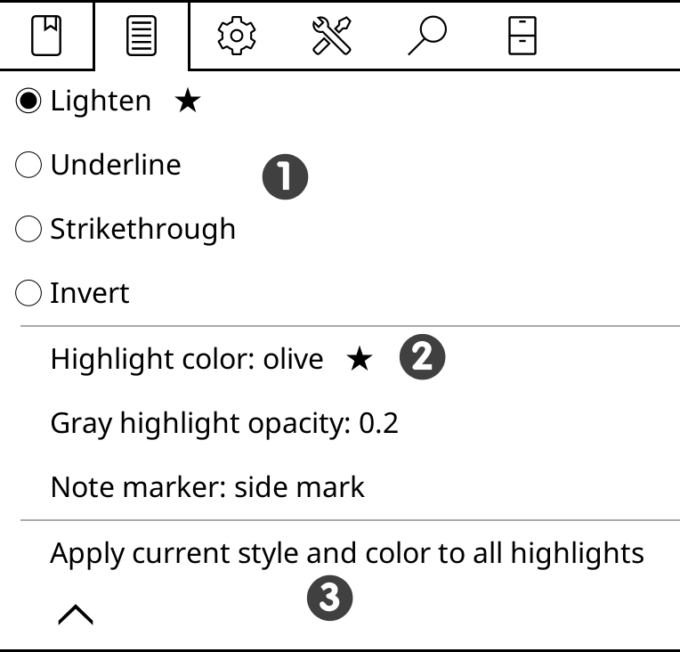
- У меню виділення можна затиснути тип виділення, щоб встановити його типовим (★)
- Після вибору кольору можна затиснути у цьому меню назву кольору, щоб встановити цей колір типовим (★)
- Можна натиснути пункт Застосувати поточний стиль і колір до усіх виділень, щоб зробити усі виділення тексту в цій книзі такими ж. Будьте обережні – результати цієї дії неможливо скасувати!
НОТАТКИ:
До виділення також можна додавати нотатки. Дотик до виділення викличе контекстне меню, в якому слід обрати Додати нотатку. Також можна додати Позначку нотатки, яка показує які виділення містять нотатки. Наявні три стилі: підкреслений, бічна лінія та бічна мітка (на зображенні нижче – значок олівця праворуч):
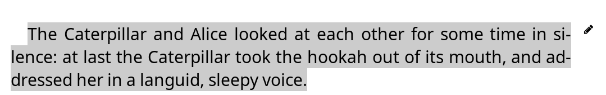Щоб увімкнути цю функцію та обрати стиль Позначки нотатки, перейдіть до:
KOReader має два режими виділення для використання у різних випадках:
Звичайний режим подібний до виділення тексту пальцем на телефоні чи планшеті і більше підходить для виділення менше однієї сторінки тексту.
- Затисніть початкове слово
- Протягніть пальцем до кінця уривка
- Заберіть палець
Коли палець досягне закінчення сторінки, KOReader перегорне сторінку, щоб ви могли продовжити виділення тексту (лише у документах EPUB/HTML). Цю функцію можна вимкнути тут:
/ Дотики та жести / Затискання тексту / Автопрокручування коли виділення досягає кутаРежим вибору і виділення більше підходить для виділення великих уривків, розміщених на двох і більше сторінках. Він також може краще працювати якщо є проблеми з чутливістю сенсорного екрану або моторикою рук користувача, оскільки в цьому режимі виділення немає потреби протягувати пальцем по екрану.
/ Дотики та жести / Затискання тексту / Словник при виборі одного словаЯк виділяти:
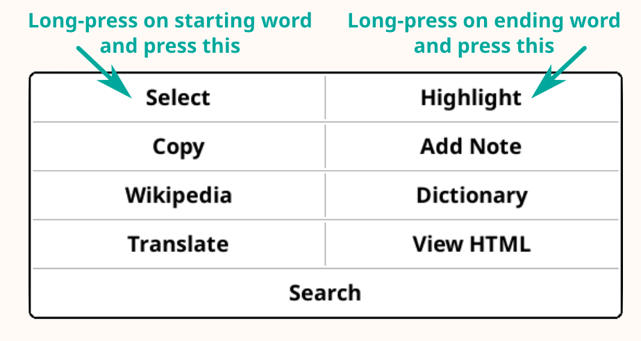- Затискання (або проведення пальцем, якщо увімкнений пошук в словнику, як вказано вище) першого слова відкриє контекстне меню.
- Торкніться Вибрати, після чого активується режим виділення. Весь час роботи в цьому режимі буде відображатися відповідний значок у верхньому лівому куті екрану (якого можна торкнутися, щоб дізнатися більше інформації). Виділення можна скасувати знову торкнувшись початку виділення. в цьому режимі можна гортати сторінки дотиком/проведенням пальця і вільно переміщуватися по документу (зміст, проглядання тощо).
- Затискання (або проведення, якщо увімкнений пошук в словнику, як вказано вище) останнього слова виділення знову відкриє контекстне меню.
- Цього разу дотик до Виділити завершить виділення уривків.
Це діалогове вікно зазвичай з'являється у центрі екрану. Якщо бажаєте, щоб цей діалог з'являвся ближче до місця виділення, тоді потрібно змінити тут параметр Центру на Позиція жесту (знаходиться на другій сторінці цього меню):
/ Дотики та жести / Затискання тексту / Позиція діалогу виділення / Дотики та жести / Затискання тексту / Вибрати й виділитиПід час виділення KOReader намагається включити до виділеного пов'язані розділові знаки до та після вибраного уривку. Наприклад, якщо виділити все речення від першого до останнього слова, KOReader автоматично включить до виділеного розділові знаки з обох боків (до та після) речення.
Однак, якщо почати виділення посеред речення, крапка в кінці речення не буде включена до виділення, оскільки KOReader вважатиме, що ви бажаєте зробити часткове виділення. Тож якщо бажаєте, щоб розділові знаки були включені до виділення, переконайтеся, що вибираєте ціле речення. Розділові знаки можна додатки згодом, затиснувши кнопку Змінити виділений текст.
Якщо торкнутися вже виділеного тексту (без нотатки), відкриється це контекстне меню. Елементи Видалити і Додати нотатку зрозумілі. Пункти меню в нижньому рядку використовуються для розширення чи звуження виділення.
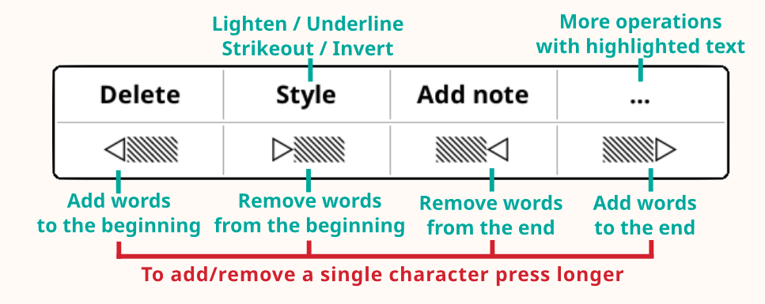Якщо затиснути виділений текст з доданою нотаткою, відкриється це контекстне меню. Торкніться Змінити виділений текст, щоб відкрити вищезгадане меню, за допомогою якого можна змінити й виділення, і нотатку:
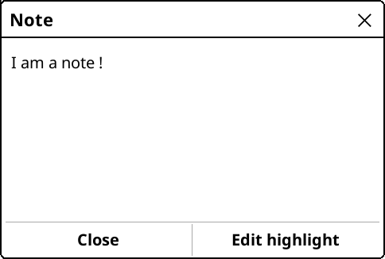Якщо натиснути значок меню ( ), на сторінці Закладок за допомогою фільтра можна обрати відображення лише одного типу закладок. Також можна відфільтрувати за типом виділення:
Окрім додавання нотатки, KOReader також дозволяє редагувати сам виділений текст, який відображається у списку закладок. У деяких ситуаціях це може бути кориснішим, ніж додавання нотатки до виділення. Наприклад, уявіть, що переглядаєте текст. Ви хочете виділити речення, яке містить багато дат, і одна з дат неправильна. Якщо бажаєте додати нотатку, щоб вказати на цю помилку, у нотатці потрібно зазначити, яка з них неправильна. Але якщо ви відредагуєте текст виділення, зможете написати «(цю дату потрібно перевірити)» поруч із проблемною датою.
Зверніть увагу, що це редагування не змінює зміст книги чи виділений уривок на сторінці. Ви все одно побачите те саме виділене речення в програмі читання. Ваше редагування буде видимим у списку закладок. А коли ви пізніше експортуєте виділені фрагменти, експортуватиметься саме відредагований текст.
Щоб редагувати висвітлений текст:
- Торкніться до виділення
- Натисніть Докладно у зринаючому меню
- Натисніть Редагувати текст у діалоговому вікні «Докладно»
Це також можна зробити це у вікні «Закладки»:
- Перейдіть до списку закладок через меню або жест
- Затисніть виділення, яке потрібно відредагувати
- Натисніть Редагувати текст у меню
- Змініть текст у діалоговому вікні та натисніть кнопку Зберегти
Якщо потрібно повернути відредагований текст до початкового виділення, виконайте наведені вище кроки та на кроці 3 замість кнопки Редагувати текст натисніть кнопку Скинути текст.
При відкритті списку закладок зазвичай відображається лише вміст ваших виділених фрагментів. Якщо виділений фрагмент містить нотатку, у списку закладок ви побачите лише значок олівця. Щоб подивитися (і відредагувати) додану нотатку, потрібно затиснути елемент цього списку. Якщо бажаєте бачити у списку закладок також текст нотатки, це можна налаштувати тут:
/ Налаштування / Закладки / Показувати в елементахМожна налаштувати відображення:
- Лише виділеного тексту (типово)
- Виділити обидва, текст і нотатку
- Нотатку, якщо вона є, інакше виділений текст
/ Налаштування / Закладки / Максимум рядків у закладціПісля завершення читання книги, її можна перемістити до певної теки з метою архівування або обробки. Увімкнуть модуль Перемістити до архіву і у налаштуваннях модуля вкажіть теку, яка буде вважатися архівною (Вказати теку архіву). Після цього можна буде переміщувати книгу до теки архіву використавши:
- Меню модуля Перемістити до архіву
- Жестом або
- Через пункт Швидкого меню
KOReader забезпечує різні способи експортування виділеного вами і нотаток з пристрою читання, а саме:
Цей універсальний модуль може експортувати виділені вами уривки тексту до локального файлу або онлайн-сервісів.
Локальний експорт
Виділені фрагменти можна експортувати на свій пристрій у таких форматах фалів:
- Текстовий (.txt)
- HTML (.html)
- Текст з розміткою Markdown (.md)
- Вирізки Kindle (.txt)
- JSON (.json)
Формат, в який буде здійснюватися експорт, можна обрати тут:
/ Експорт виділеного / Обрати формати і службиШлях до теки експорту файлів можна побачити та змінити тут:
/ Експорт виділеного / Обрати теку для експортуОнлайн-сервіси
Також можна експортувати через мережу до цих сервісів:
- Joplin – застосунок для створення нотаток
- Readwise – онлайн-додаток для закладок/виділень
- Memos – власний центр нотаток з відкритим кодом
- Flomo – онлайн-сервіс для створення нотаток
- XMNote – органайзер закладок для Android китайською мовою
Докладні інструкції як налаштувати роботу з цими сервісами можна знайти на відповідній сторінці вікі.
Після вибору форматів з меню того ж модуля можна експортувати нотатки для поточної книги або усіх книг вашої бібліотеки.
Якщо бажаєте експортувати лише з частини книг своєї бібліотеки, це можна зробити з Оглядача файлів:
- Позначте бажані книги у Оглядачі файлів
- Торкніться кнопки меню (виглядає як галочка) у верхньому правому куті
- Виберіть у меню Експорт виділеного
/ Експорт виділеного / Обрати стиль виділенняKoHighlights – це зовнішня програма, яку можна встановити на свій комп’ютер. Вона може отримати доступ до нотаток та виділень у книзі коли пристрій підключений до комп’ютера. Детальніші відомості дивіться на сторінці проекту на GitHub.
Calibre – це зовнішня програма, яку можна встановити на свій комп’ютер. Імпортувати виділені фрагменти до бази даних Calibre можна за допомогою модуля KOReader Sync. Встановлювати згаданий модуль потрібно безпосередньо у програмі Calibre. Завантажити та дізнатися більше можна на сторінці проекту.
KOReader забезпечує багато способів для читання документів PDF і DJVU, які оптимізовані для більших (зазвичай для форматів A4 чи ANSI Letter) розмірів сторінок на пристроях з меншими розмірами екранів:
1. Можна увімкнути перекомпонування
Перекомпонування намагається витягнути текстовий шар з документа (якщо він наявний) і показувати його одним стовпцем. Результати зазвичай задовільні. Цю функцію можна зробити типовою затиснувши її.
2. Можна увімкнути Масштабування до вмісту
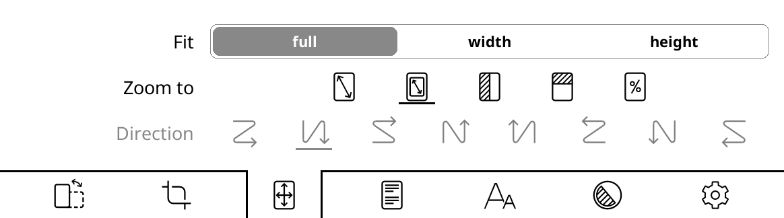Під час роботи цієї функції KOReader намагається обрізати поля документу так, щоб на екрані текст виглядав більшим. В тому ж меню можна встановити допасування по ширині, після чого програма буде допасовувати тільки ширину сторінки, а не всю сторінку, тож текст буде виглядати більшим.
3. Можна спробувати користуватися пристроєм у альбомній орієнтації
Це зробить екран ширшим, тож документ повинен виглядати достатньо великим для комфортного читання.
4. Можна збільшити зображення до 100% і прокручувати на екрані, щоб читати різні частини
Це дуже зручно при читанні мальописів. Спершу увімкніть режим стовпців у цьому пункті меню:
Потім, у тому ж меню, виберіть відповідний напрямок читання документа:
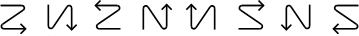- Наприклад, під час читання статті, яка має дві колонки (стовпці) тексту, ви спочатку будете читати першу колонку згори до низу сторінки, а потім повернетеся до верхнього правого боку, щоб продовжити читання тексту в правій колонці:
- При читанні книжки з мальописом будете переходити згори ліворуч → праворуч → вниз ліворуч → праворуч, тобто зиґзаґом:
- У манґа (японських мальописах), де кадри розміщені зліва направо, порядок читання зворотний:
В цьому режимі, з того ж меню, також можна налаштувати Горизонтальне/Вертикальне перекриття та Кількість стовпців, щоб краще припасувати текст до розмірів екрану пристрою. Поекспериментуйте з цими налаштуваннями.
Параметр Контрастність регулює рівні чорного кольору у вашому документі. Майте на увазі, що однакове значення контрастності застосовується як до тексту, так і до зображень. Якщо встановити дуже високе значення, зображення можуть стати занадто темними.
Очищення тла вилучає водяні знаки з документа, а також сіре тло. Ця функція може перетворити документ у відтінках сірого на чорно-білий, щоб він став контрастнішим та зручнішим для читання.
Якість візуалізації (активно лише в режимі перекомпонування) встановлює якість обробки та вилучення тексту та зображень. Висока є приємнішим варіантом, але вона може бути набагато повільнішою (кілька секунд для перегортання сторінки), ніж типово. Якщо файли PDF/DJVU повільні, то це перше налаштування, яке слід перевірити.
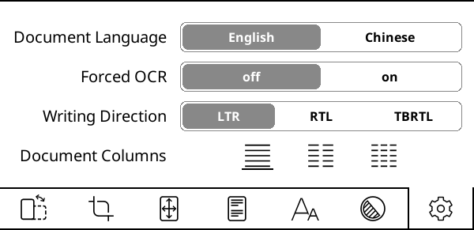
Мова документа встановлює мову, яка буде використовуватися механізмом розпізнавання символів (OCR).
Примусове OCR, як випливає з назви, примусово використовує розпізнавання символів (OCR), навіть якщо документ має текстовий шар.
Напрямок письма (активно лише в режимі перекомпонування) встановлює напрямок оригінального документа. Встановіть значення ПНЛ (RTL) для таких мов, як арабська та іврит.
Стовпці документа (активно лише в режимі перекомпонування) встановлює кількість текстових колонок (стовпців) у оригінальному документі.
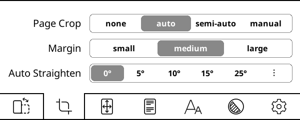
Корекція нахилу може вирівняти сторінки проблемного документу. Наприклад, сторінки PDF, які відскановані під кутом. Воно доступне для документів PDF, DJVU, CBZ/CBT та файлів зображень. Щоб увімкнути, оберіть максимальний кут нахилу, який KOReader буде намагатися виправити. Якщо це не допоможе, спробуйте обрати більший кут нахилу. Майте на увазі, що ця функція може сповільнити роботу пристрою (залежить від декількох чинників).
Щоб зберегти виділені фрагменти, можна скористатися функцією Експорт виділеного, про яку йшлося в попередньому розділі.
Якщо ви робите виділення в PDF-документі, KOReader також може зберігати їх безпосередньо у PDF-файлі. Це може бути корисним у певних ситуаціях, оскільки за допомогою цього методу виділення тексту стають частиною PDF-файлу. Це означає, що ви можете переглядати їх в інших програмах або на інших платформах без встановлення KOReader. Наприклад, якщо ви надсилаєте файл із виділеннями тексту іншому користувачеві, йому не потрібно встановлювати KOReader, щоб бачити виділене вами. Можна просто надіслати PDF-файл зі збереженими в ньому виділеннями, і його можна відкрити та переглянути виділення за допомогою сумісної програми для читання PDF.
ПОПЕРЕДЖЕННЯ При використанні модуля Синхронізація поступу збереження виділених фрагментів PDF-файлу змінить ваш файл, тому синхронізація не вдасться. Якщо плануєте використовувати обидві функції, у налаштуваннях модуля Синхронізація поступу змініть параметри Метод зіставлення документів на За назвою замість стандартного методу зіставлення Двійковий:
/ Синхронізація поступу / Метод зіставлення документівЯкі програми читання PDF-файлів відображають виділене в KOReader?
Програми читання PDF-файлів зазвичай використовують певні стандартні бібліотеки для відображення PDF-файлів. Дві найвідоміші бібліотеки для PDF – це бібліотеки MuPDF та Poppler. KOReader використовує бібліотеку MuPDF, тому виділення, записані в PDF-файли у KOReader, наразі не видно на програмах для читання PDF-файлів, які використовують бібліотеку Poppler. Список сумісності наведений нижче. ✅ означає, що ця програма показує виділене у KOReader; ❌ означає, що програма не показує ці виділення. А ⚠️ означає, що для їх показу програмі потрібен певний модуль.
ПОПЕРЕДЖЕННЯ Цей список не є повним і може застаріти. Тому варто самостійно перевірити сумісність. Просто зробіть виділення в KOReader, запишіть його у PDF-файл, а потім спробуйте відкрити файл у програмі читання PDF-файлів, щоб перевірити, чи виділення відображаються.
- ✅ Google Chrome (усі платформи)
- ✅ Deepin Reader (Linux)
- ✅ Mozilla Firefox (усі платформи)
- ✅ Ghostscript (усі платформи)
- ✅ MuPDF (Windows/Android)
- ⚠️ Zathura (якщо увімкнений модуль MuPDF)
- ❌ Adobe Acrobat Reader
- ❌ Evince (Linux)
- ❌ Foxit Reader
- ❌ LibreOffice Draw (як редактор)
- ❌ Moon Reader (Android)
- ❌ Okular (Linux)
- ❌ SumatraPDF (Windows)
- ❌ Xpdf (Linux)
- ❌ Xreader (Linux)
Оскільки створення виділень для подальшого використання може вимагати значних зусиль, варто розуміти як це працює, щоб уникнути неприємних ситуацій.
КОРОТКИЙ ОГЛЯД: Якщо хочете мати змогу видаляти чи експортувати свої виділені фрагменти PDF пізніше, під час копіювання книги на інший пристрій, разом з нею необхідно також скопіювати теку .sdr, яка пов’язана з відповідною книгою. Без цієї теки KOReader все ще може відображати збережені виділені фрагменти, але не знатиме, де вони знаходяться у файлі, тому не може їх змінювати. Більше про це читайте нижче.
Як працюють звичайні виділення в KOReader
Коли ви робите виділення в KOReader, незалежно від того, чи є документ у форматі EPUB чи PDF, це виділення записується у файл налаштувань. Наприклад, якщо ви читаєте книгу з файлу Меч Арея.epub, у вас буде тека з назвою Меч Арея.sdr у тій самій теці, що й файл книги. Виділення зберігаються у файлі в цій теці .sdr. Це означає, що при видаленні пов'язаної з книгою теки .sdr усі виділення втрачаються.
Як в KOReader працюють виділення у PDF-файлах
Функція виділення у PDF-файлах працює дещо інакше, ніж описано вище. Як вже було згадано, при збереженні виділення у PDF-файлі, вони записуються безпосередньо до PDF-файлу, тобто стають частиною самого файлу. Саме тому можна надіслати цей PDF-файл іншому користувачеві і він зможе переглянути виділення за допомогою сумісної програми для читання PDF-файлів. Йому не знадобиться ваша тека .sdr, яка містить запис виділень у книзі, оскільки тепер виділення вбудовані безпосередньо у PDF-файл.
Нижче проблему, яка може виникнути під час використання цієї функції, пояснено на прикладі. Уявіть, що читаєте PDF-книгу на пристрої для читання за допомогою KOReader:
- Ви робите виділення і функція Зберегти виділення у PDF увімкнена, тому коли ви робите ці виділення, KOReader зберігає їх у PDF-файлі.
- Ви хочете продовжити читання книги на своєму телефоні за допомогою KOReader, тому копіюєте цей PDF-файл з е-читалки на свій телефон (але не копіюєте теку .sdr, лише PDF-файл).
- Коли ви за допомогою KOReader відкриєте книгу на телефоні, то побачите ваші виділені фрагменти тексту все ще там.
Тепер ситуація на обох пристроях виглядає однаково. KOReader як на е-читалці, так і на телефоні показує PDF-файл з однаковими виділеннями. Але він лише виглядає однаково, насправді є велика різниця.
KOReader на е-читалці знає, які виділення в цьому PDF-файлі зроблено за допомогою KOReader, оскільки в ній є тека .sdr. Але KOReader на вашому телефоні не має цієї інформації. У нього є лише PDF-файл.
Різниця виникає, коли ви намагаєтеся видалити виділені фрагменти PDF або експортувати їх. Ваша е-читалка може як видалити ці виділені фрагменти PDF, так і експортувати їх. Але KOReader на телефоні не може цього зробити, оскільки, як вже було сказано, у нього немає теки .sdr вашої книги, тому виділені фрагменти в книзі для нього виглядають як частина оригінальної книги.
Коротше кажучи, якщо хочете мати змогу видаляти або експортувати свої виділені фрагменти з PDF-файлу пізніше, під час копіювання книги на інші пристрої потрібно також скопіювати теку .sdr, пов’язану з вашою книгою.
OCR (оптичне розпізнавання символів) – це процес отримання тексту із зображень. У контексті KOReader він зазвичай використовується для отримання тексту зі сканованих сторінок книг у PDF-файлах. KOReader для цього завдання використовує Tesseract Open Source OCR Engine.
Для використання цієї функції потрібно:
- Встановити дані мов для Tesseract у KOReader
- Додати нововстановлені мови до файлу конфігурації /koreader/defaults.lua (для всіх мов, крім англійської й китайської)
Мальописи зазвичай потребують частішого повного оновлення екрану, ніж текстовий контент без зображень. Для звичайного тексту можна без негативних наслідків встановити високий інтервал повного оновлення екрану. Але зображення можуть залишати після себе більше артефактів.
KOReader дозволяє призначити будь-який жест для перемикання між різними частотами оновлення. Наприклад, можна налаштувати проведення пальцем вгору по лівому краю для повного оновлення на кожній сторінці під час читання мальописів та проведення пальцем вниз по лівому краю для оновлення кожні N сторінок для книг, що містять лише текст. Тож, відкриваючи мальопис, можна перемикатися на частіше оновлення простим дотиком чи протягуванням пальцем (або навпаки).
Це налаштовується тут:
/ Дотики та жести / Менеджер жестів / Екран і підсвічування / Частота повного оновлення екрануЦя функція робить читання мальописів на малих екранах значно легшим. Її можна увімкнути під час читання документів PDF, DJVU, CBZ або CBT тут:
Коли ця функція увімкнена, KOReader намагається знайти межі прямокутних панелей («кадрів») на екрані. Якщо затиснути панель, KOReader збільшить її масштаб і покаже лише цю панель.
Як можна здогадатися, ця функція найкраще працює з мальописами, які мають чіткі межі панелей. Також через цю проблему з межами у даному режимі немає перегортання сторінок для переходу до наступної панелі. Доведеться закрити поточну збільшену панель і затиснути наступну. Щоб зробити це, просто проведіть пальцем вниз по цій збільшеній панелі. Також, щоб вийти з цього режиму перегляду, можна використовувати будь-який мультижест (будь-яку комбінацію вгору, вниз, вліво, вправо).
Як це робиться показано нижче:
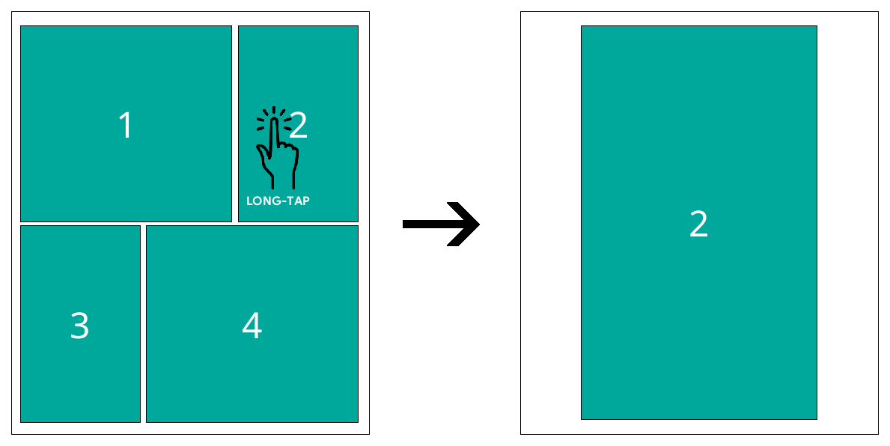Якщо бажаєте користуватися цією функцією під час читання інших типів документів (EPUB, FB2, HTML) чи перегляду файлів зображень, тоді слід відкрити файл за допомогою іншого рушія: у Оглядачі файлів затисніть назву файлу, потім торкніться до Відкрити за допомогою… та оберіть MuPDF.
Коли ви дочитаєте до останньої сторінки книги, KOReader покаже діалог. У цьому діалозі є кнопка Відкрити наступний файл, натискання на яку відкриє наступний файл з тієї ж теки, де розміщена поточна книга. Тож ви можете розкласти серії книг у різні теки та читати їх одна за іншою без необхідності повертатися до Оглядача файлів.
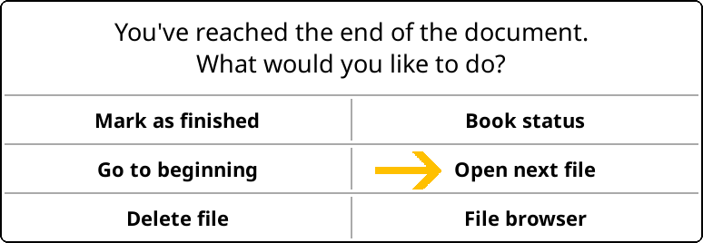Під час відкриття наступного файлу KOReader буде пропускати файли, які позначені вами як прочитані. Ця функція корисна, якщо у теці з файлами манґи знаходяться книги, які ви вже прочитали. Позначати файли як прочитані можна у діалозі кінця книги, який показано вище. Також їх можна позначати у Оглядачі файлів, затиснувши файл. Після копіювання їх на пристрій можна:
- Відкрити Оглядач файлів у KOReader
- Затиснути раніше прочитану книгу та Позначити прочитаною
Після цього можна відкривати усі непрочитані книги просто натискаючи Відкрити наступний файл в кінці поточної книги. KOReader пропустить ті, які вже були прочитані раніше.
Якщо ви любите читати манґу на вашому пристрої з е-чорнилами, є деякі поради щодо того, як зробити цей процес приємнішим. Підготовка власних файлів з манґою є найкращим рішенням, якщо вас не задовольняє вигляд мальописів на вашому пристрої.
Такі типи файлів, як MOBI та EPUB, не підходять для роботи з переважно графічним вмістом (наприклад, манґи і мальописів). Підтримка MOBI у KOReader мінімальна або взагалі відсутня, а пріоритети відображення тексту EPUB можуть спричиняти проблеми під час показу зображень на всю сторінку. Для отримання додаткової технічної інформації відвідайте це обговорення на GitHub.
Найкращий варіант – створення файлу CBZ, який в KOReader працює краще. Файл з розширенням .cbz по суті є файлом zip-архіву (без стиснення) з набором зображень. Він містить багато зображень, зазвичай файли .png або .jpeg, організовані як сторінки мальопису. KOReader також може відкривати файли CBT, які є подібні до файлів CBZ, але використовують формат архіву TAR.
Найпростіший спосіб перетворити манґу на CBZ — зберегти манґу з сайтів як зображення, а потім перетворити її за допомогою Kindle Comic Converter (https://github.com/ciromattia/kcc). Там є корисні параметри, як от автоматичне повертання двосторінкових розворотів у альбомну орієнтацію та застосування дитерингу, щоб градієнти, візуалізовані е-чорнилами, плавно розтушовувалися без нерівних шарів.
Найкращого результату можна досягти змінивши розміри зображень та зробивши їх розмір точно таким, як роздільна здатність екрана вашого пристрою. Пристосовані до розміру екрана, на якому їх будуть переглядати, зображення у файлі CBZ не потребують зміни їх масштабу під час читання мальопису. Під час читання KOReader зменшує масштаб зображень, але це не рекомендується, бо KOReader перед зміною масштабу додає перехід дитерингу і це призводить до втрати якості.
Але якщо бажаєте використовувати власноруч створені файли CBZ на кількох пристроях або хочете зберегти високу роздільну здатність для подальшої перевірки, найкращим рішенням може бути створення CBZ для пристрою з вищою роздільною здатністю екрану. Або застосуйте довільну «високу» роздільну здатність, наприклад, не змінюючи оригінальну роздільну здатність зображень. 300 PPI або вищу (до 450 PPI чи навіть 600 PPI), звісно, якщо оригінальна роздільна здатність зображень не нижча. Якщо припустити, що розмір екрану 8", 1500×2000 пікселів є хорошою роздільною здатністю. Для більших зображень варто перевірити їх вигляд на екрані пристрою, щоб побачити чи справляється пристрій з зображеннями такого розміру. Особливо старі пристрої Kindle, які мають малий обсяг пам'яті, можуть мати проблеми з зображеннями, наприклад, розміром 3000×4000 пікселів. Якщо ви автоматизуєте процес, варто розглянути можливість одночасного створення версій з нижчою та вищою роздільною здатністю (наприклад, 200/400 та 300/600 DPI).
/ Дотики та жести / Гортання сторінок / Інвертувати гортання сторінок дотиком і протягуванням / кнопкиНижче наведено приклад процесу підготовки одного файлу манґи:
- Завантажте Kindle Comic Converter (KCC) з https://github.com/ciromattia/kcc
- Завантажте вашу манґу звідкись (наприклад, HakuNeko)
- Розпакуйте файл манґи. Тепер у вас є тека, яка містить лише зображення (або підтеки з зображеннями, а не архівами)
- Опрацюйте цю теку за допомогою KCC. З кожної теки вийде один файл CBZ, тому якщо бажаєте створити файл, який містить декілька частин, оберіть декілька тек водночас
Деякі корисні налаштування KCC:
Розділювач ширини (Spread splitter): ця функція виявляє розвороти сторінок і дозволяє повернути їх або розділити на дві сторінки.
Збільшення масштабу (Upscaling): збільшує зображення, які мають менші розміри, ніж роздільна здатність екрану, на якому плануєте їх переглядати.
Якщо бажаєте просто зануритися у читання манґи, при створенні свого файлу CBZ за допомогою KCC переконайтеся, що вибрали саме ту роздільну здатність, яку має екран вашого пристрою для читання. Під час читання манґи у KOReader також можна сховати панель поступу внизу екрану. Тож повністю весь екран, без будь-яких завад, буде відображати лише вашу манґу.
!!! ДЛЯ ДОСВІДЧЕНИХ
Після створення файлу CBZ за допомогою KCC додатково можна виконати дитеринг зображення. В цьому випадку візуалізовані е-чорнилами градієнти будуть плавно вирівняні без зазубрених шарів. Цей крок дасть змогу створити тонко підігнані частини манґи, які матимуть кращий вигляд у KOReader.
Для обробки зображень можна скористатися ImageMagick. ImageMagick — це потужне програмне забезпечення з відкритим кодом для показу, створення, перетворення, зміни та редагування растрових зображень. В ImageMagick можна працювати через командний рядок, щоб обробляти багато зображень одночасно.
- Розпакуйте підготований файл CBZ, раніше створений за допомогою KCC,
- Завантажте файл dither_pack.zip (розташований на Яндекс Диску), який містить два пакетні файли (.BAT) та кольоровий шаблон GIF.
- Розпакуйте ці три файли в одній теці з зображеннями, які будете обробляти
- Відредагуйте _magick_manga_ditherN_resize.bat та змініть роздільну здатність на ту, яку має ваш пристрій (в обох місцях файлу BAT).
ПОПЕРЕДЖЕННЯ Виконання наступного кроку замінить усі зображення у теці, в якій розміщено оброблювані зображення. Тож якщо хочете зберегти оригінали, переконайтеся, що зберегли копії цих оригіналів у іншій теці.
- Запустіть _magick_manga_ditherN_resize.bat, щоб змінити і розмити зображення.
- Припускаємо, що ви маєте встановлений 7-Zip, тож виконайте _batch_archive.bat, щоб запакувати усі оброблені зображення у архів CBZ.
!!! ДЛЯ ДОСВІДЧЕНИХ
Можна налаштувати, щоб KOReader перегортав сторінки зліва направо, тобто щоб зони протягувань та дотиків помінялися місцями. Щоб увімкнути це, додайте такі рядки:
["/storage/emulated/0/Books/manga"] = {
["inverse_reading_order"] = true,
["kopt_zoom_direction"] = 0,
}',
до цього файлу:
/koreader/settings/directory_defaults.luaде /storage/emulated/0/Books/manga є абсолютним шляхом до теки, яка містить зображення. Після цієї зміни, коли ви відкриєте зображення зі згаданої теки, ділянки жестів проведення і дотиків будуть поміняні місцями.
Під час першого запуску KOReader ви побачите інтерфейс Оглядача файлів. Це один з двох основних інтерфейсів KOReader. Тут ви будете виконувати всі операції з файлами і теками. До нього можна отримати доступ з екрану читання таким чином:

Типово Оглядач файлів показує теку ДОМІВКА, яка є головною текою вашої бібліотеки. Цю теку можна змінити, якщо затиснути будь-яку теку. Можна змінити багато параметрів Оглядача файлів, на кшталт способу відображення або сортування книг, через ВЕРХНЄ МЕНЮ, протягнувши пальцем вниз від верхньої частини екрана.
Обведені пункти на зображенні пояснюються нижче:
СКИНУТИ: Цей параметр дозволяє вам скинути деякі властивості вашого документа, такі як прогрес читання, закладки, власне зображення обкладинки тощо, які ви можете вибрати у наступному діалоговому вікні.
ПОПЕРЕДЖЕННЯ Будьте дуже обережними коли використовуєте діалог Скинути та двічі перевірте, які елементи позначені, інакше є ризик випадково видалити усе, що пов'язане з відповідною книгою.
ВІДКРИТИ ЗА ДОПОМОГОЮ: KOReader має різні рушії для опрацювання різних типів файлів. В деяких випадках є можливість відкрити файл в іншому рушії, щоб отримати деякі інші функції. Дивіться розділи Перегляд архівів та Перегляд файлів зображень нижче.
ІГНОРУВАТИ ОБКЛАДИНКУ: Якщо з якихось причин ви бажаєте вимкнути обкладинку для цієї книги (наприклад, якщо обкладинка неправильна або вона не дуже підходить для відображення на екрані з е-чорнилами), можна обрати це.
ІГНОРУВАТИ МЕТАДАНІ: Якщо метадані вашої книги неправильні, у полі назви може відображатися безкорисна інформація. Виберіть цей параметр, щоб замість метаданих відображалася назву файлу.
ОНОВИТИ КЕШОВАНІ ВІДОМОСТІ ПРО КНИГУ: KOReader кешує метадані й обкладинки книг під час додавання книг до бібліотеки. Якщо після перенесення книг на пристрій до файлів вносилися зміни, може знадобитися оновлення кешованої інформації. Якщо відображається хибна обкладинка чи метадані, за допомогою цього пункту меню можна оновити відомості про книгу.
Оглядач файлів дозволяє виконувати деякі операції (копіювання, переміщення, видалення, експорт виділених фрагментів) з багатьма файлами одночасно. Для цього спочатку потрібно вибрати файли. Наразі існує три різні способи вибору файлів для пакетних операцій у Оглядачі файлів:
– У першому способі затисніть назву файлу та виберіть Вибрати у зринаючому діалоговому вікні. Це активує режим вибору. Тепер можна натискати на інші файли, щоб вибрати і їх теж. Після завершення вибору файлів натисніть на значок галочки у верхньому правому куті екрану. Потім у діалоговому вікні можна вибрати , що робити з усіма вибраними файлами. Або ж вийти з режиму вибору з того ж діалогового вікна.
– У другому способі натисніть значок + (плюс) у верхньому правому куті та натисніть Вибрати файли у діалоговому вікні. Це активує режим вибору, а решта дій така ж, як і в описаному вище першому способі.
– У третьому способі можна вибрати файли за допомогою пошуку файлів. Це корисно, якщо потрібно виконати операцію з багатьма файлами, розміщеними у різних теках. Наприклад, потрібно перемістити всі файли з добірки творів Уласа Самчука до нової теки. Кроки для цієї дії будуть такими:
- У ВЕРХНЬОМУ МЕНЮ натисніть на вкладку Пошук (зі значком лупи), а потім виберіть Пошук файлів.
- Позначте параметр Включити підтеки, якщо бажаєте шукати також всередині тек. Можна позначити параметр Також шукати в метаданих книги, якщо бажаєте, щоб KOReader шукав у метаданих книги. В іншому випадку KOReader вказане вами слово шукатиме лише у назвах файлів.
- Натиснувши відповідну кнопку можна розпочати пошук з Домашньої теки бібліотеки або з Поточної теки.
- Після завершення пошуку буде показано список файлів (звичайно, якщо знайдено шукане слово). Тепер можна натиснути значок-«гамбургер» у лівому верхньому куті екрану, щоб увійти в режим вибору.
- Торкніться всіх файлів, з якими потрібно виконати операції, а потім торкніться значка галочки у лівому верхньому куті екрану. У діалоговому вікні, що з'явиться, виберіть Вибрати в оглядачі файлів.
- Тепер ви повернетеся до Оглядача файлів і файли, які ви раніше вибрали в діалоговому вікні пошуку, будуть вибрані також тут.
- Натисніть на значок галочки у верхньому правому куті екрану. Тепер у діалоговому вікні можна вибрати, що робити з цими файлами.
KOReader дозволяє додати певні теки для швидкого доступу до них з меню ярликів тек. Наприклад, якщо у вашій бібліотеці є тека «Чтиво», яка знаходиться за адресою Домівка > Статті > Наукові > Чтиво, то можна призначити ярлик теки для теки «Чтиво» та швидко перейти напряму до неї навіть під час читання книги.
Додавання ярлика теки:
Є два шляхи додавання теки до списку Ярликів тек:
- Торкніться кнопки Меню + (плюс), потім торкніться пункту Додати до ярликів тек та впишіть описову назву для цього ярлика. Це додасть теку, в якій ви зараз знаходитеся.
- В Оглядачі файлів затисніть назву теки, щоб відкрилося контекстне меню. Торкніться пункту Додати до ярликів тек і впишіть описову назву для цього ярлика. Це додасть теку, якої ви торкнулися.
Теки, які знаходяться у списку Ярлики тек у Оглядачі файлів будуть позначені зірочкою (★).
Вилучити теку зі списку ярликів можна таким же чином – затиснувши її та вибравши Вилучити з ярликів тек.
Перегляд ярликів тек:
Ярлики тек можна відкрити з Оглядача файлів або під час читання з Екрана читання.
- З Оглядача файлів: Меню + (плюс) у верхньому правому куті, а потім оберіть Ярлики тек або призначте жест.
- З екрану читання: призначивши жест на неї.
Це знаходиться в пункті Менеджер жестів розділу Оглядач файлів. Як призначити жести можна дізнатися з відповідного розділу цього посібника.
Для книг у форматі .txt (часто зустрічаються українською та китайською мовами), можна увімкнути функцію Автовизначення верстки TXT-файлів. У деяких випадках це може покращити відображення та зробити текст «книжковішим». Коли ця функція увімкнена, механізм відображення використовує евристику (текст переноситься під певну максимальну довжину рядка, одинарні чи подвійні порожні рядки позначають абзаци, відступи чи вирівнювання тексту по центру виділяють заголовки...), щоб припустити, як краще відобразити текст, і спробує створити зміст книги.
Функцію можна увімкнути тут (пункт є лише під час читання файлу .txt):
Майте на увазі, що ця функція може спотворити малюнки, які зроблені символами (ASCII art), та форматування на основі пробілів. Якщо книга має такий вміст, можливо, краще використовувати типовий режим, у якому текстовий файл відображається моноширинним шрифтом як є.
KOReader вміє читати файли, що зберігаються/стиснуті у архівах ZIP. За допомогою засобу перегляду архівів можна відкривати файли ZIP, CBZ та EPUB (оскільки це теж ZIP-архіви), щоб переглянути файли всередині:
- Затисніть назву файлу в Оглядачі файлів
- Натисніть Відкрити у…
- Натисніть Перегляд архіву
ZIP-файл може містити багато типів файлів, як html, txt або зображення. KOReader може правильно відкрити ваш ZIP-файл, лише якщо надати йому підказку щодо типу файлу в ZIP-архіві. Якщо файл має розширення лише .zip, KOReader вважатиме, що цей архів містить зображення, і спробує відкрити його як файл CBZ.
ТИПОВИЙ ВИПАДОК: назва_файлу.zip – вважається, що ZIP-архів містить зображення (і відкривається рушієм MuPDF)
Якщо ZIP-архів містить один з цих типів файлів (а не тільки зображення), його необхідно назвати належним чином, а саме:
- FictionBook – назва_файлу.fb2.zip
- HTML – назва_файлу.htm.zip / назва_файлу.html.zip
- Текстові файли журналів – назва_файлу.log.zip
- Текст з розміткою Markdown – назва_файлу.md.zip
- Форматований текст (RTF) – назва_файлу.rtf.zip
- Простий текст – назва_файлу.txt.zip
Якщо файл не названий як вказано вище, KOReader пробуватиме відкрити його неналежним рушієм читання і ви побачите повідомлення «Немає засобу читання для цього файлу або файл пошкоджений». Щоб уникнути цієї проблеми, можна перейменувати файли або затиснути файл і обрати Відкрити за допомогою..., щоб самостійно обрати належний рушій читання.
Файли зображень можна відкривати у переглядачі зображень (замість того, щоб відкривати їх як книгу). Відкриті таким чином файли не відображаються у історії й мають кращу підтримку масштабування та повертання.
- Затисніть назву файлу в Оглядачі файлів
- Натисніть Відкрити у…
- Натисніть Оглядач зображень
KOReader пропонує два варіанти читання документів з розміткою Markdown.
- Документ можна відкрити безпосередньо як книгу дотиком до нього. Цей режим не передбачає форматування. Тож файл .md виглядатиме так, як його відкривають у текстовому редакторі.
- Можна конвертувати свій документ з розміткою Markdown у HTML. Ця дія призведе до створення HTML-файлу з документа Markdown з правильним форматуванням та змістом, створеним із заголовків.
Щоб конвертувати файл .md, затисніть його у Оглядачі файлів та виберіть Конвертувати у зринаючому меню. Новий файл з тією ж назвою, але з розширенням HTML, буде створено у тій же теці. Майте на увазі, що конвертація може тривати деякий час, залежно від файлу Markdown та швидкодії пристрою.
Можна також встановити асоціації для типів файлів, які KOReader не розпізнає автоматично. Щоб асоціювати файл з одним з вбудованих в KOReader рушіїв, спершу затисніть файл в Оглядачі файлів, а потім оберіть рушій за допомогою якого будуть відкриватися файли цього типу. Можна обрати:
- Завжди цей рушій для цього файлу, щоб асоціювати цей конкретний файл з цим рушієм
- Або позначте пункт Завжди цей рушій для типу файлів, щоб пов’язати даний рушій з усіма файлами, які мають таке ж розширення, як і цей
- Переглянути створені асоціації можна натиснувши Переглянути типові для типів файлів у цьому ж діалоговому вікні
Функція Добірки у KOReader може допомогти ефективніше впорядкувати вашу бібліотеку. Як дуже просте визначення, добірки – це створені користувачем списки книг (колекції, підбірки тощо). Наприклад, можна створити дві добірки з назвою «Художня література» та «Наукова література», щоб відповідно впорядкувати книги. Звичайно, для цього можна також використовувати теки, але використання добірок дає більше гнучкості.
Деякі переваги добірок порівняно з організацією на основі тек:
- Додавання книги до добірки не переміщує файл книги. Тож книги можуть знаходитися в різних теках, але відображатися в одній добірці.
- Одна книга може бути в багатьох добірках, що неможливо з теками. Наприклад, можна додати книгу одночасно до добірок «Наукова фантастика» та «Воєнна проза».
- Профілі можна активувати за допомогою добірок. Нижче про це докладно розказано для тих, хто не знайомий з функцією профілів KOReader. (Звичайно, профілі можна активувати за допомогою тек, але добірки не вимагають переміщення книг, щоб, наприклад, використовувати тимчасові профілі.)
Добірки можна створювати, щоб відображати будь-який тип категоризації. Деякі приклади ідей:
- Жанри: художня література, документальна література, спогади...
- Стан книги: читаю зараз, хочу прочитати, наступна, не дочитав...
- Серія: Володар перснів, Історія в романах, Гаррі Поттер...
- Тип документа: книги, наукові статті, публіцистичні статті...
Добірки можна створювати з діалогового вікна Добірки, яке знаходиться тут:
/ ДобіркиВідкрити це діалогове вікно з режиму читання або з Оглядача файлів. Після відкриття цього меню в ньому буде список ваших добірок. Типово Обрані відображаються там як елемент добірки, який включає книги, які були раніше додані до списку Обраних.
- Створення нової добірки. Скористайтеся меню-«гамбургером» , розташованим у верхньому лівому куті цього екрану > Нова добірка
- Вилучення добірки. Затисніть назву добірки > Вилучити добірку
- Перейменування добірки. Затисніть назву добірки > Перейменувати добірку
- Зміна порядку відображення добірок. Скористайтеся меню-«гамбургером» , розташованим у верхньому лівому куті цього екрану > Впорядкувати добірки
У KOReader є три різні місця, з яких можна додавати книги до своїх добірок:
1. З екранів «Оглядач файлів» та «Історія»
Книгу до своїх добірок можна додати з екранів Оглядача файлів або Історія. На екрані Історія можна додавати книги по одній. Затисніть книгу та виберіть Добірки.... Потім можна вибрати, до якої(их) добірки(ок) потрібно додати цю книгу.
Додати кілька книг можна за допомогою Оглядача файлів. Для додавання кількох книг виконайте такі дії:
- Затисніть книгу
- У зринаючому меню натисніть Вибрати
- Виберіть інші книги
- Натисніть значок галочки (✔️) у верхньому правому куті
- Натисніть Добірки
Щоб додати окрему книгу, просто затисніть її у Оглядачі файлів та у зринаючому вікні виберіть Добірки.
2. З меню «Добірки»
Цей спосіб дозволяє додавати до добірок одну або кілька книг. Найбільша відмінність від способу з Оглядачем файлів полягає в тому, що цим способом до своїх колекцій можна одночасно додавати цілі теки разом з підтеками. Це дуже корисно, якщо книги вже знаходяться у теках. Наприклад, якщо усі науково-фантастичні книги знаходяться у одній теці, тоді можна створити добірку під назвою «Наукова фантастика» та додати до неї одразу всі книги, що є у теці.
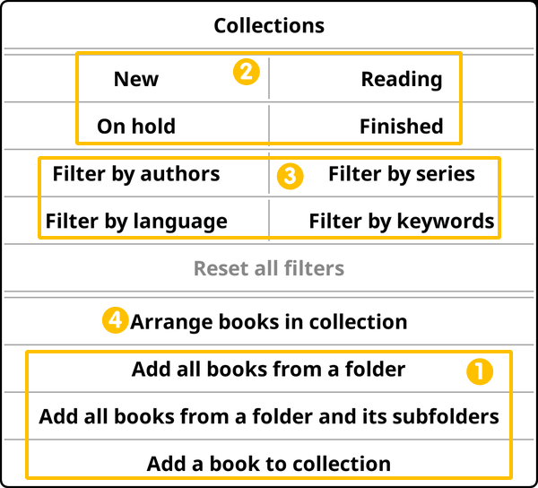На вищенаведеному зображення, Блок 1 показує параметри додавання книги. До цього меню можна перейти на екрані добірок через меню-«гамбургера»:
/ Добірки / Назва вашої добірки / - Додати усі книги з теки. Як випливає з назви, ця функція дозволяє вибрати теку, щоб додати усі книги з неї до цієї добірки. Зверніть увагу, що ця функція не додає книги з підтек вибраної теки. Наприклад, якщо обрати теку «Художня література», і в ній є підтеки з назвами «Наукова фантастика» та «Воєнна проза», то книги з цих підтек не будуть додані до добірки.
- Додати усі книги з теки та її підтек. Ця функція додасть усі підтеки вибраної теки. Будьте обережні з цією функцією, бо вона повністю закриватиметься під час додавання книг. Тож, якщо у вас багато рівнів вкладених підтек, книг може бути забагато, ніж ви думали.
- Додати книгу в добірку- Це базова функція, яка дозволяє додати одну книгу.
Вилучати книги з добірок можна на екранах Оглядач файлів, Історія та Добірки. На екранах Оглядач файлів та Історія затисніть книгу і виберіть Добірки.... Поруч з добірками, до яких додана ця книга, будуть позначки. Щоб вилучити книгу з добірки, потрібно зняти позначку дотиком на неї. В той же час, на екрані Добірки для вилучення книги з добірки потрібно затиснути книгу та вибрати пункт Вилучити з добірки.
Добірки можуть бути дуже переповненими, але KOReader дозволяє легко знаходити потрібні книги за допомогою функції фільтрації. На вищенаведеному зображенні видно варіанти фільтрації у Блоці 2 та Блоці 3. Блок 2 дозволяє фільтрувати за станом книги (нова, читаю, прочитана, до прочитання), а Поле 3 дозволяє фільтрувати за метаданими книги (автор, серія, мова, ключові слова). Також можна поєднати ці дві групи фільтрів, як у цьому прикладі: «Показати нові книги у цій колекції, написані Уласом Самчуком (Фільтрувати за авторами -> Улас Самчук), які я ще не почав читати (Фільтрувати за станом -> Нові).»
Метадані книги можна оновити затиснувши книгу в Оглядачі файлів та вибравши пункт меню Відомості про книгу. У зринаючому вікні можна затиснути будь-яке поле, щоб змінити наявні в ньому метадані, як от автор чи ключові слова. Для цього також можна використати програму Calibre, яка значно спрощує керування метаданими книг.
У добірках можна здійснювати два види пошуку: можна шукати вираз у назвах книг і метаданих або всередині текстів книг. Діалогове вікно пошуку можна відкрити тут:
/ Добірки / / Пошук добірокЯкщо бажаєте виконати пошук у текстах книг, пам’ятайте про таке:
- Цей тип пошуку доступний лише якщо відкрити Добірки з Оглядача файлів. Він недоступний з екрану читання.
- Цей пошук може бути повільним (близько 2 секунд на кожну книгу в добірці). Тому в переповнених добірках пошук може тривати довго.
Функція пошуку залежить від того, де ви знаходитесь у вікні добірок. Якщо ви знаходитесь у кореневому рівні, де можете бачити усі свої добірки, пошук буде виконано по усіх добірках. Якщо ж ви хочете шукати лише у певній добірці, необхідно торкнутися та вказати добірку. Це особливо важливо, якщо ви також шукаєте в текстах книг, оскільки це повільна операція.
Під час виконання пошуку результати будуть автоматично збережені як нова добірка.
Після створення добірок та додавання до них книг, ви, ймовірно, захочете синхронізувати їх з деякими теками. Наприклад, уявіть, що ви створили добірку Наукова фантастика. І у вашій бібліотеці також є тека НФ, де зберігаються науково-фантастичні книги. Якщо бажаєте, щоб добірка наукової фантастики при додаванні нового файлу до цієї теки оновлювалася автоматично, можна зробити це за допомогою функції під'єднаних тек добірок.
За допомогою цієї функції можна під'єднувати до своєї добірки одну чи декілька тек. Після цього KOReader (пере)сканує теки, щоб додати або вилучити книги з ваших добірок за таких умов:
- При під'єднанні теки до добірки
- При від'єднанні підтек раніше під'єднаної теки
- Під час показу добірки
- При запуску програми
Як під'єднати теку до добірки:

- Перейдіть до екрану Добірки, який показано на зображенні вище.
- Затисніть назву добірки, до якої потрібно під'єднати теки (1).
- Оберіть Під'єднати теки з випадаючого меню (2).
- Відкриється екран списку під'єднаних тек.
- Додайте теку, натиснувши значок + (плюс) у верхньому лівому куті екрана, що відкриє екран вибору тек.
- Якщо потрібно під'єднати більше тек – повторіть останній пункт.
Добірки з під'єднаними теками будуть мати значок теки, як видно на зображенні вище (3).
Можливо, потрібно буде також увімкнути синхронізацію підтек. . У кроці 4 вище, після відкриття екрану Список під'єднаних тек, можна затиснути теку, щоб увімкнути/вимкнути підтеки у зринаючому меню.
Як від'єднати теку від добірки:
- Перейдіть до екрану Добірки, який показано на зображенні вище.
- Затисніть назву добірки, до якої потрібно під'єднати теки (1).
- Оберіть Під'єднати теки з випадаючого меню (2).
- Відкриється екран списку під'єднаних тек.
- Затисніть теку, яку потрібно від’єднати, та виберіть у зринаючому меню Від’єднати теку.
Добірки можна використовувати з функцією профілів KOReader. Якщо ви ще не знаєте про профілі, ось опис з нашого розділу Профілі:
Профіль – це, по суті, набір дій, які можна запустити одним жестом (наче макрос).
Як приклад, уявіть, що під час читання певних типів книг ви завжди:
- Повертаєте екран у альбомну орієнтацію
- Збільшуєте розмір шрифту і контраст та
- Вмикаєте підсвічування екрану
За допомогою модуля профілів все це можна робити одночасно єдиним дотиком.
Профіль можна запускати власноруч, але справжню силу профілів можна розкрити завдяки функції автоматичного виконання. За допомогою цієї функції можна запускати профіль залежно від певних умов. Ось посилання на відповідний розділ посібника: Автоматичне виконання профілю. Тут буде пояснено лише одну умову запуску: Добірки.
По суті, можна створити кілька профілів і налаштувати їх автоматичне виконання за умови, що відкрита книга знаходиться у певній добірці. Ось кілька корисних прикладів:
- Ви можете додати всю свою манґу до добірки «Манґа» та створити профіль, щоб змінити напрямок гортання сторінок на гортання справа наліво, а також інвертувати дотики та протягування пальцем у відкритій з цієї добірки книзі манґи.
- Можна додати книгу мальописів до добірки, що може активувати профіль у якому діє зменшений інтервал повного оновлення екрана до кожної сторінки, що дозволить уникнути артефактів від попередніх сторінок на екрані.
- Можна додати до добірки проблемні PDF-файли, щоб під час їх відкриття разом з профілем активувалося примусове OCR (оптичне розпізнавання символів) або режим перекомпонування.
KOReader може перекомпоновувати PDF-документи (цю функцію знайти в нижньому меню під час читання документа з фіксованим макетом, на зразок PDF), щоб зробити їх зручнішими для читання на невеликих екранах е-читалок. Ще кращі результати дає конвертування файлів у гнучкіший формат EPUB, яке можна виконувати на комп'ютері.
Найпоширенішими програмами для конвертації або оптимізації документів для читання на мобільних пристроях є Calibre (орієнтований на EPUB, Kindle) та K2pdfopt (орієнтований на PDF).
Calibre може конвертувати документи між багатьма форматами. Він також має вбудований редактор, який дозволяє редагувати е-книги (та виправляти проблеми) у найпопулярніших форматах е-книг, EPUB та Kindle.
K2pdfopt оптимізує файли PDF/DJVU для е-читалок та смартфонів. Він добре працює з багатоколонковими файлами PDF/DJVU та може переформатувати текст навіть у сканованих PDF-файлах. Його також можна використовувати як загальний інструмент для копіювання, обрізання, зміни розміру та OCR-маніпуляцій з PDF.
OCRmyPDF – це програма командного рядка, яка може додавати оптично розпізнаний (OCR) текстовий шар до сканованих PDF-файлів, що містять лише зображення без текстового шару. Це дозволяє здійснювати пошук у тексті фалу та копіювати його текст. Це може бути особливо корисно для читання старих сканованих книг. Програма також може оптимізувати зображення, щоб зменшити розмір файлу.
SingleFile – це розширення для вебоглядачів Mozilla Firefox, Google Chrome та Microsoft Edge. Воно дозволяє зберігати вебсторінку з усіма ресурсами як єдиний файл .html (зображеннями, таблицями стилів, скриптами).
!!! ДЛЯ ДОСВІДЧЕНИХ
KOReader зберігає налаштування та додаткову пов'язану з кожною книгою інформацію у одній теці з файлом цієї книги. Ми називаємо це метаданими і вони включають:
- Візуальні налаштування для книги
- Поступ читання книги
- Виділення, закладки та нотатки
У нещодавній зміні ми додали нові способи зберігання цих метаданих, щоб вирішити певні проблеми, пов'язані із синхронізацією між пристроями. Наразі існує три різні способи зберігання метаданих, і кожен з них має свої переваги та недоліки.
Даний параметр можна змінити з цього меню:
/ Документ / Розташування метаданих книгиПОПЕРЕДЖЕННЯ Перш ніж вносити будь-які зміни, ми наполегливо рекомендуємо прочитати нижченаведений розділ, щоб зрозуміти відмінності та принцип роботи кожного способу. В іншому випадку існує ризик втрати налаштувань книги, поступу читання та анотацій.
/ Документ / Розташування метаданих книги: тека книгиЦей спосіб є типовим і він використовується під час нового встановлення KOReader. При використанні цього способу, коли ви копіюєте файл Чорний Ворон.epub на свій пристрій та відкриваєте його вперше, у тій же теці створюється тека з назвою Чорний Ворон.sdr. Ця тека містить файли з вашими налаштуваннями, анотацією та поступом читання цієї книги.
Переваги
- Для кожної книги можна власноруч створювати резервні копії налаштувань та відновлювати їх.
- При виконанні синхронізації тек чи резервному копіюванні за допомогою систем на зразок Syncthing або Dropbox, ваші налаштування будуть синхронізуватися разом з книгами.
- Можна перейменувати батьківську теки, де знаходиться книга і це не заплутає KOReader.
Недоліки
- Якщо реорганізовувати бібліотеку шляхом переміщення чи перейменування файлів книг або пов'язаних з ними тек .sdr поза межами Оглядача файлів KOReader, то метадані цих книг буде втрачено без будь-якого попередження.
- Теки .sdr будуть видимими під час перегляду тек бібліотеки за допомогою іншого файлового оглядача на пристрої або з комп’ютера, що може захаращувати перегляд тек на екрані.
/ Документ / Розташування метаданих книги: .../koreader/docsettingsЦей спосіб по своїй суті такий самий, як і вищеописаний типовий. Різниця полягає в тому, що в цьому способі усі теки .sdr замість тек поруч з файлами книг будуть знаходитися у єдиній теці, яка розташована всередині основної теки KOReader.
Переваги
- Теки книг .sdr будуть видимі та використовуватимуться лише KOReader. Вони не захаращуватимуть перегляд тек бібліотеки під час перегляду бібліотеки за допомогою іншого файлового оглядача або з комп’ютера.
Недоліки
- Якщо реорганізовувати бібліотеку шляхом переміщення чи перейменування тек бібліотеки, файлів книг або пов'язаних з ними тек .sdr поза межами Оглядача файлів KOReader, то метадані цих книг буде втрачено без будь-якого попередження.
- Оскільки метадані вашої книги не будуть у теках вашої бібліотеки, будь-яка синхронізація чи резервні копії вашої бібліотеки не включатимуть їх.
/ Документ / Розташування метаданих книги: .../koreader/hashdocsettingsЦей спосіб схожий на попередній, оскільки теки .sdr будуть знаходитися у внутрішній теці. Але цей спосіб розроблений для усунення недоліків попереднього. Зазвичай, якщо при перейменуванні файлу книги поза KOReader (за допомогою вбудованого файлового оглядачі чи з підключеного комп’ютера), назва пов'язаної з нею теки .sdr більше не збігатиметься і метадані для цієї книги будуть втрачені. Якщо для операцій з файлами використовувати лише Оглядач файлів KOReader для операцій з файлами, тоді такої проблеми не виникає, що KOReader автоматично перейменовує пов'язану теку з метаданими одночасно з перейменуванням файлу книги.
У цьому способі ХЕШОВАНІ теки .sdr не ідентифікуються розташуванням чи назвою файлу книги. Натомість, для пов'язування книг з їхніми налаштуваннями використовується частковий хеш MD5. Цей хеш використовується як унікальний ідентифікатор книги та розраховується на основі вмісту файлу книги. Той самий хеш також використовується для найменування її теки .sdr.
Переваги
- Теки .sdr книг будуть видимі та використовуватимуться лише KOReader. Вони не захаращуватимуть перегляд тек бібліотеки під час їх за допомогою іншого файлового оглядача чи з комп’ютера.
- Можна перейменовувати, переміщувати та копіювати книги за допомогою іншого файлового оглядача чи з комп’ютера. KOReader все одно розпізнає книги після цих операцій.
- У цьому способі KOReader пов’язує ту саму теку .sdr з усіма копіями книги, навіть якщо ці копії знаходяться на різних пристроях. Наприклад, якщо ви використовуєте Syncthing, цей спосіб дозволяє синхронізувати теку /hashdocsettings разом з файлами книг на багатьох пристроях, на яких встановлено KOReader. Незважаючи на різні відносні шляхи до цих книг на кожному пристрої, ви все одно можете синхронізувати свої анотації та поступ читання на усіх своїх пристроях. Це неможливо за допомогою інших способів зберігання метаданих і налаштувань книг.
Недоліки
- Будь-які операції, що безпосередньо змінюють файл (наприклад, запис виділень у PDF-файли чи завантаження з Calibre), призведуть до зміни його MD5 ID зміниться (на відміну від перейменування чи переміщення, які не шкідливі для цього способу). У цьому випадку KOReader не зможе розпізнати книгу, тому такі книги втратять свої метадані.
- Обчислення ідентифікаторів файлів може уповільнити навігацію в Оглядачі файлів під час перегляду більших тек.
Керувати KOReader можна багатьма типами жестів. Деякі жести мають обмеження щодо того, в якій частині екрана вони можуть бути виконані та які напрямки проведення підтримуються. Ці обмеження описані нижче.
ДОТИК / ПОДВІЙНИЙ ДОТИК Один або два дотики ОДНИМ пальцем ПРАЦЮЄ: будь-де на екрані |
|
|
ЗАТИСКАННЯ Один дотик і утримання ОДНИМ пальцем ПРАЦЮЄ: тільки в кутах екрану |
|
| 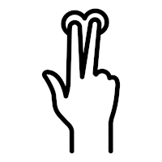 |
ДОТИК ДВОМА ПАЛЬЦЯМИ ПРАЦЮЄ: в кутах екрана (ГОРИЗОНТАЛЬНО та ВЕРТИКАЛЬНО) і будь-де, крім кутів (ПО ДІАГОНАЛІ) ПРАЦЮЄ: тільки в кутах екрану |
РОЗВЕДЕННЯ І СТЯГУВАННЯ Так само, як збільшення та зменшення на телефоні чи планшеті. ПРАЦЮЄ: будь-де на екрані ІНФОРМАЦІЯ На деяких пристроях цей жест може працювати ненадійно. Якщо таке трапилося, оберіть інший тип жесту. |
|
| 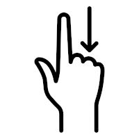 | ПРОВЕДЕННЯ ОДНИМ ПАЛЬЦЕМ Проведення ОДНИМ пальцем ПРАЦЮЄ: в кутах екрану (ГОРИЗОНТАЛЬНО та ВЕРТИКАЛЬНО) і будь-де, крім кутів (ПО ДІАГОНАЛІ) |
ПРОВЕДЕННЯ ДВОМА ПАЛЬЦЯМИ Проведення по екрану ДВОМА пальцями водночас ПРАЦЮЄ: будь-де на екрані |
|
МУЛЬТИЖЕСТ Це проведення зі зміною напрямку руху пальця по екрану. Наприклад, наче малювання букви U (ВНИЗ-ПРАВОРУЧ-ВГОРУ) ПРАЦЮЄ: будь-де на екрані |
|
Піктограми від Econceptive з Noun Project |
У цій таблиці наведено жести, які типово налаштовані у KOReader. Їх можна змінити відповідно до своїх уподобань за допомогою:
/ Менеджер жестівВерхній лівий кут Перемкнути гортання сторінок
Верхній правий кут Додати/зняти закладку
Діагонально протилежні кути водночас > Зробити знімок екрана
↓ ↑ - Побіжний перегляд документа
↑ ← - Закладки
↑ ↓ ↑ - Попередній розділ
Довге проведення по діагоналі > Зробити знімок екрану
– Назад до попереднього місця
– Перейти до найновішої закладки
– Проглянути документ
– Закладки
– Зміст
– Показати діалог підсвічування
– Перемкнути перекомпонування
– Історія
– Стан книги
– Перейти до сторінки
– Назад
– Попередній розділ
– Наступний розділ
– Відкрити попередній документ
– Обране
Це список усіх дій, виконання яких можна призначити на жест за допомогою меню Менеджер жестів. Щоб швидко знайти в цьому списку певну дію, можна скористатися функцією пошуку вебоглядача (зазвичай Ctrl+F). Ці дії також можна використовувати у власному Швидкому меню. Додаткова інформація про це наведена у відповідному розділі цього посібника.
- Оглядач файлів
- Запустити USB-сховище
- Сон
- Пошук в історії
- Обране
- Добірки
- Пошук добірок
- Пошук у словнику
- Пошук у Вікіпедії
- Показати меню
- Пошук в меню
- Відкрити наступний файл у теці останньої книги
- Відкрити попередній файл у теці останньої книги
- Файл нотатника
- Знімок екрану
- Показувати ефемериди
- Пошук метаданих Calibre
- Переглянути всі мітки calibre
- Переглянути усі серії calibre
- Переглянути усіх авторів calibre
- Переглянути усі назви calibre
- Підключення до Calibre бездротовою мережею
- Відключення від Calibre бездротовою мережею
- Статистика читання: перемкнути
- Статистика читання: показати поступ
- Статистика читання: показати проміжок часу
- Статистика читання: показати календар
- Статистика читання: показати хронологію за сьогодні
- Статистика читання: синхронізувати
- Текстовий редактор: відкрити останній файл
- Відкрити конструктор словника
- Пошук у Wallabag
- Вивантаження черги Wallabag
- Вивантаження статусів Wallabag
- Вийти з заставки
- Перемкнути сервер SSH
- Подання календаря статистики
- Обертання
- Змінити орієнтацію
- Вийти з заставки сну
- Перезапустити KOReader
- Вийти з KOReader
- Перемкнути затискання в кутках
- Увімкнути сенсорний ввід
- Вимкнути сенсорний ввід
- Перемкнути сенсорний ввід
- Інвертувати кнопки гортання сторінок
- Поворот екрану
- Перемкнути орієнтацію
- Зворотне обертання
- Обернути на 90° за годинниковою стрілкою
- Обернути на 90° проти годинникової стрілки
- Перемкнути повноекранний режим
- Показати відомості про мережу
- Статистика акумулятора
- Статистика системи
- Емулятор терміналу
- Статистика використання акумулятора
- Призупинити
- Перезавантажити пристрій
- Вимкнути пристрій
- Перемкнути повтор натиснення кнопок
- Перемкнути акселерометр
- Повне оновлення екрана
- Вимкнути Wi-Fi
- Частота повного оновлення (не в нічному режимі)
- Показати діалог підсвічування
- Перемкнути підсвічування
- Вказати яскравість підсвічування
- Збільшити яскравість підсвічування
- Зменшити яскравість підсвічування
- Вказати температуру підсвічування
- Збільшити температуру підсвічування
- Вказати шрифт
- Перемкнути нічний режим
- Встановити нічний режим
- Вказати розмір шрифту
- Частота повного оновлення (завжди)
- Частота повного оновлення (не нічний режим)
- Повна частота оновлення (нічний режим)
- Завжди оновлювати на межі розділів
- Перемкнути оновлення на межі розділів
- Ніколи не оновлювати на 2-й стор. розділу
- Перемкнути оновлення на 2-й сторінці розділу
- Завжди блимати на сторінках з зображеннями
- Синхронізувати В/Н поля
- Автотеплоту підсвічування вимкнено
- Автозміна теплоти за положенням сонця
- Автозміна теплоти барв за розкладом
- Автозміна теплоти ближче до півночі
- Автозміна теплоти ближче до полудня
- Циклічна зміна автотеплоти у різних режимах
- Гарнітура шрифту
- Збільшити розмір шрифту
- Зменшити розмір шрифту
- Розмір шрифту
- Проміжки між словами
- Розтягування слів
- Контраст
- Товщина шрифту
- Хінтинг шрифту
- Кернінг шрифту
- Два стовпці
- Ліве/праве поля
- Синхрон. верх./ниж. полів
- Верхнє поле
- Нижнє поле
- Режим перегляду (безперервно)
- Режим візуалізації
- Масштабування
- Міжрядкові проміжки
- Альтернативна панель стану
- Вбудований стиль
- Вбудовані шрифти
- Масштабування зображення
- Інвертувати зображення
- Вказати режим перегляду
- Сортувати за
- Зворотне сортування
- Теки й файли перемішані
- Показати меню плюс
- Перемкнути режим вибору
- Оновити вміст
- Ярлики тек
- Пошук файлів
- Результати останнього пошуку файлів
- На теку вгору
- Перейти до сторінки
- Назад
- Експортувати усі нотатки з усіх книг в історії
- Каталог OPDS
- Показати нижнє меню
- Перемкнути панель стану
- Перемкнути смугу поступу читання розділу
- Попередня розділ
- Наступний розділ
- Перша сторінка
- Пошук закладки
- Випадкова сторінка
- Гортання сторінок
- Перейти до сторінки
- Проглянути документ
- Опис книги
- Наступна закладка
- Перекласти поточну сторінку
- Остання закладка
- Найпізніша закладка
- Назад
- Назад до попереднього місця
- Циклічна дія виділення
- Перейти за найближчим посиланням
- Перейти за найближчим внутрішнім посиланням
- Додати поточне місце до історії
- Статистика книги
- Пошук по всьому тексту
- Результати останнього пошуку по всьому тексту
- Зміст
- Мапа книги
- Мапа книги (огляд)
- Оглядач сторінок
- Закладки
- Пошук закладок
- Додати/зняти закладку
- Стан книги
- Відомості про книгу
- Режим масштабування
- Обкладинка книги
- Змінити масштаб панелі
- Інвертувати гортання сторінок дотиком і протягуванням
- Змінити напрямок гортання сторінок
- Перемкнути власний зміст
- Перемкнути власні приховані частини
- Вказати дію виділення
- Допасування
- Циклічний стиль виділення
- Зберегти метадані книги
- Експорт анотацій
- Експортувати усі нотатки з цієї книги
- Експортувати усі нотатки з усіх книг в історії
- Перемістити поточну книгу до архіву
- Статистика читання: поточна книга
- Надіслати поступ з цього пристрою
- Отримати поступ з інших пристроїв
- Перекомпонувати
- Перемкнути гортання закладок
- Перемкнути перекомпонування
- Увімк./вимк. дитеринг
- Змінити коефіцієнт масштабування
- Перемкнути масштаб панелі
- Обтинання сторінки
- Поле
- Горизонтальне перекриття
- Вертикальне перекриття
- Допасувати
- Збільшити до
- К-сть стовпців/рядків, на яку поділити сторінку
- Коефіцієнт масштабування
- Напрямок
- Режим перегляду
- Розрив сторінки
- Міжрядкові проміжки
- Вирівнювання
- Розмір шрифту
- Змінити розмір шрифту
- Проміжок між словами
- Перекомпонування
- Контраст
- Очищення тла
- Якість візуалізації
- Мова документа
- Примусове OCR
- Напрямок письма
- Стовпці документа
- Корекція нахилу
Якщо у вас є пристрій із клавіатурою, наприклад Kindle 2 та Kindle 3, включаючи Bluetooth-клавіатури та емулятори, тоді для керування KOReader можна використовувати клавіші клавіатури, кнопки пристрою та комбінації клавіш. Також підтримується Kindle 4, якому бракує повноцінної клавіатури, але все ще достатньо кнопок для функціональності в цьому контексті. На цих пристроях KOReader активує додаткове меню під назвою Комбінації клавіш, до якого можна отримати доступ тут:
/ Навігація / Фізичні кнопки / Комбінації клавішЦе меню дуже схоже до інтерфейсу Менеджера жестів. У цьому меню:
- Можна побачити комбінації клавіш, доступні на поточному пристрої
- Можна побачити наперед визначені дії для деяких комбінацій клавіш
- Можна призначити дії доступним комбінаціям клавіш
Усі дії в Менеджері жестів також доступні для призначення комбінацій клавіш. Це означає, що за допомогою цих комбінацій клавіш можна керувати майже усіма функціями KOReader.
У нижченаведеній таблиці можна побачити призначення клавіш та типові комбінацій клавіш:
ІНФОРМАЦІЯ Універсальна комбінація клавіш, щоб зробити знімок екрану – це Alt + Shift + G. Вона доступна на усіх екранах, у всіх режимах та на всіх платформах. На Kindle 4 – це кнопки Клавіатура + Меню.
ІНФОРМАЦІЯ На Kindle 4 клавіша Shift у нижченаведеній таблиці відповідає кнопці Keyboard. Отже, комбінації клавіш Shift + Вгору/Вниз/Вліво/Вправо відповідають комбінаціям клавіш кнопка Клавіатура + Вгору/Вниз/Вліво/Вправо на Kindle 4.
Режим оглядача файлів | |
| Відкрити верхнє меню | F1 |
| Перейти до домівки | Home |
| Перемістити до списку файлів | Вгору / Вниз |
| Відкрити вибрану книгу | Enter |
| Вийти з програми | Esc |
Режим читання | |
| Відкрити верхнє меню | F1 |
| Відкрити нижнє меню | Enter |
| Назад/вийти з програми | Esc |
| Закладки | Shift + Вліво |
| Додати/зняти закладку | Shift + Вправо |
| Пошук у словнику | Ctrl + D (Alt + D на Kindle) |
| Пошук у Вікіпедії | Ctrl + W |
| Пошук по всьому тексту | Ctrl + S |
| Пошук файлів | Ctrl + F |
Посилання | |
| Вибрати наступне посилання на поточній сторінці | Tab |
| Вибрати попереднє посилання на поточній сторінці | Shift + Tab |
| Відкрити вибране на сторінці посилання | Enter |
Оглядач зображень (затиснення зображення) | |
| Збільшити | PgDn |
| Зменшити | PgUp |
Виділення | |
| Увійти в режим виділення | H |
| Почати/закінчити виділення | Enter |
| Переміщувати індикатор виділення | Вліво/Вправо Вгору/Вниз |
| Переміщувати індикатор швидше | Shift + Вліво/Вправо/Вгору/Вниз |
| Вийти з режиму виділення | Esc |
Навігація в книзі | |
| Перегорнути сторінку | Вліво-Вправо / Вгору-Вниз PgUp-PgDn |
| Зміст | Shift + Вгору |
| Мапа книги | Shift + Вниз |
| Перейти на початок | 1 |
| Перейти до 11% книги | 2 |
| Перейти до 22% книги | 3 |
| Перейти до 33% книги | 4 |
| Перейти до 44% книги | 5 |
| Перейти до 55% книги | 6 |
| Перейти до 66% книги | 7 |
| Перейти до 77% книги | 8 |
| Перейти до 88% книги | 9 |
| Перейти до кінця книги | 0 |
У діалозі проглядання книги | |
| Перейти на початок | Q |
| Перейти до 11% книги | W |
| Перейти до 22% книги | E |
| Перейти до 33% книги | R |
| Перейти до 44% книги | T |
| Перейти до 55% книги | Y |
| Перейти до 66% книги | U |
| Перейти до 77% книги | I |
| Перейти до 88% книги | O |
| Перейти до кінця книги | P |
Масштабування сторінки Тільки для PDF, DJVU та зображень | |
| Масштабувати, щоб сторінка помістилась повністю | A |
| Масштабувати, щоб припасувати сторінку по ширині | S |
| Масштабувати, щоб припасувати сторінку по висоті | D |
| Масштабувати, щоб помістився весь вміст | Shift + A |
| Масштабувати, щоб припасувати вміст по ширині | Shift + S |
| Масштабувати, щоб припасувати вміст по висоті | Shift + D |
Швидке меню – це нова функція KOReader, яка дозволяє швидко отримати доступ до персоналізованого меню, як на нижченаведеному зображенні. Відкриття цього меню можна призначити на жест та отримати до нього доступ одним рухом пальця. Можна мати меню навіть довше за екран, бо його можна прокручувати.
Будь-яку дію, яка може виконуватися жестом, можна додати до Швидкого меню. Його переваги:
- Не потрібно запам'ятовувати багато жестів для виконання кожної дії.
- Деякі рідко виконувані дії можуть не вартувати призначення на них окремого жесту, але знайти її в дереві меню дуже складно. Замість цього можна додати такі рідковживані функції до цього меню.
- При встановленні KOReader на пристрій родича або друга, які гірше володіють електронними пристроями, можна додати до цього меню їхні улюблені дії, тож їм навіть не доведеться заглиблюватися у дерево меню під час користування KOReader.
Приклад швидкого меню:
Є два способи створити Швидке меню. Простий та розширений. Якщо вам потрібне тільки меню, простого способу буде достатньо. Якщо ж бажаєте, щоб за різними жестами відкривалися різні меню, тоді потрібно скористатися розширеним способом. Іншою перевагою розширеного способу є те, що якщо ви забажаєте використовувати інший жест для відкриття цього меню, то зможете просто перепризначити відкриття цього меню на інший жест. Якщо ж при використанні простого способу ви забажаєте відкривати меню іншим жестом, доведеться повторно створювати швидке меню для нового жесту.
- Перейдіть до Менеджера жестів таким чином:
ВЕРХНЄ МЕНЮ / / Дотики та жести / Менеджер жестів
- Визначтесь який жест повинен відкривати швидке меню і натисніть на нього.
- Оберіть дії (пункти меню), які повинні бути присутніми у швидкому меню з меню налаштування жестів. Звичайно, можна одразу вибрати декілька дій.
- Після того, як оберете усі дії для відображення у швидкому меню, позначте пункт Показувати як швидке меню, який знаходиться на другій сторінці меню, як це показано на картинці нижче.
- Пункти швидкого меню можна впорядкувати за допомогою функції Сортувати, яка розміщена трохи нижче.
Тепер можна відкрити швидке меню раніше вибраним жестом. Якщо бажаєте змінити пункти цього меню, відкрийте сторінку жестів і додайте/вилучіть пункти.
Швидке меню по своїй суті є профілем, який відображається як меню. Тож спершу варто прочитати про профілі. Якщо вам вже відомо як використовувати профілі, можете продовжувати читання цього розділу, інакше перейдіть до розділу Профілі (наступний після цього), створіть профіль з якимись елементами і поверніться суди.
Вважатимемо, що ви вже створити профіль, як описано в наступному розділі. Тепер потрібно перетворити профіль на Швидке меню.
1. Перейдіть до новоствореного профілю і увімкніть Показувати у списку дій (показано на зображенні нижче). Це зробить ваш профіль видимим у Менеджері жестів. Також увімкніть Показати як швидке меню (показано на зображенні нижче), після чого, замість непомітного виконання, ваш профіль буде показано як меню.
2. Тепер потрібно забезпечити спосіб доступу до швидкого меню. Перейдіть до Менеджера жестів і оберіть зі списку жест, який буде відкривати швидке меню. Скажімо, потрібно, щоб швидке меню відкривалося дотиком до кута екрану. Тепер торкніться Дотик в куті, а потім оберіть Нижній лівий. Тепер торкніться Загальне і перейдіть на наступну сторінку. Ви виявите свій профіль як Профіль Х, де «Х» буде назвою, яку ви вказали для цього профілю. Торкніться квадратика біля нього, щоб призначити жест для цього профілю.
Після усіх цих кроків, ваше швидке меню повинно відкриватися після дотику в нижньому лівому куті екрану. Це меню можна змінювати перейшовши до сторінки його профілю, на якій можна додавати і вилучати документи. Також там є пункт Сортувати, за допомогою якого можна змінити черговість елементів меню.
Як вже було сказано, Швидке меню по своїй суті є профілем. Це означає, що можна створити більше одного швидкого меню. Щоб створити додаткове меню, потрібно створити інший профіль і повторити усі вищевказані кроки.
Зазвичай після вибору пункту в швидкому меню воно зникає з екрану. Інколи вам може знадобитися, щоб після вибору одного з елементів меню не зникало. Це дозволяє вам пристосувати налаштування, як на цьому зразку:
- Поступові зміни, як от збільшення/зменшення яскравості підсвічування екрану, збільшення/зменшення розміру шрифту, перехід до попередньої сторінки чи розділу та інше.
- Група параметрів, які ви активуєте послідовно (але не одночасно), як от увімкнення Wi-Fi, після чого запуск сервера SSH
Якщо ви маєте швидке меню, створене у Менеджері жестів (простий спосіб), увімкнути цю функцію можна з наступного меню:
/ Дотики та жести / Менеджер жестів / «ваш жест швидкого меню» / Не закривати швидке менюАбо ж, якщо ви маєте швидке меню створене На основі профілю – (Розширений спосіб), з цього меню:
/ Профілі / «ваш профіль швидкого меню» / Редагувати дії / Не закривати швидке менюЗазвичай швидке меню відкривається по центру екрану. Якщо ви користуєтеся пристроєм однією рукою, можна налаштувати, щоб швидке меню відкривалося на місці екрану, де був виконаний жест. Таким чином меню з'являтиметься ближче до пальця і ним буде зручніше користуватися. Щоб скористатися такою можливістю, увімкніть цей параметр:
/ Дотики та жести / Менеджер жестів / «ваш жест швидкого меню» / Прив'язати швидке меню до позиції жестуПо своїй суті профілі є набором жестів, який можна запустити одним дотиком (на зразок макросу).
Як приклад, уявіть, що під час читання певних типів книг ви завжди:
- Повертаєте екран у альбомну орієнтацію
- Збільшуєте розмір шрифту і контраст та
- Вмикаєте підсвічування екрану
За допомогою модуля профілів все це можна робити одночасно єдиним дотиком.
Щоб створити профіль спершу переконайтеся, що модуль Профілі активований. Якщо ви не бачите його тут:
/ Профіліце значить, що модуль не активований тут:
/ Більше інструментів / Керування модулямиУ меню Профілі натисніть Новий і вкажіть його назву. Тепер ваш профіль повинен з'явитися в меню. Торкніться до нього і відкриється вікно з лівого боку. Також з цього меню можна видалити, перейменувати або дублювати профіль.
Після дотику до пункту меню Редагувати дії відкриється меню праворуч. Це те саме меню, що й меню вибору жесту і там наявні дії з різних категорій. Це означає, що за допомогою профілю ви можете виконати жестом будь-яку дію.
Тепер можна обрати кілька елементів з усіх цих категорій. Вибрані тут дії будуть виконані під час активації цього профілю.
Існує багато способів активації профілю:
- Профіль можна активувати затиснувши його назву у цьому ж меню Профілі
- Профіль також можна активувати жестом. Для цього потрібно у меню профілю увімкнути Показати у списку дій. Тепер його можна вибрати тут:
ВЕРХНЄ МЕНЮ / / Дотики та жести / Менеджер жестів / «БУДЬ-ЯКИЙ ЖЕСТ» / Загальне / Профіль «назва вашого профілю»
- Профіль можна також активувати автоматично, залежно від певних умов. Як використовувати цю функцію описано у наступному підрозділі.
Як вже було сказано, профіль можна запустити власноруч, але справжню силу профілів можна розкрити завдяки функції автоматичного виконання. За допомогою цієї функції можна запустити профіль залежно від певних умов та підумов:
| Дія-активатор | Підумови |
| При запуску KOReader Запускати цей профіль щоразу при запуску KOReader. Зверніть увагу, що це можливо лише тоді, коли KOReader запускається з Оглядача файлів чи останнього файлу. | - |
| При пробудженні Запускати цей профіль щоразу при пробудженні пристрою | - |
| При повороті Запускати цей профіль при повороті екрану до вибраного положення чи положень. Приклади: Змінити макет на два стовпці коли пристрій повертається в альбомну орієнтацію. Активувати нічний режим коли пристрій повертається на 180°. |
|
| При показі теки Запускати цей профіль при вході до цієї теки у Оглядачі файлів. Цей активатор можна використовувати для зміни режиму відображення Оглядача файлів. Наприклад, при вході до певної теки можна змінити режим відображення з мозаїчного на детальний. |
|
| При відкритті книги
Цей активатор виконується при відкритті книгу (за бажанням) у поєднанні з певними підумовами. Перші 4 підумови збігаються за допомогою оператора АБО, тому будь-якої з них достатньо для запуску виконання профілю. |
|
| При закритті книги
Ця функція така ж, як вищенаведена, але вона спрацьовує при закритті книги. Нею можна користуватися, наприклад, для увімкнення/вимкнення статистики читання під час відкриття певних документів, щоб вони не враховувалися у статистиці. |
|
Приклади профілів:
Ось кілька прикладів профілів від наших розробників, які дадуть уявлення про використання цієї потужної функції KOReader. Приклади також включають умови автоматичного виконання та функції добірок:
- Увімкнути режим двох стовпців при перевертанні пристрою в альбомну орієнтацію.
- Увімкнути нічний режим при перевертанні пристрою догори дриґом.
- Додайте всю свою манґу до добірки. Потім створіть профіль, який змінює напрямок гортання сторінок на гортання справа наліво, а також інвертує дотики та протягування пальцем у відкритій з цієї добірки книзі манґи.
- Додайте книги мальописів до добірки, що може активувати профіль у якому діє зменшений до кожної сторінки інтервал повного оновлення екрану, що дозволить уникнути артефактів від попередніх сторінок на екрані.
- Активувати профіль для пристосування гарнітури шрифту, розміру шрифту та встановлення режиму в два стовпці під час першого відкриття файлу з теки Періодичні видання.
- Додайте проблемні PDF-файли до добірки, щоб під час їх відкриття разом з профілем активувалося примусове OCR (оптичне розпізнавання символів) або режим перекомпонування.
- Перемикати режим відображення (обкладинки, детальний список тощо) Оглядача файлів під час відкриття певних тек.
- Вимкнути статистику читання під час відкриття книги з добірки Довідкова література та знову увімкнути статистику при закритті книги.
- Якщо ви відкриєте для себе підлаштування стилів у менеджері жестів, то зможете створити профіль, щоб увімкнути/вимкнути їх залежно від певних умов. Наприклад, можна активувати профіль «вимкнути стилі видавця ТА застосувати мої налаштування стилю користувача» на основі розташування/добірки книги або за ключовим словом у метаданих книги. Докладну інформацію див. у розділі Налаштування стилю посібника.
!!! ДЛЯ ДОСВІДЧЕНИХ
У KOReader є набір дій/налаштувань і цей набір можна створити двома способами:
- Як профіль (який описано як Розширений спосіб, параметри якого зберігаються у settings/profiles.lua)
- Як список дій, призначених жесту (що пояснюється як простий спосіб та зберігається у settings/gestures.lua)
Цей набір також можна виконати двома різними способами:
- Застосування кожної дії у (впорядкованому) порядку під час активації (як профіль)
- Відображення його як Швидке меню
Додавання/вилучення дій з набору й увімкнення/сортування Швидкого меню здійснюється за допомогою того самого меню дій. Різниця полягає лише в тому, що у Менеджері жестів меню дій має на два пункти більше («Пропустити»). Саме тому пункти Показати як швидке меню та Сортувати розміщено на другій сторінці.
ІНФОРМАЦІЯ Можна створити резервну копію та перенести свої профілі на інший пристрій. Див. розділ Резервне копіювання налаштувань KOReader.
Модулі – це невеликі програми KOReader, схожі на доповнення вебоглядача, які розширюють можливості базової програми. KOReader має три категорії плагінів:
Внутрішні модулі є частиною ядра програми.
- Вони доступні просто з меню модулів KOReader.
- Їх не потрібно встановлювати. Достатньо просто увімкнути з меню.
- Їх перевіряли розробники програми, тому вони вважаються безпечними.
- Вони автоматично оновлюються при оновленні KOReader.
Їх можна увімкнути/вимкнути тут:
/ Більше інструментів / Керування модулями!!! ДЛЯ ДОСВІДЧЕНИХ
До цієї категорії входять неофіційні модулі, які не є частиною основної концепції KOReader.
- Їх необхідно встановлювати власноруч, а потім активувати з меню керування модулями.
- Їх потрібно оновлювати власноруч.
- Вони перевіряються розробниками KOReader під час додавання до сховища, тому вважаються безпечними.
Їх можна завантажити з цієї сторінки. Зазвичай, щоб встановити такий модуль, потрібно завантажити його теку з файлами і скопіювати до теки /koreader/plugins на своєму пристрої. Проте, ознайомтеся з сторінкою модуля, бо там можуть бути додаткові інструкції.
!!! ДЛЯ ДОСВІДЧЕНИХ
Це модулі, які розробляються повністю незалежно від команди розробників KOReader.
- Їх необхідно встановлювати власноруч, а потім активувати з меню керування модулями.
- Їх потрібно оновлювати власноруч.
- Вони НЕ перевіряються розробниками KOReader, тому можуть існувати ризики їх використання.
Кілька відомих прикладів зовнішніх модулів та посилання на їхні сторінки на GitHub:
- AskGPT – модуль, який дозволяє ставити запитання до ChatGPT щодо частин книги. Цей модуль можна також використовувати для спрощення, пояснення, обговорення або перекладу тексту іншими мовами.
- Assistant: AI Helper – відгалуження (fork) вищезгаданого модуля з розширеними функціями на зразок кількох постачальників ШІ та вбудовані/користувацькі запити.
- Anki – модуль KOReader, що дозволяє генерувати картки Anki (програмне забезпечення з відкритим кодом для карток) для слів, знайдених у внутрішньому словнику.
- Zotero – модуль, що дозволяє переглядати ваші колекції Zotero (програмне забезпечення з відкритим кодом для керування посиланнями) з KOReader.
- Syncthing – модуль, що дозволяє запускати програму синхронізації файлів між одноранговими пристроями Syncthing на KOReader (перевірено лише на пристроях Kobo, але, за словами автора, може працювати й на інших пристроях). Це дозволяє автоматично синхронізувати файли між вашою е-читалкою та комп’ютером/телефоном.
За цим посиланням можна перейти на сторінку пошуку на Github і там знайти більше проектів модулів KOReader.
Автопідсвічування – автоматично перемикає рівень підсвічування екрану відповідно до рівня освітленості навколишнього середовища (працює тільки на Kindle Voyage та Oasis)
Автотеплота підсвічування і нічний режим – дозволяє змінювати температуру підсвічування екрану пристроїв з жовтим/жовтогарячим кольором підсвічування та автоматично перемикатися на нічний режим згідно з розкладом
Автоматичне енергозаощадження – переводить пристрій у режим очікування або вимикає його після невикористання протягом вказаного проміжку часу
Автопризупинення - призупиняє роботу пристрою після обраного періоду бездіяльності (доступно на всіх пристроях з е-чорнилами, крім Android)
Автоперегортання – автоматично перегортає сторінку після певного проміжку часу
Робота у тлі – служба для інших модулів, яка дозволяє регулярно виконувати завдання у тлі (без показу процесу виконання).
Статистика акумулятора – збирає та показує статистику про використання акумулятора вашого пристрою
Ярлики книг – дозволяє додати ярлик книги на жест
Calibre – дозволяє надсилати документи з вашої бібліотеки Calibre прямо на пристрій з KOReader через з'єднання Wi-Fi. Дізнатися як можна сторінці вікі.
Оглядач обкладинок – дозволяє перемикати режими відображення обкладинок для оглядача файлів та історії
Обкладинка – зберігає зображення обкладинки поточної книги як файл (доступно на пристроях Android, PocketBook, reMarkable)
Експорт виділеного – експортує виділені уривки і нотатки до локального файлу або до Joplin (додаток для нотаток)
Тренувальні картки (Flashcard trainer) – показує картки для вивчення і запам'ятовування, використовуючи інтервальний повтор (SM2) виділених фрагментів з бібліотеки
Жести – забезпечує підтримку жестів для KOReader
HTTP-інспектор – дозволяє керувати своїм пристроєм з іншого пристрою через Wi-Fi. Див. нижче для отримання додаткової інформації
Підтримка японської – підтримка японської мови для KOReader, яка розширює вбудований словник і систему вибору
Підтримувати роботу – підтримує роботу пристрою, щоб запобігти автоматичному відключенню Wi-Fi
Перемістити до архіву – переміщує поточний документ до архівної теки
Завантажувач новин – отримує через RSS та Atom записи новин і зберігає їх як файли HTML. Докладніше читайте на сторінці вікі.
OPDS – дозволяє завантажувати книги з каталогів сайтів
Розширення сприйняття – дозволяє використовувати периферійний зір для швидшого читання. Подивіться це відео на YouTube, щоб дізнатися, як це працює: Як потроїти швидкість читання за 20 хвилин (Tim Ferriss; англ. мовою)
Профілі – дозволяє комбінувати декілька налаштувань, щоб створити профілі між якими можна перемикатися
Синхронізація поступу – синхронізує дані про поступ вашого читання між різними пристроями з KOReader. Як це робиться читайте на сторінці вікі.
QR з буфера обміну – генерує QR-код з вмісту буфера обміну
Таймер читання – таймер зворотного відліку, який показує повідомлення через заданий користувачем час
Статистика читання – обчислює статистику сеансу читання та швидкість читання для використання цих даних під час оцінки часу, який потрібен для завершення читання розділу або книги
SSH – дозволяє забезпечити доступ до пристрою через протокол SSH. Таким чином на пристрій можна зайти за допомогою програм FTP або навіть файлового менеджера, якщо він це підтримує. Докладніше читайте на сторінці вікі.
Статистика системи - показує відомості про процесор, оперативну пам'ять і акумулятор пристрою, яку можна побачити тут:
/ Довідка / Статистика системиЕмулятор терміналу – запускає на пристрої оболонку (командний рядок), за допомогою якої можна запускати повноцінні термінальні застосунки
Текстовий редактор – текстовий редактор для створення і редагування простих текстових файлів
Синхронізація часу – синхронізує час пристрою з серверами точного часу (NTP)
Точні підлаштування документа – дозволяє виконати детальні підлаштування документа перед завантаженням документа на основі зовнішніх чинників
Wallabag – завантажує останні статті з сервера Wallabag як окремі файли EPUB. Докладніше читайте на сторінці вікі.
!!! ДЛЯ ДОСВІДЧЕНИХ
Цей модуль дозволяє керувати своїм пристроєм з іншого пристрою через Wi-Fi. Він працює, запускаючи на пристрої простий HTTP-сервер, який обслуговує сторінку з елементами керування KOReader. До цієї сторінки можна отримати доступ через мережу Wi-Fi та керувати своїм пристроєм для читання. Але під час використання цього модуля майте на увазі такі моменти:
- Це експериментальний модуль, тож використовуйте його на власний ризик
- Цей модуль типово увімкнено, але сервер типово НЕ запускається. Запустити його можна власноруч або налаштувати автоматичний запуск.
- Цей модуль слід запускати лише в перевірених мережах, оскільки він дуже небезпечний (без HTTPS, без обмежень доступу, без автентифікації)
З прикладом використання цього модуля можна ознайомитися на форумі MobileRead
!!! ДЛЯ ДОСВІДЧЕНИХ
Користувацькі латки – це малі файли, написані мовою Lua. Вони можуть змінювати функціональність KOReader не вносячи постійні зміни у файли програми. Вони можуть бути написані розробниками, іншими користувачами чи самостійно (якщо ви володієте необхідними глибокими знаннями про внутрішню структуру KOReader).
Актуальний список користувацьких латок можна зайти у нашій вікі та у списку обговорень GitHub, позначеному теґом User patch available (Доступна користувацька латка). Переглянути їх можна перейшовши за цим посиланням.
- Створіть підтеку з назвою patches у теці koreader на пристрої (на Android ця тека знаходиться на SD-карті)
- Завантажте і покладіть файл латки з розширенням .lua до теки «patches»
- Перезапустити KOReader
Коли ви створили теку для латок, як описано вище, після перезапуску KOReader у меню модулів з'явиться новий модуль з назвою Керування латками. За допомогою цього модуля можна побачити список та стан встановлених користувацьких латок та увімкнути/вимкнути їх. Щоб дізнатися більше інформації можна натиснути пункт меню Про керування латками.
Черговість виконання латки визначається першою цифрою номера у назві файлу латки. Наприклад: 2-TOC-title-patch.lua. Якщо наявні кілька латок, імена файлів яких починаються з однакової цифри, порядок їх виконання буде звичайним (1 < 10 < 11 < 12 < 13 < … < 109 < … < 10010). Якщо ви просто завантажили вже готову латку, змінювати назву файлу непотрібно.
Назви, що починаються з:
- 0 – виконуються в першу чергу і тільки один раз після оновлення
- 1 – виконуються першими при кожному запуску KOReader (але після 0, якщо вони повинні виконатися)
- 2 – виконуються після готовності менеджера інтерфейсу користувача (UIManager) при кожному запуску KOReader
- 3-7 – зарезервовані
- 8 – виконуються перед виходом і перед збереженням налаштувань
- 9 – виконуються безпосередньо перед виходом
Якщо виникають будь-які проблеми з латками, щоб повернутися до попереднього стану програми необхідно просто видалити файл латки.
Якщо необхідно перемикатися між двома документами (наприклад, для їх порівняння), існує швидший спосіб робити це, ніж переходити через Оглядач файлів. KOReader може відкрити останній документ жестом (мультижест ). Якщо призначити на жест дію Відкрити попередній документ, можна буде швидко перемикатися між документами, на зразок того як це робиться за допомогою комбінації клавіш Alt+Tab на комп'ютері. Дану функцію можна знайти тут:
/ Дотики та жести / Менеджер жестів / «БУДЬ-ЯКИЙ ЖЕСТ» / Загальне / Відкрити попередній документТакож для швидкого перемикання між документами можна використовувати екран Історія. Екран історії можна швидко відкрити мультижестом . Звичайно, для виконання цієї дії можна призначити будь-який інший жест.
Обкладинку книги можна змінити за допомогою цього меню:
/ Відомості про книгу / / ОбкладинкаДеякі книги не містять правильних обкладинок. Або обкладинка може знаходитися на другій сторінці книги, через що вона не відображається як слід. Також обкладинка може бути непридатна для відображення на екрані з е-чорнилами (занадто світла чи темна). Або ж ви просто бажаєте призначити якесь зображення з книги в якості її обкладинки.
В подібних випадках можна швидко зробити знімок екрану і призначити його обкладинкою книги. Типово знімок екрану робиться жестом, довгим проведення по діагоналі. Знімок екрану також можна зробити одночасними дотиками у протилежних кутах екрану по діагоналі. Другий спосіб можна використовувати при перегляді зображення. Коли знімок екрану буде зроблено, його можна призначити у діалозі Зберегти як обкладинку книги.
Вилучити цю власну обкладинку книги можна тут:
/ Відомості про книгуНа сторінці відомостей про книгу затисніть елемент Обкладинка, а потім натисніть Скинути власну.
У діалозі Скинути також можна скинути обкладинку книги. Цей діалог можна відкрити затиснувши назву файлу в Оглядачі файлів.
Якщо документ містить посилання і ви випадково відкриваєте їх дотиками при перегортанні сторінок або іншими жестами, тоді можна вимкнути Відкривати посилання дотиком у цьому пункті меню:
/ Дотики та жести / Посилання / Відкривати посилання дотикомПісля вимкнення цього параметра, щоб перейти за посиланням доведеться затиснути його і в контекстному меню вибрати пункт Перейти за посиланням. Якщо у вас протилежна проблема і ви бажаєте зробити відкриття посилань легшим, потрібно в тому ж меню увімкнути Збільшити ділянку дотику довкола посилань.
У статистиці читання можна змінювати час початку підрахунку статистики за день (фактично за добу). Це корисно, наприклад, якщо ви полюбляєте читати після півночі й бажаєте, щоб прочитане після півночі зараховувалося не до статистики поточної доби (яка почалася опівночі), а до статистики попередньої доби (яка закінчилася до півночі). Це застосовується лише до Статистики за сьогодні та, за бажанням, до Подання календаря; це не впливає на будь-які інші статистичні звіти. Цей час можна вказати тут:
/ Статистика читання / Налаштування / Підрахунок статистики починається о...KOReader може оновлюватися самостійно через Wi-Fi. Увімкнути або вимкнути пошук оновлень можна у цьому пункті меню:
/ Оновити / Перевірити наявність оновленьДля цього в KOReader немає спеціальної функції. Однак, існує обхідний шлях, за допомогою якого можна додати екран блокування. Можна налаштувати KOReader, щоб він показував на екрані заставку аж доки ви не виконаєте певний жест. Цю функцію можна налаштувати тут:
- Оберіть будь-який жест (в тому числі складні, з індивідуальними мультижестами) та зробіть його вашим жестом «розблокування» тут:
ВЕРХНЄ МЕНЮ / / Дотики та жести / Менеджер жестів / «БУДЬ-ЯКИЙ ЖЕСТ» / Пристрій / Вийти з заставки екрану
- Потім увімкніть цю функцію:
ВЕРХНЄ МЕНЮ / / Екран / Заставка екрану / Налаштування / Залишати заставку екрану після пробудження / До жесту «Вийти з заставки екрану»
Якщо ваш пристрій довго не використовується, KOReader може притемнювати (знижувати яскравість) підсвічування екрана, щоб заощадити заряд акумулятора. Увімкнути та налаштувати дану функцію можна тут:
/ Екран / Автоматичне притемненняЯкщо бажаєте дізнатися скільки рядків та слів є на поточній сторінці, це можна побачити тут:
/ Відомості про книгуЛітій-іонні акумулятори схильні до деградації на крайніх рівнях заряду чи розряду. Щоб мінімізувати деградацію і продовжити життєвий цикл акумулятора, можна обмежити мінімальний рівень розряджання до 20% і встановити максимальний рівень заряджання на 80% (як в електромобілях та деяких нових телефонах). Тобто, заряджати пристрій потрібно коли заряд акумулятора знизиться до 20% і припинити заряджання коли заряд досягне рівня 80% (або, якщо ви особливо обережні, в діапазоні 25%-75%).
KOReader може показувати сповіщення коли заряд буде сягати визначених вами рівнів:
/ Сповіщення про стан пристрою / Рівень заряду акумулятораДетальну статистику використання акумулятора можна побачити в цьому пункті меню:
/ Більше інструментів / Статистика батареїІнформацію про систему, приміром використання процесора, пам'яті пристрою, оперативної пам'яті, можна переглянути за допомогою цього пункту меню:
/ Довідка / Статистика системиДеякі користувачі скаржилися на збої у роботі програми через обмежену пам'ять на старіших пристроях Kindle. Використання пам'яті KOReader може збільшуватися якщо протягом одного сеансу використання програми відкрити багато файлів. Найбільше заповнюють пам'ять PDF-файли. Щоб запобігти збоям та перезапуску програми, для стеження за використанням пам'яті можна додати до Панелі стану відповідний елемент з показниками.
/ Панель стану / Використання пам'яті KOReaderТакож KOReader може автоматично перезапускатися щойно використання пам'яті досягне порогового значення. Це можна налаштувати тут:
/ Пристрій / Сповіщення про стан пристроюЯкщо ви не знайшли вирішення своєї проблеми в цьому посібнику, можна відкрити запит на її вирішення на сторінці проєкту на GitHub або створити допис у розділі KOReader на форумі Mobileread. Деталі читайте в останньому розділі цього посібника.
KOReader має дві різні версії:
- СТАБІЛЬНА Ця версія є основною, яку ви можете знайти на сторінці релізів проекту GitHub. Вона має назву на зразок такої: «KOReader 2024.11», що означає, що ця конкретна версія випущена у листопаді 2024 року. Зазвичай нові стабільні версії з'являються раз на кілька місяців.
- НІЧНА Ці версії є щоденно скомпільованими версіями KOReader з оптимізаціями та виправленнями, які додаються щодня. Нічні релізи призначені для вузької групи тестувальників та розробників, тому вони часто менш стабільні.
Якщо ви пересічний користувач, радимо використовувати стабільну версію. Але в деяких окремих випадках вам може знадобитися нічна версія:
- Ваш пристрій дуже новий (наприклад, нещодавно випущена модель Kobo) і підтримку KOReader було додано у нещодавній нічній версії програми.
- Існує помилка або проблема, характерна для вашого пристрою, яку вже виправлено, але ще не випущено в стабільній версії. І немає сил чекати на стабільну версію, щоб мати це виправлення.
- Після оновлення KOReader ви помітили, що функція, яку ви використовували, видалена. Ви ж не хочете втрачати цю функцію, тому можете встановити нічну версію, яка все ще її має. Звичайно, ви також можете повернутися до попередньої стабільної версії, але нічна версія буде новішою, тому може містити більше функцій та виправлень.
Цей розділ був лише загальним вступом до теми. Для отримання детальної інформації та звернення за допомогою щодо нічних версій можна відвідати сторінку обговорення: FAQ: Як відстежувати останні нічні збірки
ПОРАДА На пристроях Android можна скористатися функцією Робочий профіль ОС Android, щоб протестувати нічні версії, не впливаючи на основну інсталяцію KOReader. Програми з відкритим кодом, як Shelter та Island, можуть допомогти у цьому.
Деколи може знадобитися зробити резервну копію усіх налаштувань KOReader, щоб потім відновити їх з резервної копії на тому ж або іншому пристрої. Всі необхідні для цього теки й файли розміщені в теці встановленого KOReader. Щоб відновити усі зроблені налаштування з резервної копії, замініть відповідні теки й файли у нововстановленій програмі:
- settings
- /styletweaks
- /data/cr3.ini
- defaults.persistent.lua
- history.lua
- settings.reader.lua
- settings/profiles.lua
- Файли в теках /data/dict та /data/tessdata (якщо вони наявні)
Це може бути спричинено функцією Записати виділене у PDF в KOReader, якщо функція увімкнена. Збереження виділеного фрагмента в PDF змінить файл, тому синхронізація не вдасться. Якщо плануєте використовувати обидві функції, у налаштуваннях модуля Синхронізація поступу змініть Метод зіставлення документів на Назва файлу замість стандартного зіставлення Двійковий:
/ Синхронізація поступу / Метод зіставлення документівKOReader оптимізований працювати якомога швидше навіть на слабкому апаратному забезпеченні пристроїв для читання. Як правило, тисячосторінкові книги можуть відкриватися за секунди, а перегортання сторінки відбувається миттєво. У цьому розділі посібника буде описано причини того, чому відкривання, перегортання сторінок чи зміна параметрів показу певної книги може бути повільним.
Якщо проблеми виникають з книгою у форматі PDF:
- Можливо, сам PDF-файл є завеликий для обсягу пам'яті вашого пристрою.
- PDF-файл може містити дуже великі файли зображень. Навіть у документах з нормальним текстовим шаром (який можна вибирати та виділяти) може бути вбудований ще один шар з зображеннями (зазвичай це скан сторінки). Це сповільнює відкриття та перегортання сторінок, оскільки масштаб великих зображень повинен бути змінений, щоб він відповідав розміру екрана пристрою, внаслідок чого слабші процесори не можуть опрацювати це швидко.
- PDF-файл може містити багато окремих елементів, які потрібно розмістити на екрані. Наприклад, сторінка журналу з великою кількістю зображень і текстових блоків. В такому випадку KOReader повинен опрацювати і скомпонувати усі ці елементи, що може потребувати часу.
- Корекція нахилу дозволяє скорегувати нахил сторінки, однак також може сповільнювати роботу пристрою.
- Якщо встановити ЯКІСТЬ ВІЗУАЛІЗАЦІЇ на значення «ВИСОКА», а ПЕРЕКОМПОНУВАННЯ документа увімкнене, тоді текст буде приємнішим для читання, але робота з документом може бути набагато повільнішою (аж до кількох секунд на перегортання кожної сторінки), ніж за типових значень цих параметрів.
Якщо проблеми виникають з книгою у форматі EPUB:
- EPUB-файли загалом складаються з тексту і зображень та містять певні правила, які визначають як ці елементи повинні показуватись на екрані. В ідеальних умовах це дуже простий процес, тому зазвичай файли EPUB відкриваються у KOReader швидко. Але деякі книги EPUB містять величезну кількість правил форматування, для дотримання яких KOReader повинен виконати багато обчислень навіть щоб показати одне речення. Це сповільнює відкриття книги, гортання сторінок і зміну параметрів показу книги на кшталт товщини шрифту чи проміжків між рядками.
ІНФОРМАЦІЯ KOReader не підтримує EPUB з фіксованим макетом. Вони відкриються, але будуть візуалізовані як перекомпоновувані EPUB та, ймовірно, матимуть не дуже гарний вигляд або навіть будуть нечитабельними.
- EPUB-файли є ZIP-архівами, всередині яких містяться файли HTML. Деякі книги можуть містити єдиний файл HTML, а інші — багато файлів HTML, кожен з яких є окремим розділом книги. Якщо вся книга міститься в одному файлі HTML, часткова візуалізація не працює. Тому зміни зовнішнього вигляду можуть відбуватися повільніше, ніж у книгах з розділами у окремих файлах HTML. Так відбувається тому, що для показу кожної зміни KOReader, замість опрацювання окремого розділу, повинен опрацювати книгу повністю.
- Інший, рідкісний, випадок сповільнення роботи — коли вміст розміщено у теґу HTML-таблиці. В такому випадку KOReader повинен візуалізувати кожну комірку при кожному перегортанні сторінки, тож якщо комірка (з багатьма абзацами всередині) охоплює 50 сторінок, це зробить гортання сторінок повільним. Спосіб усунення цієї проблеми описано нижче.
Якщо все працює повільно:
Описані вище причини зазвичай актуальні, якщо повільні тільки деякі книги. Якщо робота з усіма книгами повільна, проблема може бути пов'язана з пристроєм:
- Дуже повільний процесор або малий обсяг оперативної пам'яті.
- Внутрішня пам'ять пристрою (де зберігаються книги), можливо, вже деградувала, що зазвичай пов'язано зі старістю пристрою.
- На пристрої закінчується місце для зберігання.
- Якщо ви використовуєте пристрій Android, операційна система Android може перешкоджати роботі KOReader або деякі процеси, які виконуються у фоні, використовують багато системних ресурсів.
СПОСОБИ ВИРІШЕННЯ:
На жаль, варіантів розв'язання проблеми, пов'язаної з поганими файлами PDF, не багато. Зазвичай найкращим рішенням для проблемних файлів PDF та EPUB буде спробувати знайти кращу версію цієї книги у такому ж або іншому форматі файлу.
Наведені далі рішення призначені для файлів EPUB, і вони можуть вимагати спеціальних знань:
- Можна в нижньому меню вибрати для Вбудованих стилів стан «вимкнено» та подивитися чи нехтування усіма вбудованими стилями документа зробить роботу з ним швидшою (ймовірно, буде відсутнє певне гарне форматування, зате зможете дізнатися в чому причина).
- Якщо ви розумієтеся на HTML та CSS, можна просто у KOReader перевірити файли HTML і CSS та особисто оцінити їх якість чи надмірну складність. Щоб зробити це, затисніть текст і у контекстному меню оберіть пункт Переглянути HTML.
- Якщо ви стикнулися з проблемою «вмісту, запханого в таблицю», що описана вище у розділі про проблеми, ви можете додати підлаштування стилю для окремої книги «table, tr, td { display:block; }» до:
- Calibre містить редактор книг, який перевіряє файли EPUB на наявність проблем і має інструменти для виправлення деяких проблем.
Завантажити Calibre можна звідси.
Інструкцію щодо користування інструментом перевірки книг зі складу Calibre читайте тут.
- EPUBCheck — застосунок, який може перевірити правильність файлів EPUB і виявити багато типів помилок. Приклади проблем, які були виявлені за допомогою EPUBCheck, можна побачити тут.
Завантажити версію для командного рядка можна звідси.
Або ж версію з графічним користувацьким інтерфейсом завантажити звідси.
Відкриття обговорення проблеми:
Якщо створюєте обговорення щодо цієї проблеми, то дуже важливо, щоб ми перевірили проблемний файл. Таким файлом можна поділитися з нами перетягнувши його у своє повідомлення GitHub після стиснення його у ZIP-архіві. Якщо це книга у форматі EPUB і ви не хочете ділитися файлом через авторське право або конфіденційність, існує модуль для Calibre під назвою ScrambleEbook, який ви можна завантажити та дізнатися детальніше про нього на цій сторінці форуму Mobileread.
Цей модуль прочитає файл книги без DRM (EPUB, KEPUB, AZW3) та створить його копію з заміною оригінального тексту випадковими символами. Такою версією файлу з повністю заміненим текстом ви вільно можете поділитися з нами у темі з питанням. Текст книги не буде читабельним і в цьому не буде жодного порушення авторських прав, але цей файл все ще буде надзвичайно корисним для вирішення проблеми.
Цю процедуру показано на реальному прикладі дуже проблемного файлу EPUB на цій сторінці.
Ці малі цифри називаються номерами сторінок джерела. Якщо коротко, то це справжні номери сторінок з друкованої версії книги. Докладніше про них читайте у розділі Екран читання цього посібника.
Ймовірно, ви торкнулися ділянки дотику Панелі стану внизу екрана. Щоб панель стану знову з'явилася, ще раз торкніться тієї ж ділянки.
Це може траплятися через тремтіння рук або проблеми з сенсорним екраном пристрою. Якщо ви зіткнулися з такою проблемою, можна спробувати збільшити інтервал дотику. Збільшення цього інтервалу призведе до того, що KOReader буде нехтувати швидкими повторними дотиками до тієї самої ділянки.
/ Дотики та жести / Інтервали жестів / Інтервал дотикуЦе налаштування не вплине на два послідовні дотики здійснені на відстані один від іншого. Тож ви й надалі зможете швидко гортати сторінки швидкими дотиками різними пальцями по черзі або одним пальцем в різних точках.
На пристроях Android KOReader не може записувати файли до зовнішнього сховища через обмеження операційної системи. Якщо бажаєте змінити місце збереження знімків екрана, будьте уважні й обирайте внутрішню пам'ять пристрою.
Навіть якщо KOReader налаштований, щоб повністю оновлювати екран після перегортання кожної сторінки, після перегортання сторінки все ще можуть залишатися певні сліди (артефакти, «сміття») від попередньої сторінки. Це специфіка технології е-чорнил, яку можна спостерігати на пристроях останніх поколінь, особливо під час читання документів зі змішаним вмістом (текст + зображення). Як альтернатива, щоб позбутися цих артефактів, якщо вони заважають, можна ще раз власноруч оновлювати сторінку після перегортання (типово – коротким проведенням пальця по діагоналі).
Обкладинки, які переводять е-читалку в режим сну та пробуджують її, використовують вбудований магніт, який активує події засинання та пробудження пристрою шляхом впливу на відповідний датчик у пристрої. Цей датчик іноді називають датчиком Хола або датчиком ефекту Хола. У деяких випадках, як при неспівпадінні або розмагніченні магнітів, активація події може бути проблематичною. Якщо виникають проблеми з прокиданням (виведенням з режиму сну) вашого пристрою через обкладинку, дану функцію можна вимкнути з цього меню:
/ Пристрій / Нехтувати подіями чохла з функцією засинанняЯкщо наявні хибно відцентровані назви, заголовки, розділювачі або неочікувані відступи тексту, спробуйте змінити стиль для документу з epub.css на html5.css. Такі проблеми виникають через те, що деякі видавці припускають, що їхні книги будуть читати лише у програмах читання, які працюють на рушії вебоглядача, тому вони не турбуються про «скидання» стилів.
- Типово HTML/EPUB (epub.css) — це наша таблиця стилів для книг, де text-align: justify, text-indent всередині P. Вона краще підходить для книг без стилів і може зробити приємнішими для читання книги зі стилями.
- Якщо у книзі присутні проблеми з відступами, як вказано вище, можна спробувати перемкнутися на HTML5 (html5.css). Цей стиль забезпечує базову таблицю стилів, як це роблять браузери для візуалізації: text-align: left, без text-indent всередині P, проміжки між P. Але це має дуже гарний вигляд коли видавці не додали жодного стилю.
KOReader зберігає кеш обкладинок книг, щоб показувати їх швидше. Зазвичай цей кеш не займає надто багато місця. Якщо ви вилучили багато книг або перейменували теки, тоді можете захотіти очистити застарілий кеш, щоб звільнити трохи місця. Це можна зробити з даного меню:
Коли ви читаєте документи PDF і DJVU, KOReader зберігає кеш останніх сторінок книг, які ви читали. Тож повторне відкриття книги відбувається швидше. Але цей кеш може займати багато місця, якщо KOReader тривалий час використовується для читання великої кількості документів PDF/DJVU. Цей кеш файлів зберігається у підтеці кешу теки встановленого KOReader. Очистити цей кеш і звільнити місце можна тут:
/ Більше інструментів / Функції розробника / Очистити кешKOReader як базу проекту використовує GitHub. На сторінці GitHub можна повідомити про проблеми, написати свої побажання і пропозиції (англійською мовою). Для цього достатньо мати обліковий запис GitHub. Перейдіть за цим посиланням, щоб відкрити нашу сторінку обговорень (issues).
На сторінці обговорень (Issues) натисніть кнопку «New Issue» («Створити обговорення»). Але перед тим, як це робити, ми наполегливо радимо за допомогою панелі пошуку спробувати пошукати та перевірити чи не обговорювалося це питання раніше. Також можна переглянути інші відкриті обговорення, щоб мати уявлення про процес.
Після натискання кнопки New Issue вам буде запропоновано два варіанти:
Щоб сповістити нас про свою проблему чи пропозицію, натисніть відповідний варіант і далі дійте згідно з інструкціями на сторінці.
Якщо ви сповіщаєте про помилку, дуже корисними для визначення причини виникнення проблеми будуть докладні журнали налагодження. Їх автоматичне створення можна увімкнути тут:
/ Довідка / Повідомити про ваду / Увімкнути докладне журналюванняВерсію свого KOReader та тип пристрою ви можете побачити у тому ж діалозі повідомлення про помилку.
Пропозиції та питання, що стосуються цього посібника користувача ви можете писати (англійською мовою) у цій темі обговорення на GitHub
|
Знайти інших користувачів KOReader на форумах MobileRead |
Зв'яжіться з нами у чаті Gitter |
Підтримати проект за допомогою Liberapay |